Apuntes para la oposición al Cuerpo de Diplomados Comerciales del Estado
2 El modelo de oferta y demanda agregada: determinación del equilibrio. Análisis de las políticas monetaria y fiscal. Referencia al caso de una economía abierta.
2.1 Introducción  1'
1'
¿Qué determina cuánto produce una economía, cuánta gente emplea y a qué precios? ¿Puede el Estado cambiar ese resultado con el gasto, los impuestos o los tipos de interés, y a qué coste? ¿Y qué ocurre con todo ello cuando la economía comercia y se financia con el resto del mundo? De las respuestas depende cómo se afronta una recesión o una subida de precios, y por eso el modelo de oferta y demanda agregada es el instrumento central de la macroeconomía.
Su origen está en la obra de John Maynard Keynes, Teoría general de la ocupación, el interés y el dinero (1936), que inaugura la Macroeconomía moderna con una crítica1 y una ruptura con el pensamiento clásico, incapaz de devolver a las economías al pleno empleo tras la Gran Depresión. Su implicación es que las políticas de demanda, fundamentalmente la política fiscal, pueden reducir el desempleo y aumentar el nivel de producción.
Keynes no formalizó sus ideas, y lo hizo John Hicks (1937), junto con Alvin Hansen, con el modelo IS-LM2. Con él se inicia la síntesis neoclásica, desarrollada por Paul Samuelson, Franco Modigliani, James Meade o James Tobin a partir de los años cuarenta.
Ese marco entró en crisis en los años setenta. La estanflación cuestionó la relación entre inflación y desempleo que suponía, y la crítica de Lucas mostró que sus parámetros no eran estables ante cambios de política. Desde entonces el análisis se apoya en la identificación empírica de las perturbaciones y en el modelo neokeynesiano, un modelo dinámico y estocástico de equilibrio general (DSGE) con microfundamentos, cuyas versiones de tamaño medio utilizan hoy bancos centrales e instituciones para simular políticas.3 El IS-LM sigue siendo útil para entender y comunicar los mecanismos.4
Por consiguiente, el objetivo de la presente exposición será la determinación del equilibrio y el análisis de las políticas económicas a través del siguiente esquema:
El modelo IS-LM: su equilibrio, la eficacia de las políticas monetaria y fiscal y las críticas que lo relegaron.
El estudio de las perturbaciones: qué dicen los modelos VAR sobre los shocks de demanda y de oferta.
El modelo neokeynesiano canónico y la determinación de su equilibrio.
El análisis gráfico de los shocks de demanda y de oferta y la respuesta de las políticas monetaria y fiscal.
La extensión a una economía abierta.
2.2 El modelo IS-LM: equilibrio y políticas 3'30"
El modelo IS-LM analiza de forma coherente cómo se ajustan las economías de mercado ante perturbaciones de demanda cuando los precios y los salarios no son flexibles. Hasta los años setenta fue el modelo de referencia, “a central tool of macroeconomic teaching and practice for over half a century”, en palabras de Romer (2000, 149).5
El modelo y su equilibrio
El modelo describe una economía cerrada con sector público, a corto plazo y con precios constantes. El equilibrio en el mercado de bienes da lugar a la curva IS: \[Y=\alpha\cdot\left(A_{0}-b\cdot r\right) \tag{2.1}\] donde \(Y\) es la renta, \(r\) el tipo de interés real, \(A_{0}\) el gasto autónomo, suma del consumo, la inversión y el gasto público autónomos, y \(b\) la sensibilidad de la inversión al tipo de interés. El multiplicador del gasto es \(\alpha\equiv\dfrac{1}{1-c_{y}\cdot\left(1-\tau_{y}\right)}\), con \(c_{y}\) la propensión marginal a consumir y \(\tau_{y}\) el tipo impositivo sobre la renta.
El equilibrio en el mercado de dinero da lugar a la curva LM: \[\dfrac{M}{P}=k\cdot Y-h\cdot r \tag{2.2}\] donde \(\dfrac{M}{P}\) son los saldos reales, \(k\) la sensibilidad de la demanda de dinero a la renta y \(h\) su sensibilidad al tipo de interés. La IS tiene pendiente negativa, porque un tipo de interés más bajo eleva la inversión y la renta, y la LM positiva, \(\dfrac{k}{h}\), porque más renta eleva la demanda de dinero y, con la oferta dada, el tipo de interés.
El equilibrio es la intersección de ambas curvas, donde los dos mercados se vacían a la vez: \[Y=\eta\cdot\left(A_{0}+\dfrac{b}{h}\cdot\dfrac{M}{P}\right) \tag{2.3}\] donde \(\eta\equiv\dfrac{1}{1-c_{y}\cdot\left(1-\tau_{y}\right)+b\cdot\dfrac{k}{h}}\) es el multiplicador del equilibrio simultáneo. De ahí se obtienen los multiplicadores de las dos políticas: \(\eta\) para la fiscal y \(\eta\cdot\dfrac{b}{h}\) para la monetaria.6
Las políticas monetaria y fiscal
Análisis gráfico
Gráficamente, en dos planos de renta, \(Y\), y tipo de interés, \(r\), como los de la Figura 2.1, se representan la IS y la LM, cuyo corte, \(E_{0}\), es el equilibrio inicial. Así:
En la Figura 2.1 (a), una política fiscal expansiva desplaza la IS hacia la derecha, hasta \(IS^{\prime}\). Con el tipo de interés constante la renta aumentaría en todo el multiplicador del gasto, hasta \(E_{1}\). Pero la mayor renta eleva la demanda de dinero y el tipo de interés, que reduce la inversión, y el equilibrio final es \(E_{2}\), con más renta y un tipo más alto. La distancia entre \(Y_{1}\) e \(Y_{2}\) es el efecto expulsión (crowding out).
En la Figura 2.1 (b), una política monetaria expansiva desplaza la LM hacia la derecha, hasta \(LM^{\prime}\): el tipo de interés baja, la inversión aumenta y la renta sube hasta \(E_{1}\).
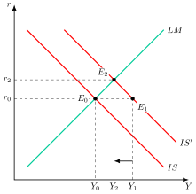
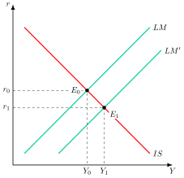
Eficacia de las políticas
La eficacia de cada política depende de las pendientes. La fiscal es más eficaz cuanto más sensible es la demanda de dinero al tipo de interés, \(h\), y menos lo es la inversión, \(b\), y la monetaria al revés. En los extremos, con la trampa de la liquidez la LM es horizontal y solo funciona la política fiscal, y en el caso clásico, en el que la demanda de dinero no depende del tipo de interés, \(h=0\), la LM es vertical y solo funciona la monetaria.7
De la IS-LM a la DA-OA
Al relajar el supuesto de precios constantes, una bajada del nivel de precios, \(P\), aumenta los saldos reales y desplaza la LM hacia la derecha, de modo que la renta aumenta. Así se obtiene la demanda agregada, DA, con pendiente negativa, y, añadiendo una oferta agregada, OA, el modelo DA-OA de la síntesis neoclásica, en el que las políticas de demanda son eficaces a corto plazo y a largo plazo solo elevan los precios.8
Las críticas
En los años setenta el modelo entró en crisis por tres razones:
La estanflación. La curva de Phillips, que cerraba el modelo como una disyuntiva estable entre inflación y desempleo, dejó de cumplirse cuando ambos subieron a la vez.9
La crítica de Lucas. Los parámetros de un modelo econométrico resumen reglas de decisión de los agentes que cambian con la política, de modo que cualquier cambio de política altera el modelo, que no sirve para comparar políticas alternativas.10
La falta de microfundamentos. Sus ecuaciones no se derivan de decisiones óptimas, el modelo es estático, ignora las expectativas y no modeliza cómo decide la autoridad.
A ello se suma que la LM describe mal la política monetaria actual, porque los bancos centrales fijan el tipo de interés y no la cantidad de dinero. Romer (2000) propone por ello sustituirla por una regla de tipo de interés del banco central.11 Estas críticas abren dos líneas de trabajo: identificar en los datos qué perturbaciones mueven la economía y construir un modelo con microfundamentos que las explique.
2.3 Las perturbaciones en los datos: los modelos VAR 1'
Tras la crisis del IS-LM, la pregunta pasó a ser qué perturbaciones, o shocks, causan las fluctuaciones y cómo se propagan. La respuesta tiene consecuencias de política:
Para la teoría de los ciclos reales, las fluctuaciones son la respuesta óptima de una economía sin fricciones a cambios en la tecnología, de modo que las políticas de estabilización pueden ser innecesarias o incluso contraproducentes.12
Para la tradición keynesiana, en cambio, las recesiones son periodos de uso ineficientemente bajo de los recursos, que las políticas de demanda pueden corregir.
La herramienta para separar unas perturbaciones de otras es el modelo de vectores autorregresivos (VAR):
Sims (1980) lo propuso como alternativa a los grandes modelos macroeconométricos, cuyas restricciones de identificación consideraba increíbles.13
Es un sistema en el que cada variable depende de sus propios valores pasados y de los de las demás.14
Invertido, el VAR expresa el vector de variables, \(X_{t}\), como suma de las perturbaciones estructurales presentes y pasadas, \(e_{t}\), no correlacionadas entre sí, que es su representación de medias móviles: \[X_{t}=\sum^{\infty}_{j=0}A\left(j\right)\cdot e_{t-j} \tag{2.4}\] donde la matriz \(A\left(j\right)\) recoge el efecto de cada perturbación al cabo de \(j\) periodos.15
La sucesión de esos efectos es la función impulso-respuesta, que muestra cómo reacciona cada variable a una perturbación a lo largo del tiempo.16
Como las perturbaciones no se observan, hay que imponer restricciones de identificación sacadas de la teoría económica.17
Tres trabajos establecieron los resultados de referencia:
Blanchard y Quah (1989) suponen que la demanda no tiene efecto a largo plazo sobre el nivel de la producción y la oferta sí. Con esa identificación, las perturbaciones de demanda tienen un efecto en forma de campana que desaparece en dos o tres años, y las de oferta acumulan su efecto hasta una meseta a los cinco años.18
Galí (1992) distingue cuatro perturbaciones y encuentra que, ante una de demanda, la producción y los precios se mueven en el mismo sentido, y ante una de oferta, en sentidos opuestos.19
Galí (1999) muestra que las horas trabajadas caen tras una mejora tecnológica, lo que es difícil de conciliar con los ciclos reales y coherente con un modelo de precios rígidos.20
De ahí salen dos lecciones para la política económica:
La firma de un shock está en cómo se mueven juntas la producción y la inflación: en el mismo sentido si es de demanda y en sentidos opuestos si es de oferta.
Un modelo útil para la política debe reproducir esos hechos, con rigideces que den efectos reales a la demanda.
Con dos cautelas:
El carácter permanente de la oferta es un supuesto de identificación y no un resultado.
No hay acuerdo sobre el peso de cada perturbación.21
2.4 El modelo neokeynesiano canónico: determinación del equilibrio 4'
El modelo que responde a esas exigencias es el neokeynesiano, cuya formulación de referencia es la de Clarida, Galí y Gertler (1999) y que expone en detalle Galí (2015). Es un modelo dinámico y estocástico de equilibrio general (DSGE) con microfundamentos, que sustituye el nivel de precios por la tasa de inflación como variable nominal.22
Los supuestos
El modelo conserva de la teoría de los ciclos reales su estructura de equilibrio general dinámico estocástico, con un hogar representativo y empresas que optimizan, expectativas racionales y vaciado de todos los mercados, y le superpone tres elementos keynesianos:23
La competencia monopolística: los precios los fijan las empresas para maximizar sus beneficios, y no un subastador walrasiano que vacía todos los mercados.24
Las rigideces nominales: las empresas tienen restricciones a la frecuencia con que pueden ajustar sus precios.25
La no neutralidad de la política monetaria a corto plazo: los cambios del tipo nominal no se trasladan uno a uno a la inflación esperada, de modo que varía el tipo real y con él la demanda, la producción y el empleo. A largo plazo todos los precios se ajustan y la economía vuelve a su equilibrio natural.26
Esto tiene dos consecuencias:
La respuesta de la economía a los shocks es en general ineficiente, y la no neutralidad de la política monetaria abre espacio para intervenciones que mejoren el bienestar.27
Como sus parámetros proceden de las preferencias y de la tecnología, el modelo permite comparar reglas de política sin caer en la crítica de Lucas.28
Los tres bloques
Cada bloque procede de las decisiones de un agente. Los hogares, que maximizan su utilidad intertemporal, dan lugar a la curva IS dinámica. El output gap, \(x_{t}\), es la diferencia entre la producción efectiva y la natural, que es la que habría con precios flexibles, y depende del output gap esperado y del tipo de interés real: \[x_{t}=E_{t}\left\{ x_{t+1}\right\} -\dfrac{1}{\sigma}\cdot\left(i_{t}-E_{t}\left\{ \pi_{t+1}\right\} -r^{n}_{t}\right) \tag{2.5}\] donde \(i_{t}\) es el tipo de interés nominal, \(\pi_{t}\) la inflación, \(E_{t}\) el operador de expectativas formadas en \(t\) y \(\sigma\) la inversa de la elasticidad de sustitución intertemporal del consumo. El output gap aumenta con el esperado, porque los hogares suavizan el consumo, y disminuye cuando el tipo real supera al natural, \(r^{n}_{t}\), que es el que habría con precios flexibles.29
Las perturbaciones de preferencias y la tecnológica entran en la IS a través de ese tipo natural: \[r^{n}_{t}=\rho-\sigma\cdot\left(1-\rho_{a}\right)\cdot\psi_{ya}\cdot a_{t}+\left(1-\rho_{z}\right)\cdot z_{t} \tag{2.6}\] donde \(\rho\) es la tasa de descuento, \(a_{t}\) la tecnología, \(z_{t}\) una perturbación de preferencias, \(\rho_{a}\) y \(\rho_{z}\) sus persistencias y \(\psi_{ya}>0\) la respuesta de la producción natural a la tecnología. Una mejora tecnológica reduce el tipo natural y un aumento de la impaciencia lo eleva. El gasto público, \(g_{t}\), se añade a la IS como otra perturbación de demanda.30
Las empresas, que fijan precios en competencia monopolística y solo pueden reajustarlos con una probabilidad \(1-\theta\) en cada periodo, siendo \(\theta\) el índice de rigidez de precios (Calvo 1983), dan lugar a la curva de Phillips neokeynesiana: \[\pi_{t}=\beta\cdot E_{t}\left\{ \pi_{t+1}\right\} +\kappa\cdot x_{t}+u_{t} \tag{2.7}\] donde \(\beta\) es el factor de descuento, \(\kappa\) la sensibilidad de la inflación al output gap y \(u_{t}\) una perturbación de costes. Las empresas que reajustan fijan el precio pensando en sus costes futuros, de modo que la inflación es la suma descontada de los output gaps y de las perturbaciones de costes presentes y esperados. Cuando la producción supera a la natural, el coste marginal sube y con él la inflación. El parámetro \(\kappa\) decrece con \(\theta\): cuanto más rígidos son los precios, menos reacciona la inflación al output gap.31
El banco central cierra el sistema con una regla de tipos de interés, la regla de Taylor: \[i_{t}=\rho+\phi_{\pi}\cdot\pi_{t}+\phi_{x}\cdot x_{t}+\varepsilon_{t} \tag{2.8}\] donde \(\phi_{\pi}\) y \(\phi_{x}\) miden la reacción del tipo nominal a la inflación y al output gap y \(\varepsilon_{t}\) es una perturbación de política monetaria. Taylor (1993) propuso como representativa de la Reserva Federal una regla con un coeficiente de 1,5 sobre la inflación y de 0,5 sobre el output gap.32
La determinación del equilibrio
Las tres ecuaciones determinan el output gap, la inflación y el tipo de interés. Sin perturbaciones, el equilibrio es el estado estacionario, con \(x_{t}=0\), \(\pi_{t}=0\) e \(i_{t}=\rho\): la producción está en su nivel natural, la inflación en su objetivo, normalizado a cero, y el tipo real coincide con el natural. Con perturbaciones, el equilibrio es una senda de las tres variables, y es única si y solo si se cumple el principio de Taylor: \[\kappa\cdot\left(\phi_{\pi}-1\right)+\left(1-\beta\right)\cdot\phi_{x}>0 \tag{2.9}\] que con \(\phi_{x}=0\) se reduce a \(\phi_{\pi}>1\). Ante más inflación el banco central debe subir el tipo nominal más que proporcionalmente, de modo que suba el tipo real.33 Con una regla más laxa, un aumento de la inflación esperada bajaría el tipo real, impulsaría la demanda y se validaría a sí mismo.34
Implicaciones de política económica
Resuelta hacia delante, la IS muestra que el output gap depende de toda la senda esperada de tipos reales y no solo del actual.35 La política monetaria actúa por tanto a través de las expectativas, y su credibilidad se vuelve decisiva.36
El modelo en dos ecuaciones
Para analizarlo gráficamente se supone que las perturbaciones no son persistentes, de modo que las expectativas son nulas, \(E_{t}\left\{ x_{t+1}\right\} =E_{t}\left\{ \pi_{t+1}\right\} =0\). Sustituyendo la regla de Taylor en la IS, con el gasto público y con \(\hat{r}^{n}_{t}\equiv r^{n}_{t}-\rho\) la desviación del tipo natural, se obtiene la primera curva: \[\pi_{t}=\dfrac{1}{\phi_{\pi}}\cdot\left[\hat{r}^{n}_{t}+\sigma\cdot g_{t}-\varepsilon_{t}-\left(\sigma+\phi_{x}\right)\cdot x_{t}\right] \tag{2.10}\] Es la IS dinámica con la regla monetaria incorporada, ISD, que hace de nueva demanda agregada.37
La segunda es la curva de Phillips sin expectativas, CPNK, la nueva oferta agregada: \[\pi_{t}=\kappa\cdot x_{t}+u_{t} \tag{2.11}\]
Las expectativas nulas no son un supuesto adicional, sino una consecuencia del primero. Si una perturbación solo dura un periodo, nadie espera para mañana ningún shock. Y como, cuando se cumple el principio de Taylor, el output gap y la inflación de equilibrio dependen solo de las perturbaciones del momento, tampoco se espera para mañana ni output gap ni inflación: las expectativas quedan ancladas en el objetivo. El modelo dinámico se convierte así en un modelo DA-OA estático, en el que cada perturbación desplaza una de las dos curvas y basta comparar el corte inicial con el final. El precio de esta simplificación es dejar fuera del gráfico el canal de las expectativas, que se analiza en las implicaciones del modelo, pero ningún resultado cambia de signo.38
Análisis gráfico
Gráficamente, en un plano del output gap, \(x_{t}\), y la inflación, \(\pi_{t}\), como el de la Figura 2.2, se representan la ISD y la CPNK. Así:
La ISD tiene pendiente negativa, \(-\left(\sigma+\phi_{x}\right)/\phi_{\pi}\): ante más inflación el banco central sube el tipo real y reduce la demanda.39 Es más plana cuanto más agresiva es la respuesta a la inflación. Se desplaza hacia arriba con las perturbaciones de demanda, \(z_{t}\) y \(g_{t}\), y hacia abajo con las mejoras tecnológicas, \(a_{t}\), y con las subidas de tipos no previstas por la regla, \(\varepsilon_{t}\).
La CPNK tiene pendiente positiva, \(\kappa\), mayor cuanto más flexibles son los precios,40 y se desplaza hacia arriba con las perturbaciones de costes, \(u_{t}\).
Sin perturbaciones se cortan en el origen, \(E_{0}\): el output gap es nulo y la inflación está en su objetivo.
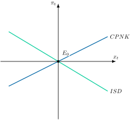
Críticas
La principal crítica es empírica. Galí, Gertler y López-Salido (2005) rechazan la curva de Phillips puramente prospectiva, porque la inflación pasada es significativa, aunque el comportamiento prospectivo domina, y el output gap, además, no es observable.41
2.5 Perturbaciones de demanda y de oferta y respuesta de las políticas 6'
Con el modelo en el plano, cada perturbación desplaza una curva. Para cada tipo se estudian su origen, sus efectos sobre el output gap y la inflación y la respuesta de las políticas monetaria y fiscal. Gráficamente, en tres planos del output gap, \(x_{t}\), y la inflación, \(\pi_{t}\), como los de la Figura 2.3, se representan los desplazamientos de la ISD y de la CPNK ante cada perturbación.
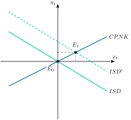
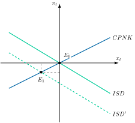
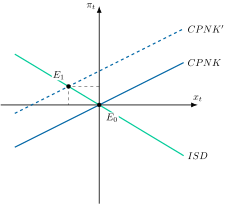
Las perturbaciones de demanda
Origen y efectos
Las perturbaciones de demanda proceden de cambios en las preferencias, como un mayor deseo de consumir hoy, \(z_{t}\), o en el gasto público, \(g_{t}\). En la Figura 2.3 (a), un aumento de cualquiera de ellas desplaza la ISD hacia arriba, hasta \(ISD^{\prime}\), y el equilibrio pasa de \(E_{0}\) a \(E_{1}\): el output gap y la inflación suben a la vez, como en la evidencia de los modelos VAR. Con precios rígidos, la mayor demanda eleva la producción, las empresas que pueden reajustar suben precios y el banco central eleva el tipo nominal y, como la inflación esperada no cambia, sube el tipo real, que frena en parte la expansión. Una perturbación negativa, como un aumento del deseo de ahorrar, tiene los efectos contrarios.42
Respuesta de la política monetaria
Gráficamente, en dos planos del output gap, \(x_{t}\), y la inflación, \(\pi_{t}\), como los de la Figura 2.4, se representa la respuesta de la política monetaria. Así:
En la Figura 2.4 (a), si el banco central sube el tipo nominal lo suficiente para compensar toda la perturbación de demanda, el cambio del tipo natural y el del gasto público, devuelve la ISD a su posición inicial y la economía regresa a \(E_{0}\). Estabiliza a la vez la inflación y el output gap.43
Es la divina coincidencia: sin perturbaciones de costes, \(u_{t}=0\), la CPNK implica que la inflación es nula si y solo si el output gap lo es, de modo que estabilizar la inflación lleva la producción a su nivel natural, que en el modelo básico coincide con el eficiente, sin que el banco central necesite conocer ninguno de los dos.44
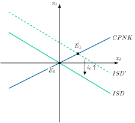
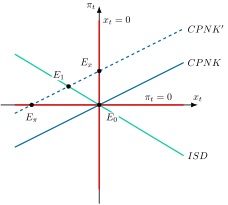
Implicaciones de política económica
La implicación es que, ante perturbaciones de demanda, basta un instrumento, el tipo de interés, y que el objetivo de inflación es una buena guía. La historia lo ilustra con la Gran Moderación:
Desde mediados de los ochenta hasta la crisis de 2007, la volatilidad de la producción y de la inflación cayó con fuerza.45
Coincidió con una Reserva Federal que, desde Volcker, cumplía el principio de Taylor, frente a la política acomodaticia de los setenta.46
El modelo neokeynesiano dio a esa práctica su respaldo teórico, aunque Blanchard y Galí (2007) formularon la divina coincidencia a posteriori y advierten de que es una propiedad del modelo básico que desaparece con rigideces reales de los salarios.
La buena suerte, con perturbaciones más pequeñas, explicaría buena parte de la menor volatilidad, y el debate sigue abierto.47
La política fiscal
Como el gasto público es una de esas perturbaciones, una expansión fiscal desplaza la ISD hacia arriba, pero su efecto sobre el output gap es modesto, porque el banco central sube los tipos para contener la inflación. Es el equivalente moderno del efecto expulsión del IS-LM.48 El multiplicador vale 1 si el tipo real se mantiene constante, es menor bajo una regla de Taylor y puede ser mucho mayor cuando el tipo nominal está en su cota cero, porque entonces no sube y la mayor inflación esperada reduce el tipo real.49 Además, unos hogares ricardianos que anticipan impuestos futuros reducen su consumo, mientras que los que tienen restricciones de liquidez lo aumentan, de modo que el efecto depende de su peso.50
Las perturbaciones de oferta
Las perturbaciones de oferta son de dos tipos: tecnológicas, cambios en la productividad total de los factores, \(a_{t}\), y de costes, \(u_{t}\), que recogen todo lo que eleva los costes marginales al margen del output gap, como los salarios o los precios de la energía.51
Perturbaciones tecnológicas
En la Figura 2.3 (b), una mejora tecnológica reduce el tipo natural y desplaza la ISD hacia abajo. La producción natural sube, pero la efectiva sube menos, porque con la regla de Taylor el tipo real no baja lo suficiente: el output gap y la inflación caen y, con los valores habituales de los parámetros, el empleo se reduce, como en la evidencia de Galí (1999).52 Aquí la divina coincidencia se mantiene: si el banco central baja el tipo nominal hasta el nuevo tipo natural, el output gap y la inflación vuelven a cero y la producción alcanza su nuevo nivel natural.
Perturbaciones de costes
En la Figura 2.3 (c), una perturbación de costes desplaza la CPNK hacia arriba: la inflación sube y el output gap cae a la vez. Es la estanflación, y rompe la divina coincidencia, porque la inflación ya no es nula cuando lo es el output gap.53 En la Figura 2.4 (b) se ve la disyuntiva. Así:
Si el banco central estabiliza por completo la inflación, la ISD se vuelve horizontal en \(\pi_{t}=0\) y la economía va a \(E_{\pi}\), con una caída del output gap de \(u_{t}/\kappa\), mayor cuanto más rígidos son los precios.
Si estabiliza por completo el output gap, la ISD se vuelve vertical en \(x_{t}=0\) y la economía va a \(E_{x}\), con toda la perturbación trasladada a la inflación.
Entre ambos extremos, el banco central puede elegir un punto intermedio como \(E_{1}\), en el que acepta un output gap negativo para amortiguar la subida de la inflación. La política óptima es de este tipo, y el punto exacto depende del peso que dé al output gap.54
Con la regla de Taylor, la economía llega a un punto intermedio de ese tipo: \[x_{t}=-\dfrac{\phi_{\pi}}{\Delta}\cdot u_{t},\qquad\pi_{t}=\dfrac{\sigma+\phi_{x}}{\Delta}\cdot u_{t} \tag{2.12}\] donde \(\Delta\equiv\sigma+\phi_{x}+\kappa\cdot\phi_{\pi}\). El output gap cae y la inflación sube, y una regla más dura con la inflación, con un \(\phi_{\pi}\) mayor, modera la subida de la inflación a costa de una caída mayor del output gap.55
Respuesta de la política monetaria
Si el banco central decide en cada periodo, su condición de optimalidad es la regla \(x_{t}=-\left(\kappa/\vartheta\right)\cdot\pi_{t}\), con \(\vartheta\) el peso que da al output gap frente a la inflación: acomoda en parte la inflación, que es lo que se denomina objetivo de inflación flexible.56 Con esa regla, si el shock de costes tiene una persistencia \(\rho_{u}\), la inflación y el output gap son: \[\pi_{t}=\dfrac{\vartheta}{\kappa^{2}+\vartheta\cdot\left(1-\beta\cdot\rho_{u}\right)}\cdot u_{t},\qquad x_{t}=-\dfrac{\kappa}{\kappa^{2}+\vartheta\cdot\left(1-\beta\cdot\rho_{u}\right)}\cdot u_{t} \tag{2.13}\] de modo que el shock se reparte entre más inflación y menos actividad según el peso \(\vartheta\).57 Si puede comprometerse de forma creíble, mejora la disyuntiva, porque la promesa de mantener el output gap negativo en el futuro reduce hoy la inflación esperada.58
Políticas fiscal y de oferta
La política fiscal tampoco debe estimular la demanda, porque añadiría inflación. La recomendación del BCE ante la crisis energética de 2022 fue que las ayudas fueran temporales, selectivas y adaptadas, para no exigir una respuesta monetaria más dura. Las políticas de oferta, como la diversificación energética o la mejora de la productividad, son las que atacan la causa.59
¿Cuándo es más eficaz cada política?
La eficacia relativa de las políticas depende, por tanto, de la perturbación y del margen del banco central. Hay tres casos:
Ante perturbaciones de demanda y con el tipo de interés libre, la política monetaria basta y la fiscal tiene un multiplicador modesto, porque el banco central la compensa.60
Cuando la política monetaria no puede reaccionar, en la cota cero de los tipos o en una unión monetaria ante perturbaciones de una región, la política fiscal recupera eficacia.61
Ante perturbaciones de costes, la política monetaria se enfrenta a una disyuntiva, la fiscal debe ser selectiva y temporal y las políticas de oferta atacan la causa.
2.6 Referencia al caso de una economía abierta 4'
Con la apertura aparecen el tipo de cambio, los flujos de capital y nuevas fuentes de perturbaciones, como la demanda exterior o el precio de las materias primas importadas. La pregunta es cuánta autonomía conserva la política económica y cómo se transmiten los shocks entre países y sectores.
Del modelo Mundell-Fleming al neokeynesiano abierto
El modelo Mundell-Fleming
Mundell (1963) y Fleming (1962) extendieron el IS-LM a una economía pequeña y abierta con precios fijos, añadiendo la curva de balanza de pagos (BP). Con perfecta movilidad de capitales, su resultado es una asimetría: con tipo de cambio fijo la política monetaria es ineficaz y la fiscal eficaz, y con tipo flexible ocurre lo contrario.62 Con tipo flexible, una expansión fiscal presiona al alza el tipo de interés, la entrada de capital aprecia la moneda y la caída de las exportaciones netas compensa exactamente el efecto multiplicador.63 Con tipo fijo, la expansión monetaria se pierde en reservas de divisas.64
Gráficamente, en dos planos de renta, \(Y\), y tipo de interés, \(r\), como los de la Figura 2.5, se representan la IS, la LM y la BP, que recoge el equilibrio exterior y que, con perfecta movilidad de capitales, es horizontal al tipo de interés mundial, \(r^{*}\). Así:
En la Figura 2.5 (a), con tipo flexible, la expansión fiscal desplaza la IS hasta \(IS^{\prime}\), pero la entrada de capital aprecia la moneda, caen las exportaciones netas y la IS vuelve a su posición: la economía sigue en \(E_{0}\).
En la Figura 2.5 (b), con tipo fijo, la expansión monetaria desplaza la LM hasta \(LM^{\prime}\), pero la salida de capital obliga al banco central a vender divisas para defender la paridad, la oferta monetaria se contrae y la LM vuelve a su posición: la economía sigue en \(E_{0}\).
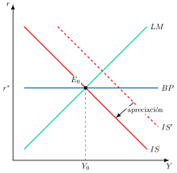
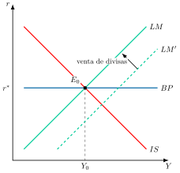
Implicaciones y límites
Es la manifestación práctica del trilema: no se pueden tener a la vez tipo de cambio fijo, libre movilidad de capitales y política monetaria autónoma.65 Sus limitaciones son las del IS-LM, precios fijos, ausencia de expectativas y falta de microfundamentos, y por eso la literatura posterior parte del modelo neokeynesiano.
El modelo neokeynesiano abierto
Galí y Monacelli (2005) extienden el modelo de tres ecuaciones a una pequeña economía abierta.66 El resultado es el mismo modelo de la economía cerrada con tres cambios:
La inflación relevante es la de los bienes nacionales, \(\pi_{H,t}\), que es la que fijan las empresas del país, y la regla de Taylor responde a ella.
Los parámetros \(\sigma\) y \(\kappa\) pasan a ser \(\sigma_{\upsilon}\) y \(\kappa_{\upsilon}\), que dependen del grado de apertura, \(\upsilon\), y de la sustituibilidad entre bienes nacionales y extranjeros, porque el tipo de interés actúa también a través de los términos de intercambio. Con una economía cerrada, \(\upsilon=0\), vuelven a ser \(\sigma\) y \(\kappa\).67
El tipo natural, \(r^{n}_{t}\), depende además del crecimiento esperado del producto mundial.68
El modelo queda así: \[\begin{aligned} x_{t} & =E_{t}\left\{ x_{t+1}\right\} -\dfrac{1}{\sigma_{\upsilon}}\cdot\left(i_{t}-E_{t}\left\{ \pi_{H,t+1}\right\} -r^{n}_{t}\right) \end{aligned} \tag{2.14}\] \[\begin{aligned} \pi_{H,t} & =\beta\cdot E_{t}\left\{ \pi_{H,t+1}\right\} +\kappa_{\upsilon}\cdot x_{t}+u_{t} \end{aligned} \tag{2.15}\] \[\begin{aligned} i_{t} & =\rho+\phi_{\pi}\cdot\pi_{H,t}+\phi_{x}\cdot x_{t}+\varepsilon_{t} \end{aligned} \tag{2.16}\] Son las tres ecuaciones de la economía cerrada con los subíndices cambiados.69
Gráficamente, en un plano de output gap, \(x_{t}\), e inflación nacional, \(\pi_{H,t}\), como el de la Figura 2.6, se representan la ISD y la CPNK abiertas, que con expectativas nulas se dibujan igual que en la economía cerrada. Así:
Una perturbación que eleva el tipo natural, interna o exterior, desplaza la ISD hasta \(ISD^{\prime}\), y la economía pasa de \(E_{0}\) a \(E_{1}\), con output gap e inflación nacional positivos.
Si el banco central sube el tipo de interés al ritmo del tipo natural, la ISD vuelve a su posición y la economía regresa a \(E_{0}\), sin output gap ni inflación nacional.70
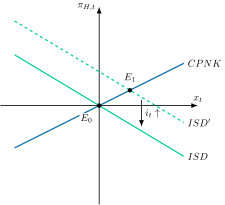
Su principal implicación es que la divina coincidencia se mantiene: una política de objetivo estricto de inflación nacional estabiliza a la vez el output gap y la inflación nacional, a costa de una mayor volatilidad del tipo de cambio y de la inflación de los precios de consumo. En el caso de referencia del modelo es la política óptima, y una regla de Taylor sobre la inflación nacional domina a la basada en los precios de consumo y esta al tipo de cambio fijo. El tipo de cambio flexible actúa así como amortiguador.71
El precio del petróleo, un shock de costes importado
En una economía importadora de energía, la subida del precio del petróleo es el ejemplo clásico de perturbación de costes: desplaza la CPNK hacia arriba y plantea al banco central la disyuntiva de la Figura 2.4 (b). Blanchard y Galí (2010) comparan los cuatro grandes episodios, que arrancan en 1973, 1979, 1999 y 2002, con subidas de magnitud similar, y encuentran que sus efectos sobre la inflación y la actividad fueron mucho menores en los años 2000.72 Proponen tres explicaciones que no se excluyen entre sí:
Del trilema al dilema
Rey (2015) sostiene que la integración financiera ha erosionado el margen que el trilema atribuye al tipo flexible. Existe un ciclo financiero global en los flujos de capital, los precios de los activos y el crédito, que se mueve con el VIX, un indicador de incertidumbre y aversión al riesgo, y uno de cuyos determinantes es la política monetaria del país central.76 Mientras el capital se mueva libremente, ese ciclo condiciona las políticas monetarias nacionales con independencia del régimen cambiario, y el trilema se convierte en un dilema: la política monetaria independiente solo es posible si se gestiona la cuenta de capital.77
La heterogeneidad sectorial y el contagio
Redes de producción y cadenas de valor
El análisis anterior trata la economía como un solo sector, pero una perturbación que golpea a un sector puede propagarse al resto.78 Acemoglu, Carvalho, Ozdaglar y Tahbaz-Salehi (2012) muestran que, con relaciones input-output entre sectores, los shocks sectoriales se propagan en cascada a los sectores que compran sus productos, no se compensan entre sí y pueden generar fluctuaciones agregadas, sobre todo cuando unos pocos sectores son proveedores centrales del resto.79 La apertura extiende el contagio a otros países a través de las cadenas globales de valor. En el modelo de Bonadio, Huo, Levchenko y Pandalai-Nayar (2021), una cuarta parte de la caída del PIB durante la pandemia se debió a esa transmisión.80
Implicaciones de política económica
Esa heterogeneidad complica la respuesta de política. Baqaee y Farhi (2022) muestran que las perturbaciones de oferta sectoriales son estanflacionarias y que, cuando unos sectores tienen la oferta restringida y otros la demanda deprimida, los estímulos de demanda agregada pierden eficacia: aumentan la escasez y la inflación en los primeros sin reactivar del todo los segundos.81 El Covid es el caso extremo: según Guerrieri y coautores, pudo ser un shock de oferta keynesiano, capaz de provocar un déficit de demanda mayor que el propio shock y de reducir la potencia de la política fiscal.82
El caso de Irán y Ormuz
El conflicto con Irán y el bloqueo del estrecho de Ormuz son el ejemplo actual. El shock nace en la energía, pero alcanza a los fertilizantes, la petroquímica, los plásticos o el helio, y se propaga por las cadenas de suministro a los costes de otros bienes intermedios y finales.83 Para la política monetaria es una perturbación de costes, con la disyuntiva ya vista y el riesgo añadido de efectos de segunda ronda, es decir, de que la subida de la energía se traslade a los salarios y a los márgenes y se vuelva persistente, y para la fiscal la recomendación vuelve a ser que las ayudas sean temporales y focalizadas.84 Según el Banco de España, a comienzos de octubre de 2026 el bloqueo se había prolongado tras el colapso del acuerdo alcanzado en junio.85
2.7 Conclusiones  30"
30"
Como conclusión, el modelo de oferta y demanda agregada ha pasado de ser un conjunto de curvas a un marco con microfundamentos en el que la política económica depende de qué perturbación hay detrás. Antes de elegir el instrumento, hay que saber de dónde viene el shock.
Esta lección está hoy más viva que nunca:
La guerra de Irán y el bloqueo del estrecho de Ormuz han reproducido un shock de costes: según la estimación preliminar de Eurostat, la energía registró en septiembre de 2026 una inflación anual del 18,8 % en la zona euro.86 Un miembro del Comité Ejecutivo del BCE lo describe como un shock de oferta negativo con disyuntivas inevitables.87
El Covid mostró que un shock de oferta puede provocar un déficit de demanda, y que el gasto público rinde menos por unidad.88
Con un ciclo financiero global, la autonomía de la política monetaria con tipo de cambio flexible ya no está garantizada, que es el dilema de Rey.89
Los modelos grandes sirven para simular políticas y los pequeños, como el de tres ecuaciones, para entender por qué funcionan. ¿Debe decidirse con el que mejor predice o con el que mejor se entiende?90
Apéndice
2.A.1. El modelo IS-LM completo
En el modelo IS-LM, para Keynes el lado de la demanda juega un papel primordial en la determinación del equilibrio macroeconómico. Su principal aportación consiste en la realización de un análisis coherente y sistemático de cómo se ajustan las economías de mercado ante perturbaciones de DA cuando los precios y salarios no son flexibles.
La DA muestra el nivel de precios y de producción en los que el mercado de bienes y dinero se encuentran simultáneamente en equilibrio. Para hallar la DA se han de considerar las demandas que realizan los agentes en esta economía cerrada en el marco del modelo IS-LM, el cual se basa en los siguientes supuestos:
Economía cerrada y con Sector Público.
Modelo de corto plazo, es decir, tecnología dada, capital fijo y preferencias consumidores dadas.
Modelo estático, es decir, no existe referencia temporal.
Precios y salarios constantes, por lo que en una economía sin inflación el tipo de interés real coincide con el tipo de interés nominal91.
Se produce un solo bien que es demandado como consumo, \(C\), inversión, \(I\), o gasto público, \(G\).
Existen 2 activos: dinero y bonos.
A continuación se analizarán los equilibrios en el mercado de bienes y dinero, para posteriormente analizar el equilibrio simultáneo y obtener la DA.
Equilibrio en el mercado de bienes
La demanda en el mercado de bienes, \(Z\), se distribuye en consumo, \(C\), inversión, \(I\), y gasto público, \(G\): \[Z=C+I+G \tag{2.17}\]
Analizando cada uno de los componentes:
La demanda de consumo –en un contexto de corto plazo– depende de una parte de consumo autónomo, \(C_{0}\), y de otra que depende de la propensión marginal a consumir, \(c_{y}\), y de la renta disponible, \(\left(1-\tau_{y}\right)\cdot Y\), situándose los valores de la propensión marginal a consumir y del tipo impositivo, \(\tau_{y}\), entre 0 y 1: \[C=C_{0}+c_{y}\cdot\left(1-\tau_{y}\right)\cdot Y,\quad c_{y},\tau_{y}\in\left(0,1\right) \tag{2.18}\]
La demanda de inversión –teniendo en cuenta que a corto plazo el capital, precios, expectativas y depreciación son constantes– está compuesta por un componente autónomo, \(I_{0}\), y depende negativamente del tipo de interés real, \(r\), siendo \(b\) un coeficiente que mide la sensibilidad al tipo de interés real tomando valores positivos: \[I=I_{0}-b\cdot r,\quad b>0 \tag{2.19}\]
La demanda de gasto público se decide exógenamente, donde \(G_{0}\) es el gasto público autónomo: \[G=G_{0} \tag{2.20}\]
El equilibrio en el mercado de bienes se obtiene cuando la oferta, \(Y\), y la demanda de bienes, \(Z\), se encuentran en equilibrio, es decir, cuando la producción se iguala a la demanda: \(Y=Z\). Por lo tanto, sustituyendo las ecuaciones de los componentes 2.18, 2.19 y 2.20 en la expresión de demanda de bienes 2.17 se obtiene el equilibrio: \[\begin{aligned} Y & =\underbrace{C_{0}+I_{0}+G_{0}}_{A_{0}}+c_{y}\cdot\left(1-\tau_{y}\right)\cdot Y-b\cdot r\nonumber \\ Y & =A_{0}+c_{y}\cdot\left(1-\tau_{y}\right)\cdot Y-b\cdot r \end{aligned} \tag{2.21}\] donde \(A_{0}\) es la demanda autónoma de bienes, es decir, la suma de los componentes autónomos. Resolviendo la expresión 2.21 respecto a \(Y\) quedará de la siguiente manera: \[\begin{aligned} Y & =\underbrace{\dfrac{1}{1-c_{y}\cdot\left(1-\tau_{y}\right)}}_{\alpha}\cdot\left(A_{0}-b\cdot r\right)\nonumber \\ Y & =\alpha\cdot\left(A_{0}-b\cdot r\right),\quad\alpha>1 \end{aligned} \tag{2.22}\] donde \(\alpha\) es el multiplicador del gasto, o multiplicador keynesiano, el cual es superior a 1 ya que los valores de \(c_{y}\) y \(\tau_{y}\) están comprendidos entre 0 y 1.
Gráficamente, con el fin de obtener la curva IS, en un plano de demanda de bienes, \(Z\), y producción, \(Y\), como el de la Figura 2.7, se traza la bisectriz, que representa los puntos en los que la demanda se iguala a la producción, y la función de demanda de bienes, \(Z\). Asumiendo una disminución en los tipos de interés, la demanda se desplazará hacia arriba, \(Z^{\prime}\), ya que la inversión aumentará. Proyectando los efectos en un plano tipo de interés, \(r\), y producción, \(Y\), se puede observar cómo, para menores tipos de interés, \(r_{1}\), el nivel de producción asociado es mayor, \(Y_{1}\).
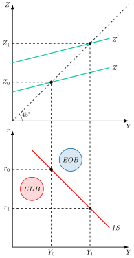
Uniendo ambos puntos se obtiene gráficamente la curva IS, que representa el conjunto de combinaciones de tipo de interés y renta92 para las cuales el mercado de bienes se encuentra en equilibrio. En los puntos por encima de la curva IS existirá un exceso de oferta de bienes, \(EOB\), y por debajo un exceso de demanda de bienes, \(EDB\). Su pendiente es negativa y viene determinada por \[\dfrac{dr}{dY}=-\dfrac{1}{\alpha\cdot b}<0 \tag{2.23}\] y será más inclinada cuanto93: menor sea la sensibilidad de la inversión al tipo de interés y menor sea el multiplicador del gasto.
A su vez, los desplazamientos de la curva ocurren cuando varía uno de los componentes autónomos y la magnitud del desplazamiento viene dada por el multiplicador \[\dfrac{dY}{dA_{0}}=\alpha \tag{2.24}\]
Equilibrio en el mercado de dinero
Por otro lado, para analizar el equilibrio en el mercado de dinero hay que tener en cuenta que para Keynes el dinero no es neutral –sus modificaciones afectan al tipo de interés y por lo tanto a la inversión– a diferencia de los neoclásicos. Además, introduce el motivo especulación por el cual los agentes demandan dinero para mantener la riqueza. A su vez, se va a suponer que el mercado de dinero se encuentra en equilibrio con el mercado de bonos94.
Por consiguiente, la demanda de dinero líquido95, \(M_{D}\), se produce
En primer lugar por motivo transacción y precaución que dependerá positivamente del nivel de renta, \(k\cdot Y\), –cuanto mayor es la actividad y la producción mayor debe ser la cantidad de recursos líquidos para cubrir los pagos que se generan– y
En segundo lugar por motivo especulación que depende inversamente de los tipos de interés, \(h\cdot r\),–cuanto mayor sea el tipo de interés mayor será el coste de oportunidad de mantener la riqueza en dinero en lugar de colocarla en bonos– : \[M_{D}=k\cdot Y-h\cdot r,\quad k,h>0 \tag{2.25}\] donde \(k\) y \(h\) son la sensibilidad de la demanda de saldos reales a la renta y al tipo de interés, ambas positivas.
Respecto a la oferta de dinero, \(M_{S}\), se considera que se determina exógenamente por el banco central, de modo que es independiente de la renta y el tipo de interés, es decir, inelástica:
\[M_{S}=\dfrac{M}{P} \tag{2.26}\]
donde \(M\) es la cantidad de dinero en circulación y \(P\) el nivel de precios. Además, como en el modelo IS-LM se parte del supuesto de que los precios son fijos, la oferta monetaria real solo variará con la oferta monetaria nominal, y con \(P\) normalizado a 1 se tiene \(M_{S}=M\).
El equilibrio en el mercado de dinero se alcanzará cuando la oferta y la demanda se igualan:
\[\begin{aligned} M_{S} & =M_{D}\nonumber \\ \dfrac{M}{P} & =k\cdot Y-h\cdot r \end{aligned} \tag{2.27}\]
Despejando 2.27 en función de la renta se obtendrá la expresión de la LM \[Y=\dfrac{1}{k}\cdot\left(\dfrac{M}{P}+h\cdot r\right) \tag{2.28}\] o en función del tipo de interés \[r=\dfrac{1}{h}\cdot\left(k\cdot Y-\dfrac{M}{P}\right) \tag{2.29}\]
Gráficamente, en un plano tipo de interés, \(r\), y oferta monetaria, \(M\), como el de la Figura 2.8, para obtener la curva LM se representa la oferta monetaria real, \(\dfrac{M_{S}}{P}\), que es inelástica, y la demanda de dinero, \(M_{D}\), con pendiente negativa, en cuya intersección el mercado de dinero se encontrará en equilibrio.
En este contexto, se va a suponer un aumento de la renta, lo que hará que se desplace la demanda de dinero hacia arriba, \(M^{\prime}_{D}\), por motivo transacción y precaución. Este cambio de equilibrio se puede proyectar en un plano tipo de interés y renta, observándose que para mayores niveles de renta, \(Y_{1}\), los tipos de interés asociados serán mayores, \(r_{1}\). La subida del tipo de interés se debe a que, al tipo de interés inicial, la mayor renta eleva la demanda de dinero, de modo que existirá un exceso de demanda de dinero, por lo tanto un exceso de oferta de bonos, disminuyendo el precio de los bonos y aumentando los tipos de interés.
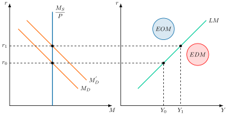
Uniendo ambos puntos se obtiene gráficamente la curva LM, que representa el conjunto de combinaciones de tipo de interés y renta para las cuales el mercado de dinero se encuentra en equilibrio. Los puntos por encima de la LM representarán un exceso de oferta de dinero, \(EOM\), mientras que los puntos por debajo un exceso de demanda de dinero, \(EDM\). Su pendiente es positiva y viene dada por \[\dfrac{dr}{dY}=\dfrac{k}{h}>0 \tag{2.30}\] será más inclinada cuanto96: mayor sea la sensibilidad de la demanda de dinero a la renta, \(k\), y menor sea la sensibilidad de la demanda de dinero al tipo de interés, \(h\).
Los desplazamientos de la \(LM\) se explican por cambios en la oferta monetaria. Ante aumentos de la oferta monetaria para los tipos de interés iniciales existiría un exceso de oferta de dinero, es decir, un exceso de demanda de bonos lo que aumentaría el precio de los bonos y disminuiría los tipos de interés. Por lo tanto la curva LM se desplazará hacia la derecha y para el nivel de renta inicial los tipos de interés asociados serán menores.
La magnitud del desplazamiento viene dada por el multiplicador del mercado de dinero: \[\dfrac{dY}{d\frac{M}{P}}=\dfrac{1}{k} \tag{2.31}\]
Equilibrio simultáneo
Así, para analizar el equilibrio simultáneo se analizará la interrelación de la curva IS y la curva LM , es decir, aquellas combinaciones de tipos de interés y renta tales que ambos mercados están en equilibrio.
Gráficamente, en un plano de renta y tipo de interés como el de la Figura 2.9, el punto que garantiza el equilibrio simultáneo es la intersección de ambas curvas en \(E_{0}\), donde ambos mercados se vacían.
Analíticamente, el modelo se trata de un sistema de dos ecuaciones con dos incógnitas, renta y tipo de interés, cuya resolución permite obtener los valores de equilibrio de ambas variables. Combinando la expresión de la LM con la IS y despejando respecto al nivel de renta es posible obtener el equilibrio de ambos mercados \[Y=\underbrace{\dfrac{1}{1-c_{y}\cdot\left(1-\tau_{y}\right)+b\cdot\dfrac{k}{h}}}_{\eta}\cdot\left(A_{0}+\dfrac{b}{h}\cdot\dfrac{M_{S}}{P}\right) \tag{2.32}\] donde teniendo en cuenta el primer término de la ecuación, \(\eta\), es posible obtener el multiplicador de política fiscal \[\dfrac{dY}{dA_{0}}=\eta \tag{2.33}\] y el multiplicador de política monetaria \[\dfrac{dY}{d\frac{M}{P}}=\eta\cdot\frac{b}{h} \tag{2.34}\] por lo que el valor de los parámetros del mercado de bienes y de dinero determinarán la eficacia de la política fiscal y monetaria97.
Además, una política fiscal expansiva, por ejemplo, desplaza la curva IS a la derecha, lo que permite descomponer el movimiento en 2 efectos98:
Efecto multiplicador o renta (\(E_{0}\) a \(E_{1}\)): el aumento del gasto público aumenta la renta a través del multiplicador.
Efecto expulsión o crowding out (\(E_{1}\) a \(E_{2}\)): el aumento de la renta incrementa la demanda de dinero, lo que da lugar a un exceso de oferta de bonos, por lo que el tipo de interés se eleva, la inversión disminuye y la renta cae99.

La demanda agregada
Por su parte, a partir del equilibrio simultáneo en el mercado de bienes y monetario se podrá obtener la demanda agregada mediante modificaciones en los precios para delimitar las modificaciones que se producen en la renta.
Gráficamente, como se observa en la Figura 2.10, para obtener la DA se supondrá una reducción del nivel de precios, relajando el supuesto de precios fijos que se ha mantenido hasta ahora:
Partiendo de un equilibrio simultáneo del mercado de bienes y monetario, en un plano tipo de interés y renta, si disminuyen los precios, la cantidad de dinero en términos reales aumenta, lo que da lugar a un exceso de oferta de saldos reales, por lo que los agentes reaccionarán comprando bonos, lo que aumentará su precio y el tipo de interés disminuirá.
Por ello, la curva LM se desplazará hacia la derecha, por lo que para el nuevo equilibrio los tipos de interés asociados serán menores, \(r_{1}\), aumentando la inversión y por lo tanto la renta. Proyectando el efecto en un plano de precios y niveles de renta, se puede observar cómo, para menores precios, \(P_{1}\), el nivel de renta asociado es mayor, \(Y_{1}\).
Como consecuencia, la curva de DA tendrá pendiente negativa.
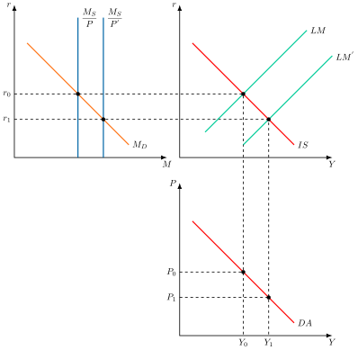
Por consiguiente, para un nivel de precios dado, la curva de demanda agregada se desplaza hacia afuera ante incrementos de la oferta de dinero o de los componentes del gasto autónomo, \(A_{0}\), ya que hacen que aumente la renta.
Además, la curva de demanda agregada será más vertical cuanto más vertical sea la IS –menor sensibilidad de la inversión al tipo de interés, \(b\), y menor propensión marginal a consumir,\(c_{y}\)– y más plana la LM –mayor sensibilidad de la demanda de dinero al tipo de interés \(h\)100–101.
Críticas del modelo IS-LM
Sin embargo, el modelo IS-LM no está exento de críticas:
Análisis dentro de un marco de estática comparativa, para muchos autores el análisis de Keynes se refería a las velocidades de ajuste, así ignora conceptos keynesianos como la incertidumbre o las expectativas.
Mezcla de variables flujos (IS) con variables stock (LM).
Crítica monetarista: se conecta el sector monetario y el real a través del tipo de interés y no a través de otros canales. Los monetaristas inciden en esto porque piensan que el dinero podía afectar la economía a través de distintos canales (es decir ambos mercados no se relacionan solo por el tipo de interés). Es decir, efectos riqueza.
Macroeconomía del desequilibrio: se interpreta mal a Keynes, su consideración sobre procesos de ajuste y las rigideces. La existencia de desempleo en equilibrio requiere de supuestos particulares.
Carencia de un entorno dinámico (precios flexibles) (Modelo Carlin y Soskice de la NEK).
Ausencia de modelización de los criterios de decisión de las autoridades (ad-hoc, sin Función de Bienestar Social).
De esta forma, aunque el modelo IS-LM permite caracterizar el lado de la demanda y analizar las políticas macroeconómicas parte del supuesto de precios constantes, por lo que los autores de la síntesis neoclásica no podían explicar las variaciones de los precios ni sus efectos hasta la formulación de la curva de Phillips (Phillips 1958), que pone de manifiesto el trade-off existente entre inflación y desempleo.
No obstante, en los años 70 esta relación desaparece empíricamente, por lo que se pone en cuestión la estabilidad teórica de la curva de Phillips siendo necesario estudiar los componentes de la oferta, al igual que habían hecho los economistas clásicos, y analizar el equilibrio macroeconómico en su conjunto.
2.A.2. Derivación matemática del multiplicador fiscal y monetario
Con el fin de obtener la expresión de los multiplicadores fiscal y monetario hay que seguir una serie de pasos:
Primero hay que partir de las expresiones de la IS y la LM \[\begin{align*} Y & =\alpha\cdot\left(A_{0}-b\cdot r\right)\\ \dfrac{M}{P} & =k\cdot Y-h\cdot r \end{align*}\]
Después se resuelve la ecuación de la LM para el tipo de interés \[r=\dfrac{1}{h}\cdot\left(k\cdot Y-\dfrac{M}{P}\right)\]
Por último se sustituye el valor del tipo de interés obtenido en la IS \[\begin{align*} Y & =\alpha\cdot\left(A_{0}-b\cdot\dfrac{1}{h}\cdot\left(k\cdot Y-\dfrac{M}{P}\right)\right)\\ & =\alpha\cdot A_{0}-\alpha\cdot\dfrac{k\cdot b}{h}\cdot Y+\alpha\cdot\dfrac{b}{h}\cdot\dfrac{M}{P} \end{align*}\] y ahora habría que resolver la expresión para \(Y\) \[\begin{align*} Y+\alpha\cdot\dfrac{k\cdot b}{h}\cdot Y & =\alpha\cdot A_{0}+\alpha\cdot\dfrac{b}{h}\cdot\dfrac{M}{P}\\ Y\cdot\left(1+\alpha\cdot\dfrac{k\cdot b}{h}\right) & =\alpha\cdot A_{0}+\alpha\cdot\dfrac{b}{h}\cdot\dfrac{M}{P}\\ Y & =\dfrac{\alpha}{1+\alpha\cdot\dfrac{k\cdot b}{h}}\cdot A_{0}+\dfrac{\alpha}{1+\alpha\cdot\dfrac{k\cdot b}{h}}\cdot\dfrac{b}{h}\cdot\dfrac{M}{P} \end{align*}\] ahora se trabajará sobre la expresión \(\dfrac{\alpha}{1+\alpha\cdot\dfrac{k\cdot b}{h}}\) recordando que \(\alpha=\dfrac{1}{1-c_{y}\cdot\left(1-\tau_{y}\right)}\) por lo que sustituyendo y operando \[\begin{align*} \dfrac{1/\left(1-c_{y}\cdot\left(1-\tau_{y}\right)\right)}{1+\dfrac{b\cdot k}{h}\cdot\dfrac{1}{1-c_{y}\cdot\left(1-\tau_{y}\right)}} & =\dfrac{1}{1-c_{y}\cdot\left(1-\tau_{y}\right)}\div\left(1+\dfrac{b\cdot k}{h}\cdot\dfrac{1}{1-c_{y}\cdot\left(1-\tau_{y}\right)}\right)\\ & =\dfrac{1}{1-c_{y}\cdot\left(1-\tau_{y}\right)}\cdot\dfrac{1}{1+\dfrac{b\cdot k}{h}\cdot\dfrac{1}{1-c_{y}\cdot\left(1-\tau_{y}\right)}}\\ & =\dfrac{1}{1-c_{y}\cdot\left(1-\tau_{y}\right)+\dfrac{b\cdot k}{h}\cdot\dfrac{\bcancel{1-c_{y}\cdot\left(1-\tau_{y}\right)}}{\bcancel{1-c_{y}\cdot\left(1-\tau_{y}\right)}}}\\ & =\dfrac{1}{1-c_{y}\cdot\left(1-\tau_{y}\right)+\dfrac{b\cdot k}{h}} \end{align*}\] por lo que si se sustituye en la expresión de \(Y\) se obtendrá la expresión de los multiplicadores \[Y=\dfrac{1}{1-c_{y}\cdot\left(1-\tau_{y}\right)+\dfrac{b\cdot k}{h}}\cdot A_{0}+\dfrac{\dfrac{b}{h}}{1-c_{y}\cdot\left(1-\tau_{y}\right)+\dfrac{b\cdot k}{h}}\cdot\dfrac{M}{P}\]
2.A.3. La lógica del multiplicador: el efecto en cadena del gasto
El efecto multiplicador se deriva de la idea de que el gasto de una persona se convierte en el ingreso de otra, lo que genera una reacción en cadena. El economista Richard Kahn (1931) fue el primero en desarrollar esta idea, centrándose en el empleo. Más tarde, John Maynard Keynes generalizó el concepto para aplicarlo al ingreso y lo convirtió en una herramienta clave de la Macroeconomía.
El proceso matemático detrás del multiplicador del gasto, \(\frac{1}{1-c_{y}\cdot\left(1-\tau_{y}\right)}\), es una progresión geométrica.
El proceso en cadena del multiplicador
Supóngase un aumento inicial del gasto público en una cantidad \(\Delta G\):
Primera ronda: el gobierno gasta \(\Delta G\). Este es el aumento inicial de la renta: \(\Delta Y_{1}=\Delta G\).
Segunda ronda: los receptores de este ingreso gastan una parte, determinada por la propensión marginal a consumir, \(c_{y}\). Sin embargo, primero se descuentan los impuestos proporcionales, \(\tau_{y}\). Por lo tanto, el nuevo gasto es: \(\Delta Y_{2}=c_{y}\cdot\left(1-\tau_{y}\right)\cdot\Delta G\).
Tercera ronda: el ingreso de la segunda ronda se gasta nuevamente, generando otro incremento en la renta: \(\Delta Y_{3}=c_{y}\cdot\left(1-\tau_{y}\right)\cdot\Delta Y_{2}=\left[c_{y}\cdot\left(1-\tau_{y}\right)\right]^{2}\cdot\Delta G\).
Rondas sucesivas: este proceso continúa infinitamente, con cada nuevo incremento de la renta siendo una fracción del anterior.
Desarrollo de la progresión geométrica
La suma total del aumento en la renta (\(\Delta Y\)) es la suma de todos estos incrementos:
\[\Delta Y=\Delta G+\left[c_{y}\cdot\left(1-\tau_{y}\right)\right]\cdot\Delta G+\left[c_{y}\cdot\left(1-\tau_{y}\right)\right]^{2}\cdot\Delta G+\left[c_{y}\cdot\left(1-\tau_{y}\right)\right]^{3}\cdot\Delta G+\ldots\] se puede sacar factor común \(\Delta G\) para simplificar la expresión:
\[\Delta Y=\Delta G\cdot\left[1+c_{y}\cdot\left(1-\tau_{y}\right)+\left[c_{y}\cdot\left(1-\tau_{y}\right)\right]^{2}+\left[c_{y}\cdot\left(1-\tau_{y}\right)\right]^{3}+\ldots\right]\] donde la expresión entre corchetes es una serie geométrica infinita. La suma de esta serie solo converge a un valor finito si la razón \(q=c_{y}\cdot\left(1-\tau_{y}\right)\) es menor que 1. En la economía, esto siempre es así porque \(c_{y}\) y \(\tau_{y}\) están entre 0 y 1.
La fórmula para la suma de una serie geométrica infinita es: \[S=\dfrac{1}{1-q}\] sustituyendo la razón \(q=c_{y}\cdot\left(1-\tau_{y}\right)\), la suma se convierte en: \[S=\dfrac{1}{1-c_{y}\cdot\left(1-\tau_{y}\right)}\]
Por lo tanto, el cambio total en la renta es el producto del cambio inicial en el gasto y este multiplicador: \[\Delta Y=\dfrac{1}{1-c_{y}\cdot\left(1-\tau_{y}\right)}\cdot\Delta G\]
Esto demuestra que el multiplicador del gasto es el resultado matemático del efecto en cadena que el gasto genera en la economía.
2.A.4. Caracterización de los puntos de desequilibrio en el mercado de bienes, en el mercado de dinero y en el equilibrio conjunto
En el modelo IS-LM, el equilibrio de la economía se alcanza en el punto donde se cruzan las dos curvas. Cualquier otro punto representa un desequilibrio en al menos uno de los mercados.
Desequilibrio en el Mercado de Bienes (fuera de la curva IS)
La curva IS representa todos los puntos donde el mercado de bienes y servicios está en equilibrio, es decir, donde la inversión planeada (I) es igual al ahorro planeado (S). Los puntos fuera de la curva IS indican que la producción no se corresponde con la demanda.
Puntos a la derecha de la curva IS: en esta zona, el tipo de interés es demasiado alto para el nivel de renta, o la renta es demasiado alta para el tipo de interés. Esto significa que el ahorro es mayor que la inversión (S>I) o, lo que es lo mismo, que la producción es mayor que la demanda agregada. Las empresas están produciendo más de lo que venden, por lo que acumulan inventario no deseado. Su reacción es reducir la producción, lo que disminuye la renta (Y) y mueve la economía hacia la curva IS.
Puntos a la izquierda de la curva IS: en esta zona, el tipo de interés es demasiado bajo para el nivel de renta, o la renta es demasiado baja para el tipo de interés. La inversión es mayor que el ahorro (I>S), o la demanda agregada es mayor que la producción. Las empresas están vendiendo más de lo que producen, por lo que los inventarios caen. Su reacción es aumentar la producción, lo que eleva la renta (Y) y mueve la economía hacia la curva IS.
Desequilibrio en el Mercado de Dinero (fuera de la curva LM)
La curva LM representa todos los puntos donde el mercado de dinero está en equilibrio, es decir, donde la demanda de dinero (L) es igual a la oferta de dinero (M). Los puntos fuera de la curva LM indican un desequilibrio en la cantidad de dinero que la gente quiere tener.
Puntos a la derecha de la curva LM: en esta zona, la renta es demasiado alta para el tipo de interés, o el tipo de interés es demasiado bajo para el nivel de renta. Esto significa que la demanda de dinero es mayor que la oferta de dinero (L>M). Los individuos quieren tener más dinero líquido del que tienen y, para conseguirlo, venden bonos. El aumento de la oferta de bonos hace que su precio baje y que el tipo de interés suba, lo que mueve la economía hacia la curva LM.
Puntos a la izquierda de la curva LM: en esta zona, la renta es demasiado baja para el tipo de interés, o el tipo de interés es demasiado alto para el nivel de renta. La oferta de dinero es mayor que la demanda de dinero (M>L). Los individuos tienen un excedente de dinero que no desean mantener, por lo que lo utilizan para comprar bonos. El aumento de la demanda de bonos hace que su precio suba y que el tipo de interés baje, lo que mueve la economía hacia la curva LM.
Equilibrio Conjunto
El equilibrio de la economía se produce únicamente en el punto de intersección de las curvas IS y LM. En este punto, el mercado de bienes y el mercado de dinero están en equilibrio simultáneo. La renta (\(Y_{e}\)) y el tipo de interés (\(r_{e}\)) que se encuentran en este punto son los únicos valores de equilibrio que satisfacen ambas condiciones.
Resumen
Fuera de la IS: la producción de las empresas (renta) se ajusta para volver al equilibrio.
Fuera de la LM: el tipo de interés se ajusta para volver al equilibrio.
Equilibrio: Solo en la intersección de IS y LM, donde ambos mercados están en equilibrio, el sistema es estable.
2.A.5. Equilibrio en el mercado de dinero y bonos
En el modelo IS-LM, el mercado de dinero está en equilibrio con el de bonos debido a una simplificación clave basada en el supuesto de que en la economía solo existen dos tipos de activos financieros en los que los individuos pueden mantener su riqueza:
Dinero: un activo con alta liquidez, que no rinde intereses.
Bonos: un activo con menor liquidez, que sí rinde intereses.
Esta simplificación implica que la riqueza financiera total de una economía es la suma del dinero y los bonos. Por lo tanto, si el mercado de dinero está en equilibrio, el mercado de bonos también lo estará.
La Lógica de los Mercados
La lógica detrás de esta relación es la siguiente:
Riqueza Total: la demanda de riqueza total de los individuos debe ser igual a la oferta de riqueza total de la economía.
Demanda y Oferta: la demanda total de riqueza se divide entre la demanda de dinero, \(L\), y la demanda de bonos, \(D_{b}\). La oferta total de riqueza se divide entre la oferta de dinero, \(M\), y la oferta de bonos, \(O_{b}\).
Condición de Equilibrio: Por definición, la demanda de riqueza debe ser igual a la oferta de riqueza: \[L+D_{b}=M+O_{b}\]
Ley de Walras: si se reorganiza esta ecuación, se obtiene que el exceso de demanda de dinero es igual al exceso de oferta de bonos: \[\left(L-M\right)=\left(O_{b}-D_{b}\right)\] Esto significa que si el mercado de dinero está en equilibrio \(\left(L-M\right)\), el término del lado izquierdo es cero. Esto a su vez implica que el término del lado derecho también debe ser cero \(\left(O_{b}-D_{b}\right)\), lo que significa que el mercado de bonos también está en equilibrio.
En resumen, no es necesario analizar ambos mercados por separado, ya que el equilibrio en uno de ellos garantiza automáticamente el equilibrio en el otro. Esto permite al modelo centrarse únicamente en la curva LM, que representa el equilibrio en el mercado de dinero y bonos simultáneamente.
2.A.6. Pendientes de la IS, la LM y la DA
La pendiente de la curva de demanda agregada (DA) se deriva de la interacción entre las pendientes de las curvas IS y LM. Aquí se presenta un resumen de cómo se determina la inclinación de la DA en función de esas pendientes:
1. DA Vertical (DA con pendiente infinita)
Condición: Curva IS vertical, \(b=0\), la inversión es totalmente insensible al tipo de interés.
Explicación: si la inversión no responde en absoluto a los tipos de interés, los cambios en los precios (que desplazan la curva LM) no tienen ningún efecto en la producción. La producción se mantiene fija sin importar el nivel de precios.
Ejemplo: una economía en un estado de crisis extrema, guerra o colapso del sistema financiero. Aunque el banco central baje los tipos de interés a cero, las empresas no invierten debido al riesgo masivo, y los consumidores no gastan por la incertidumbre total. En este escenario, la producción está fija y no responde a los cambios en el nivel de precios.
2. DA Muy Inclinada (Steep DA)
Condición: Curva IS muy inclinada (baja sensibilidad de la inversión al tipo de interés) y/o curva LM muy plana (alta sensibilidad de la demanda de dinero al tipo de interés).
Explicación: en esta situación, un cambio en los precios (que desplaza la LM) provoca un pequeño cambio en la producción. La baja sensibilidad de la inversión a los tipos de interés y la alta sensibilidad de la demanda de dinero a los tipos de interés hacen que la producción sea poco reactiva a los cambios en el mercado monetario.
Ejemplo: una economía con empresas y consumidores muy pesimistas y cautelosos, que basan sus decisiones de gasto en las expectativas de futuro, no en los tipos de interés. Por ejemplo, en una recesión severa, una pequeña bajada de precios (que desplaza la LM) no consigue estimular la inversión ni el consumo lo suficiente como para generar una gran recuperación.
3. DA de Pendiente Normal
Condición: Ambas curvas, IS y LM, tienen una pendiente intermedia y se cruzan en un punto de equilibrio donde los cambios de política son efectivos.
Explicación: este es el caso estándar del modelo, donde los cambios de precios tienen un efecto moderado en la producción. Es el escenario utilizado para enseñar cómo las políticas fiscal y monetaria pueden influir en la economía de manera equilibrada.
Ejemplo: este es el caso estándar de una economía sana y estable en su fase de expansión. Los cambios en los tipos de interés tienen un efecto predecible y moderado tanto en el gasto como en la demanda de dinero. La política monetaria y fiscal funcionan como se espera, y los cambios de precios tienen un impacto moderado en la producción.
4. DA Poco Inclinada o Plana (Flat DA)
Condición: Curva IS muy plana (alta sensibilidad de la inversión al tipo de interés) y/o curva LM muy inclinada (baja sensibilidad de la demanda de dinero al tipo de interés).
Explicación: en este escenario, un pequeño cambio en los precios (que desplaza la LM) genera un gran cambio en la producción. La alta sensibilidad de la inversión a los tipos de interés y la baja sensibilidad de la demanda de dinero a los tipos de interés hacen que la economía sea muy reactiva a los cambios en los precios y en la política monetaria.
Ejemplo: una economía donde la inversión es muy sensible y la demanda de dinero es poco sensible a los cambios de tipos de interés. En una recesión leve, una pequeña bajada de precios puede hacer que la oferta monetaria real aumente, lo que a su vez provoca una bajada de los tipos de interés y un gran aumento del gasto de inversión. La producción reacciona con fuerza a los cambios de precios.
5. DA Vertical por la trampa de la liquidez
Condición: Curva LM horizontal (en la “trampa de la liquidez”). La curva LM es horizontal cuando los tipos de interés se acercan a cero y la demanda de dinero es perfectamente elástica.
Explicación: en este caso, la economía es incapaz de influir en los tipos de interés. Si la IS tiene una pendiente negativa normal, los cambios en los precios no modifican el tipo de interés, que queda fijado por la LM horizontal, y por tanto no tienen efecto sobre la renta, que depende solo de la IS. Esto es la base del pensamiento keynesiano, donde la política fiscal es muy efectiva.
Ejemplo: un escenario de deflación con tipos de interés al 0 %. Por mucho que el banco central inyecte dinero en la economía, los agentes económicos prefieren retener el efectivo en lugar de invertirlo, manteniendo los tipos de interés anclados en cero. En esta situación, los cambios de precios no modifican el tipo de interés ni la producción.
A continuación se presentan diferentes situaciones económicas relacionadas con las condiciones de arriba
La Gran Depresión (1929)
La Gran Depresión es el ejemplo clásico de una curva de demanda agregada (DA) muy inclinada que se desplaza hacia la izquierda. Se caracteriza por:
IS muy inclinada (casi vertical): la inversión se desplomó debido al pesimismo extremo y la incertidumbre. Las empresas no invertían por la falta de demanda, independientemente de los bajos tipos de interés.
LM muy plana (trampa de la liquidez): los tipos de interés llegaron a ser tan bajos que el banco central perdió su capacidad para estimular la economía con la política monetaria convencional.
La combinación de una IS muy inclinada y una LM muy plana resultó en una DA muy inclinada (casi vertical). Esto explica por qué las políticas monetarias expansivas fueron ineficaces y por qué se requirió una fuerte intervención fiscal (gasto público) para desplazar la IS y reactivar la economía.
La Gran Recesión (2008)
La Gran Recesión de 2008 también exhibió un comportamiento similar al de la Gran Depresión, aunque con matices. En un inicio, fue un shock de demanda.
IS inclinada: la crisis financiera provocó una fuerte reducción del crédito y una gran aversión al riesgo. Esto hizo que las empresas y los hogares redujeran drásticamente su gasto e inversión, volviendo la IS muy inclinada.
LM muy plana: los bancos centrales bajaron los tipos de interés a casi cero, entrando en una situación similar a la trampa de liquidez.
Al igual que en 1929, la combinación de una IS inclinada y una LM plana llevó a una DA muy inclinada. Esto hizo que las políticas fiscales fueran más efectivas que las monetarias, aunque los bancos centrales recurrieron a medidas no convencionales (como la expansión cuantitativa) para intentar mitigar la crisis.
La Crisis del COVID-19 (2020)
La crisis del COVID-19 fue única porque fue un shock dual, de demanda y oferta al mismo tiempo.
Shock de oferta: los confinamientos y cierres de empresas paralizaron la producción, desplazando la oferta agregada a corto plazo hacia la izquierda.
Shock de demanda: la incertidumbre y la pérdida de ingresos hicieron que los hogares y las empresas redujeran su gasto, desplazando la demanda agregada hacia la izquierda.
Desde la perspectiva del modelo, la curva de demanda agregada se desplazó hacia la izquierda, lo que refleja la fuerte caída del consumo y la inversión. Sin embargo, a diferencia de las crisis anteriores, el problema inicial no fue solo la falta de demanda, sino también la imposibilidad de producir. La respuesta de política monetaria y fiscal fue muy agresiva y rápida para contrarrestar la caída de la DA y evitar que el shock de oferta se convirtiera en una espiral deflacionaria.
De esta forma:
Curva IS: la curva IS se desplazó de manera significativa hacia la izquierda, lo que refleja la fuerte caída del gasto y la inversión.
IS más inclinada: la inversión se volvió muy poco sensible a los tipos de interés. Las empresas no invertían por la falta de demanda futura y la incertidumbre, no porque el coste del préstamo fuera alto. Esto hizo que la curva IS se volviera más vertical.
IS desplazada a la izquierda: los cierres de negocios y la incertidumbre paralizaron el consumo y la inversión, reduciendo la demanda agregada. Este fue un shock exógeno masivo que desplazó la curva IS a un nuevo punto de equilibrio con una renta mucho más baja.
Curva LM La curva LM se desplazó significativamente hacia la derecha y se volvió muy plana debido a las políticas del banco central.
LM muy plana: los bancos centrales de todo el mundo respondieron a la crisis bajando los tipos de interés a casi cero. Esto creó un escenario de “trampa de la liquidez”, donde la demanda de dinero se volvió muy elástica.
LM desplazada a la derecha: las políticas de expansión monetaria (como la expansión cuantitativa) inyectaron enormes cantidades de dinero en la economía, desplazando la curva LM hacia la derecha y haciendo que los tipos de interés se mantuvieran en su límite inferior.
En resumen, el punto de equilibrio durante la crisis del COVID-19 se encontraba en la intersección de una IS desplazada a la izquierda y más inclinada y una LM muy plana y desplazada a la derecha. Esto muestra un equilibrio con una renta de equilibrio mucho más baja y unos tipos de interés muy cercanos a cero.
2.A.7. La paradoja del ahorro
La paradoja del ahorro es el resultado según el cual, si todos los hogares intentan ahorrar más a la vez, el ahorro agregado no aumenta, porque la caída del consumo reduce la renta. Es un concepto clave en la teoría macroeconómica keynesiana que ilustra cómo las acciones individuales, que parecen racionales y prudentes, pueden tener un efecto contrario y perjudicial para la economía en su conjunto.
El concepto se basa en la idea de que, en el corto plazo, un aumento generalizado del deseo de los hogares de ahorrar más (disminuyendo su propensión a consumir) puede llevar a una recesión. Si todos deciden ahorrar una porción mayor de su ingreso, el consumo agregado disminuye. Esta caída en el consumo reduce la demanda agregada, lo que a su vez provoca que las empresas reduzcan su producción y despidan a trabajadores, lo que lleva a una caída del ingreso total de la economía, \(Y\).
Según el modelo keynesiano, esta disminución inicial del consumo se amplifica a través del multiplicador del gasto. Una caída en la demanda reduce el ingreso, lo que a su vez provoca una nueva caída en el consumo, creando un círculo vicioso. La paradoja aparece porque, con inversión autónoma, en equilibrio el ahorro es igual a la inversión, \(S=I\), de modo que una mayor propensión a ahorrar, \(s\), solo reduce la renta, \(Y=I/s\), y deja el ahorro igual. Si la inversión depende de la renta, la caída de \(Y\) la reduce y el ahorro agregado llega a disminuir.102
Relevancia a Corto y Largo Plazo
El concepto de la paradoja del ahorro es fundamentalmente un argumento de corto plazo. La rigidez de precios y salarios, que caracteriza los modelos keynesianos, permite que las variaciones en la demanda agregada afecten directamente a la producción y el empleo. En este marco, una política fiscal expansiva, como el aumento del gasto público, se presenta como la solución para compensar la caída de la demanda y sacar a la economía de la recesión.
Sin embargo, también es necesario resaltar la importancia del ahorro a largo plazo. En modelos de crecimiento económico como el de Solow, el ahorro es considerado una variable clave. En estos modelos, se asume que los precios y salarios son flexibles y que la economía siempre está en pleno empleo. Así, un aumento de la tasa de ahorro se traduce en una mayor inversión, que a su vez eleva el stock de capital y la producción potencial de la economía, resultando en un mayor crecimiento a largo plazo.
Por lo tanto, la paradoja del ahorro no es una contradicción, sino una distinción crucial en el horizonte temporal del análisis macroeconómico. Lo que es una virtud para el crecimiento a largo plazo (el ahorro) puede convertirse en un problema para la estabilidad a corto plazo.
2.A.8. La oferta agregada y el equilibrio DA-OA según las escuelas
El análisis aislado de la demanda agregada es insuficiente para estudiar el equilibrio de mercado, por lo que es necesario introducir consideraciones de oferta.
Así, mientras que con la demanda agregada se estudian los mercados de bienes y de dinero, es decir, el lado del gasto de la economía, para estudiar la oferta agregada será necesario estudiar el mercado de los factores de producción, por lo que es necesario introducir consideraciones sobre tecnología, mercado de trabajo y sistema de fijación de precios.
A continuación, se estudian las principales aportaciones en ese sentido de las principales escuelas de pensamiento económico.
Modelo clásico103
Los supuestos en los que se basa el enfoque neoclásico del mercado de trabajo son muy restrictivos:
Competencia perfecta
Plena flexibilidad de precios y salarios
Perfecta movilidad y homogeneidad del factor trabajo
Información perfecta
Se cumple la Ley de Walras
Se cumple la ley de Say: la oferta crea su propia demanda, porque el tipo de interés iguala el ahorro y la inversión, \(S=I\)
Se cumple la Teoría Cuantitativa del Dinero: \(M\cdot V=P\cdot T\)
Oferta de trabajo
La oferta de trabajo individual se deriva de la maximización de la utilidad del consumidor-trabajador, que depende de ocio y consumo, obteniéndose como resultado una oferta de trabajo creciente con el salario real \[RMS_{O,C}=\dfrac{W}{P}\quad\Rightarrow\quad L_{S}=L_{S}\left(\dfrac{W}{P}\right) \tag{2.35}\] es decir, que el individuo ofertará trabajo hasta que su tasa subjetiva de intercambio entre ocio y consumo se iguale a la del mercado. La agregación horizontal de los tramos crecientes104 de las ofertas individuales de trabajo da lugar a la oferta agregada de trabajo, que será creciente con el salario.
Demanda de trabajo
Por otro lado, para analizar la demanda de trabajo, en el modelo clásico la función de producción es de buen comportamiento \[Y=F\left(\bar{K},L\right) \tag{2.36}\] donde el capital en el contexto de medio plazo estaría dado y la productividad marginal del trabajo es positiva pero decreciente.
Por su parte, las empresas, en su deseo de maximizar sus beneficios o la diferencia entre los ingresos y los costes, determinarán la cantidad óptima de factores a utilizar. Maximizando beneficios y partiendo de que el factor capital viene dado en una cuantía fija, se obtiene la siguiente condición de primer orden: \[PMg_{L}=\dfrac{W}{P}\quad\Rightarrow\quad L_{D}=L_{D}\left(\dfrac{W}{P}\right) \tag{2.37}\] así, la curva de demanda tiene pendiente negativa: si aumenta la cantidad de trabajo utilizada, y por la existencia de rendimientos decrecientes, caerá la productividad marginal de la última unidad contratada.
De acuerdo con la condición de equilibrio del empresario, es necesario que también caiga el salario real para que esa unidad de trabajo sea efectivamente contratada. Suponiendo que la productividad del trabajo es la misma en todas las empresas, se puede obtener la curva de demanda de trabajo de la industria a través de la agregación de las demandas individuales.
Equilibrio
De esta forma, los clásicos afirman que el equilibrio, gráficamente en un plano de salarios reales y trabajo como el de la Figura 2.11, en el mercado de trabajo se produce en aquel punto en el que la oferta se iguala a la demanda, determinando así la cantidad y el precio de equilibrio. El equilibrio tiene las siguientes características:
Pleno empleo, el desempleo será voluntario o friccional.
Estable, es decir, el mercado se vacía de manera instantánea actuando los salarios flexibles como mecanismo autocorrector
Determina la producción:
Dada la cantidad de trabajo de equilibrio, se elige el nivel de producción, en un plano de renta y trabajo donde se representa la función de producción.
Así, la producción y el nivel de empleo se determinarán por el lado de la oferta, sin contar con la demanda: oferta agregada totalmente vertical en un plano de precios y renta. Por ello se dice que el modelo clásico es un modelo dominado por el lado de la oferta.
Esta igualdad entre oferta y demanda se deberá a la ley de Say, es decir, la oferta crea su propia demanda porque la producción se reparte íntegramente vía rentas, y éstas son consumidas o ahorradas, invirtiéndose todo lo ahorrado, \(S=I\).
Además, el mecanismo que garantiza este equilibrio es la flexibilidad de los tipos de interés determinado en el mercado de fondos prestables.
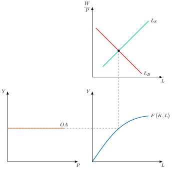
En este contexto, los neoclásicos asumen que el dinero es neutral, y existe dicotomía clásica: las variables reales, como el empleo, la producción o el salario real, se determinan sin intervención del dinero, que solo fija el nivel de precios y el salario monetario.
Política económica
Conclusiones de política económica:
Ineficacia de las políticas de demanda, ya que solo afectan a los precios vía aumentos en la oferta monetaria.
Eficacia de las políticas de oferta, ya que afecta a la capacidad productiva.
Laissez-faire, de manera que la política económica debe dirigirse a eliminar los obstáculos que impiden que se den los supuestos del modelo.
Modelo Keynesiano
Keynes interpreta el equilibrio neoclásico del mercado de trabajo como un “caso especial que no es típico en la sociedad en la que vivimos”. Es un caso especial que corresponde a una situación en la que la demanda es suficientemente elevada como para absorber toda la producción.
Así, la insuficiencia de demanda durante el periodo de la Gran Depresión llevaba a un nivel de desempleo involuntario masivo que no era el nivel de empleo compatible con el pleno empleo neoclásico.
Demanda de trabajo
Keynes mantiene los supuestos macroeconómicos de la función de producción y acepta la demanda de trabajo tal y como la postulan los clásicos. Se demanda trabajo hasta el punto en el que el salario nominal se iguala al valor de la productividad marginal del trabajo: \[VPMg_{L}=P\cdot PMg_{L}\] .
Oferta de trabajo
Respecto a la oferta de trabajo, para Keynes la demanda agregada determina la producción y, a través de la función de producción se obtiene el nivel de empleo (a través de la cruz keynesiana). Ese nivel de empleo estará remunerado a un salario real concreto, estando el salario nominal determinado a través de la negociación.
El trabajador de Keynes se guía por el salario nominal, que es sobre el que puede influir la negociación colectiva:
Este hecho es el que produce la llamada ilusión monetaria: los salarios que se exijan serán independientes del nivel de precios y, por tanto, del salario real. Por lo tanto, los trabajadores no siempre igualan el salario real a la desutilidad marginal del trabajo. De este modo, si caen los precios, caerá la cantidad vendida y por tanto la demanda de trabajo.
Además, ningún grupo de trabajadores aceptará una reducción de su salario nominal, aunque el salario real se mantuviera, porque empeoraría su posición frente a los demás grupos, que es lo que les importa. Así argumenta Keynes la existencia de salarios rígidos a la baja en el tiempo.
Por ende, existe un salario nominal rígido a la baja: existe un nivel mínimo de salario nominal al que se ofrece una cantidad de trabajo el cual no puede ser rebasado a la baja, de manera que la oferta de trabajo sería nula para niveles inferiores a ese salario nominal.
Equilibrio
Para Keynes la oferta no determina el empleo. En efecto, revertirá la causalidad, de tal forma que la DA es la que determina la producción y de ahí se obtiene el nivel de empleo a través de la cruz keynesiana. Por tanto, la economía se determina por el lado de la demanda.
Gráficamente como se observa en la Figura 2.12, en un contexto de depresión, el nivel de precios había caído, pero los salarios nominales se mantenían rígidos. Por tanto, una insuficiente demanda agregada había conducido a una caída en el nivel de producción y a una caída del valor de \(PMg_{L}\) que no se había visto compensada con la caída de salarios, provocando paro involuntario.
En esta situación
La estimulación de la demanda agregada hasta \(DA^{\prime}\) podría aumentar la producción, \(Y_{1}\), y el nivel de precios, \(P_{1}\).
Un aumento del precio de un bien aumenta el valor de la productividad marginal, y en consecuencia desplaza la demanda de trabajo hacia la derecha, \(L_{D_{1}}\).
En el nivel de salario nominal inicial se provoca una demanda excesiva de trabajo. Los salarios nominales suben menos que los precios, de modo que el salario real baja, y los trabajadores, que se guían por el salario nominal, aceptan trabajar más, lo que reduce el paro involuntario.
Así, la OA deja de ser vertical y tendría una pendiente positiva. Por consiguiente, variaciones en la DA influyen sobre el nivel de empleo contratado, por lo que el output viene determinado por la demanda, a través de la cual se podrá alcanzar el pleno empleo.
Además, cabe resaltar que el análisis keynesiano se hace en un contexto de corto plazo donde existen recursos ociosos, que permiten aumentar el nivel de producción hasta el deseado. Una vez agotada la oferta laboral disponible, \(\bar{L}\), todo aumento en la DA se traducirá en un aumento del nivel de precios –OA vertical respecto a la renta–.
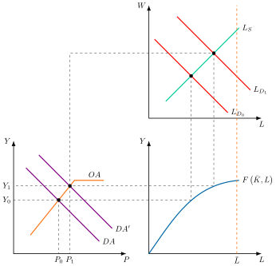
Política económica
Las conclusiones de política económica son:
Según Keynes, en una situación con recursos ociosos –que, según él, será lo más frecuente–, una política económica expansiva que estimule la demanda agregada podrá aumentar los niveles de empleo y de producción.
La ilusión monetaria de los trabajadores permitiría a las empresas aumentar los precios en mayor proporción que los salarios nominales –por lo que los salarios reales disminuirían–, y esto permitiría aumentar el empleo y la producción.
No se cumple la ley de Say:
La renta generada por la producción no llevará a un nivel de gasto tal que retire la totalidad de la producción lanzada al mercado.
No existen mecanismos auto-ajustadores que lleven al pleno empleo de los recursos, pudiendo existir desempleo involuntario como resultado de una escasez de demanda.
Consumo e inversión no determinados por las mismas variables –ahorro determinado por la renta disponible e inversión por los tipos de interés y los “animal spirits”–.
El dinero tiene una función de depósito de valor y de precaución con Keynes, por lo que sí tiene sentido atesorar dicho dinero. Aumenta por lo tanto la dificultad de que todo el ahorro sea retirado vía inversión105.
Síntesis Neoclásica
Por otro lado, utilizando el análisis de los clásicos y keynesianos, la síntesis neoclásica busca sintetizar en un único modelo que permita realizar un análisis en varios horizontes temporales y analizar diferentes situaciones en las que la producción se encuentre o por debajo o por encima del nivel de pleno empleo.
Esto lleva a los autores de la síntesis a determinar la curva de \(OA\) en tramos. Gráficamente, en un plano precios y producción como el de la Figura 2.13, habría que distinguir 3 fases:
Corto plazo, aportación keynesiana, con una OA plana por las rigideces de precios y plena eficacia de las políticas de DA.
Medio plazo con pendiente positiva, explicada a través de la curva de Phillips, que recoge el trade-off entre inflación y desempleo. \[\pi=f\left(u\right),\quad f^{'}\left(u\right)<0 \tag{2.38}\]
Largo plazo, la curva de OA es vertical sobre el nivel de producción potencial, \(\bar{Y}\), por lo que aumentos en la demanda solo provocan subidas de precios.
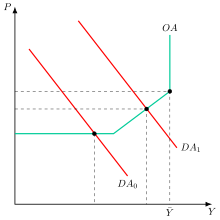
Enfoque Monetarista
Por otro lado, los monetaristas, siendo Milton Friedman su máximo exponente, van a criticar el uso que hace la síntesis neoclásica de la curva de Phillips:
La relación entre salarios nominales y desempleo no considera las expectativas de inflación y no tiene en cuenta que el equilibrio del mercado de trabajo se determina por los salarios reales.
La inflación es consecuencia de fallos de predicción y de la aplicación de políticas económicas discrecionales.
De esta manera Friedman critica estos postulados mediante
El concepto de tasa natural de desempleo/paro (TNP) como aquella tasa de desempleo asociada con el equilibrio del mercado en el mercado de trabajo y a la estructura de salarios reales resultantes.
La curva de Phillips ampliada con expectativas, expresada como inflación esperada más la diferencia entre la tasa natural de paro y la tasa de paro. \[\pi=\pi^{e}+\alpha\cdot\left(u_{n}-u\right)\]
La Hipótesis de Expectativas Adaptativas (HEA) permite explicar los fallos de la curva de Phillips.
Así, gráficamente en un plano de precios y renta como el de la Figura 2.14, se representa la DA y la OA con pendiente positiva106 en cuya intersección se da el equilibrio, \(E_{0}\), para un nivel de renta y precios asociados.
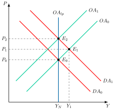
El proceso será el siguiente:
Un aumento de la demanda agregada, \(DA_{1}\), aumentará la renta y los precios, en un nuevo equilibrio \(E_{1}\). Al incrementarse los precios, dadas las expectativas de inflación, si los salarios nominales no varían el salario real estaría disminuyendo, por lo que las empresas aumentarían su demanda de trabajo lo que provocará un incremento salarial.
Con una inflación esperada inicial, los trabajadores interpretarán el incremento salarial nominal como aumentos del salario real, ofreciendo más trabajo. Sin embargo, a medida que los trabajadores perciban que sus salarios reales no han aumentado adaptarán sus expectativas de inflación y demandarán mayores incrementos en los salarios nominales para incorporar la mayor inflación esperada. Al aumentar los salarios se contraerá la oferta agregada, \(OA_{1}\), las empresas reducirán su demanda de trabajo, y el desempleo aumenta hasta el punto inicial, \(E_{2}\).
En este punto \(E_{2}\), la economía se encuentra en la tasa natural de paro asociado a la producción natural, \(Y_{N}\), pero la tasa de inflación es superior a la que existía inicialmente. A largo plazo, a medida que los trabajadores aprendan de sus errores, la oferta agregada será vertical, \(OA_{lp}\), en el nivel de paro correspondiente a la tasa natural de paro.
Política económica
Respecto a las políticas económicas, cabe destacar que Friedman considera:
El consumo como función de la renta permanente y, por tanto, poco dependiente de la renta disponible y la inversión muy estable, por lo que la IS será una función muy elástica.
La teoría de la demanda de dinero Friedman implica que la demanda de dinero es una función estable de la renta permanente y que la velocidad de circulación es también una función estable que depende del tipo de interés y de la inflación esperada, por lo que la LM tendrá una pendiente muy elevada.
Así:
El enfoque monetarista implicaría que, a corto plazo, la política monetaria sería más eficaz para estimular la demanda agregada, pero Friedman no aconseja un uso discrecional de la política monetaria como instrumento de política económica, dado los retrasos e incertidumbres en su implementación.
Se cumple la tesis aceleracionista: las políticas expansivas de demanda agregada solo podrían aumentar el nivel de producción a corto plazo, pero a largo plazo su efecto sería aumentar la inflación.
las políticas de oferta vuelven a cobrar protagonismo al erigirse como las únicas capaces de reducir el nivel de desempleo a largo plazo –mejora de las asimetrías informativas en el mercado de trabajo, incentivo a la innovación y tecnología, formación, fiscalidad sobre el trabajo, etc.–.
Nueva Macroeconomía Clásica
La Nueva Macroeconomía Clásica introduce la hipótesis de expectativas racionales (HER) y critica la HEA de Friedman porque permite al Gobierno “engañar” sistemáticamente a los agentes económicos a corto plazo.
Bajo HER, los agentes ya no cometen errores sistemáticos porque utilizan eficientemente toda la información de la que disponen. Por lo tanto, el valor esperado de las variables económicas se halla mediante la esperanza de las variables condicionada a toda la información disponible en el momento de formular las expectativas, \(\varOmega_{t-1}\), utilizando eficientemente dicha información \[P^{e}_{t}=\mathbb{E}\left(P_{t}|\varOmega_{t-1}\right) \tag{2.39}\] Por lo tanto, el valor de la variable en el momento \(t\) será igual al valor esperado de la variable más un término de error o ruido blanco
\[P_{t}=P^{e}_{t}+\varepsilon_{t} \tag{2.40}\]
Así, Robert Lucas fue el primero en incorporar a un modelo macroeconómico la HER, que John Muth (1961) había propuesto para un mercado concreto. Al combinarla con la teoría de la tasa natural de paro concluyó que los errores de previsión solo pueden ser aleatorios, lo que dio origen a la NMC.
Bajo estos supuestos, se obtiene la curva de oferta de Lucas que está formada por el nivel natural de producción asociado a una tasa natural de desempleo, \(y_{N}\), la desviación del nivel de precios respecto al esperado –es decir, en respuesta a errores en las expectativas de inflación– y el parámetro \(\beta\) depende de la variabilidad relativa de las perturbaciones generales y de las perturbaciones específicas a un único mercado \[y_{t}=y_{N_{t}}+\beta\cdot\left(P_{t}-P^{e}_{t}\right) \tag{2.41}\]
es decir, la curva de oferta de Lucas que muestra que la producción agregada solo se desviará de su nivel natural a corto plazo a causa de incrementos no anticipados del nivel de precios.
Además, considerando la ley de Okun según la cual existe una relación estable y negativa entre desempleo y PIB, la curva de oferta agregada de Lucas se puede interpretar como una representación alternativa de la curva de Phillips aumentada con expectativas, por lo que reorganizando la expresión: \[u_{t}=u_{N_{t}}-\dfrac{1}{\alpha}\cdot\left(\pi_{t}-\pi^{e}_{t}\right),\quad\alpha>0 \tag{2.42}\]
Política económica
Dado que en la NMC las políticas de demanda anticipadas no serían eficaces ni a corto plazo –al contrario de lo que postulaban los monetaristas–, las políticas eficaces para reducir el desempleo serán las de oferta que logren disminuir la tasa natural de paro –de la misma forma que postulaban los monetaristas–
Nueva Economía Keynesiana
Resumen de las diferentes escuelas sobre la oferta agregada
El entendimiento de la oferta agregada (OA) ha evolucionado de forma dramática, con cada escuela de pensamiento criticando y construyendo sobre la anterior. Esta es una transición cronológica de su entendimiento:
1.Clásicos (Principios del siglo XX)
La visión clásica de la OA era simple y contundente: la curva de oferta agregada a largo plazo (OAL) es vertical. Su razonamiento se basaba en dos pilares:
Precios y salarios perfectamente flexibles: Creían que cualquier desequilibrio en el mercado laboral se corregiría rápidamente con ajustes de salarios y precios.
Pleno empleo: la economía siempre tiende a producir en su máximo potencial.
En su visión, la política de demanda (como el gasto público) solo podía afectar los precios, no la producción.
2. Keynesianos (Década de 1930)
John Maynard Keynes desafió a los clásicos durante la Gran Depresión. Al observar el desempleo masivo, argumentó que los precios y salarios no eran flexibles, sino rígidos. Esto dio lugar a un entendimiento radicalmente diferente de la OA:
OA a corto plazo horizontal: en una depresión, con capacidad productiva ociosa y desempleo, un aumento de la demanda agregada podía ser satisfecho con más producción sin que los precios se elevaran.
Crítica a la flexibilidad: Keynes argumentó que los salarios nominales eran rígidos a la baja, lo que impedía que el mercado laboral se ajustara y volviera al pleno empleo por sí solo.
3. Síntesis Neoclásica (Décadas de 1940-1960)
Esta escuela de pensamiento, liderada por economistas como Paul Samuelson y John Hicks, trató de reconciliar las visiones clásica y keynesiana. Crearon el modelo que todavía se enseña en muchos cursos introductorios de Macroeconomía:
OA a corto plazo plana o poco inclinada, y creciente a medio plazo: debido a la rigidez de precios y salarios, un aumento de la demanda agregada eleva sobre todo la producción y poco los precios.
OA a largo plazo (OAL) vertical: A largo plazo, se asume que los precios y salarios se ajustan completamente, y la economía vuelve a su nivel de pleno empleo.
Esta síntesis se convirtió en el modelo estándar para analizar la disyuntiva entre inflación y desempleo a corto plazo.
4. Monetaristas (Década de 1970)
Los monetaristas, con Milton Friedman a la cabeza, criticaron la síntesis neoclásica, argumentando que la disyuntiva entre inflación y desempleo era solo temporal.
OA vertical a largo plazo: Reafirmaron la idea clásica de que la OAL es vertical y está determinada por la tasa natural de desempleo.
Rechazo del trade-off a largo plazo: Friedman argumentó que los agentes económicos adaptan sus expectativas de inflación. Si el gobierno intenta reducir el desempleo por debajo de su tasa natural, solo conseguirá un aumento de la inflación a largo plazo, sin un cambio permanente en la producción.
5. Nueva Macroeconomía Clásica (NMC) (Décadas de 1970-1980)
La NMC, con figuras como Robert Lucas, fue una crítica aún más radical a la síntesis neoclásica. Aceptaron la idea de Friedman sobre la tasa natural de desempleo, pero llevaron los supuestos aún más lejos:
OA vertical incluso a corto plazo: Argumentaron que si los agentes económicos tienen expectativas racionales, anticipan los cambios de política y ajustan sus precios y salarios de inmediato.
Política ineficaz: Bajo este supuesto, la política de demanda solo podía afectar la producción si era inesperada. La política sistemática era ineficaz, ya que los agentes la anticipaban y ajustaban sus precios.
6. Nueva Economía Keynesiana (NEK) (Desde 1980)
La NEK surgió como una respuesta a la NMC, aceptando el concepto de expectativas racionales pero defendiendo la existencia de una oferta agregada (OA) ascendente. Para ello, se dividió en dos generaciones:
Primera Generación: se centró en proporcionar los fundamentos microeconómicos de la rigidez de precios y salarios. Los economistas de esta generación, como Mankiw y Akerlof, argumentaron que los “costes de menú” (el coste de cambiar los precios) o los “contratos escalonados” hacen que los precios no se ajusten de inmediato. Así justificaron por qué la política monetaria y fiscal puede influir en la producción a corto plazo, defendiendo la necesidad de una intervención activa del gobierno.
Segunda Generación: Construyó modelos más sofisticados y dinámicos (conocidos como modelos DSGE), que incorporan expectativas racionales y se centran en la optimización del comportamiento de los agentes. Estos son los modelos de Macroeconomía moderna más complejos.
Como forma de entender la dinámica de la Oferta y la demanda agregada (DA-OA) bajo este enfoque, se utiliza a menudo el modelo de Carlin y Soskice. Este modelo de tres ecuaciones (IS-PC-MR) sirve como un puente entre ambas generaciones y ofrece una visión moderna y dinámica de cómo la economía se ajusta, con la curva de Phillips funcionando como el lado de la oferta agregada del modelo. Esto permite analizar la Macroeconomía de forma más completa sin recurrir a la rigidez simple de los modelos más antiguos.
2.A.9. Modelo de 3 ecuaciones de Carlin y Soskice
El modelo de tres ecuaciones de Carlin y Soskice es una versión sencilla y gráfica del modelo neokeynesiano que usan los bancos centrales. Las decisiones microfundamentadas de los agentes incorporan rigideces en salarios y precios para reflejar imperfecciones en los mercados de trabajo y bienes, de forma que explique la no dicotomía clásica en el corto plazo.
Se trata de un modelo con tres ecuaciones:
IS, determina el comportamiento por parte de la demanda.
CP, curva de Phillips, determina el comportamiento de las empresas fijadoras de precios.
RM, regla monetaria, determina el comportamiento óptimo de la autoridad monetaria.
La estructura del modelo es microfundamentada107:
El comportamiento de los agentes depende de parámetros profundos –deep parameters– los cuales surgen de elementos invariantes que rigen sobre las decisiones de los individuos, como son las preferencias y la tecnología.
Los policy makers toman decisiones en base a reglas para dotar de consistencia al modelo en el tiempo.
Los consumidores y los productores tendrán una actitud backward looking mientras que la del banco central y la de los mercados financieros será forward looking.
Supuestos
Los supuestos del modelo son los siguientes:
La política monetaria es efectiva a corto y medio plazo, y la autoridad monetaria es independiente.
Existen retardos en la política, pero el banco central puede controlar el tipo de interés real a corto plazo, ya que tiene una estimación perfecta de la inflación esperada108.
Los hogares y las empresas forman sus expectativas de inflación mirando al pasado, lo que da inercia a la inflación, mientras que el banco central se anticipa a la evolución de la economía.
Existen rigideces en salarios y precios, que están indexados a la inflación pasada, generando inercia.
El comportamiento del modelo se basa en “deep parameters” (por ejemplo preferencias y tecnología), haciéndolo resistente a la crítica de Lucas.
Los responsables de la política monetaria actúan mediante reglas, evitando la inconsistencia dinámica.
Hay una asimetría clave: el banco central sigue una actitud forward looking y los agentes backward looking
Las 3 ecuaciones
La dinámica del modelo se basa en la interacción de tres curvas como se observa en la Figura 2.15 en los dos planos:
La curva IS dinámica, en un plano de \(r_{t-1}\) y renta, determina el comportamiento de la demanda y depende de los tipos de interés fijados en el periodo anterior109 \[Y_{t}=A-a_{0}\cdot r_{t-1} \tag{2.43}\] donde \(a_{0}\) es la sensibilidad de la demanda al tipo de interés, y el tipo de interés de equilibrio es el natural, \(r_{e}\).
La curva de Phillips, \(CP\), en el plano adyacente de inflación y renta, representa el lado de la oferta en el modelo donde la inflación en el periodo \(t\) depende de la inflación pasada y del output gap, \(Y_{t}-Y_{e}\), (como se ha visto en la ley de Okun): \[\pi_{t}=\pi_{t-1}+\alpha\cdot\left(Y_{t}-Y_{e}\right) \tag{2.44}\] y se deriva de la intersección de otras dos curvas: la curva de fijación de salarios y la curva de fijación de precios, del modelo de Layard y Nickell, dando lugar a la NAIRU.
Además, el punto \(Y_{e}\) está vinculado con la curva de Phillips de largo plazo donde se hace nulo el desvío respecto al producto de equilibrio (curva vertical).La regla monetaria, \(RM\), que representa el comportamiento del banco central, donde escoge el tipo de interés en función del trade-off inflación-empleo. Así, \(\beta\)110 es el parámetro de aversión del banco central a la inflación y \(\pi^{T}\) es el objetivo de inflación: \[\left(Y_{t}-Y_{e}\right)=-\beta\cdot\alpha\cdot\left(\pi_{t}-\pi^{T}\right) \tag{2.45}\] por lo que la expresión se deriva del programa de minimización de una función de pérdida por parte del banco central sujeto a la restricción de la curva de Phillips.
Además, la existencia de retardos (internos y externos) hace que la decisión del banco central (tipo de interés en \(t=0\)) afecte al producto en el periodo siguiente (\(t=1\)), dado que se requiere tiempo para que los cambios en los tipos modifiquen las decisiones de gasto111.
Así, la economía tiene un nivel de inflación constante, coincidente con el objetivo de política monetaria, que se supone del \(2\%\), es decir, \(\pi^{T}=2\%\).
La dinámica del modelo se basa en la interacción de tres curvas.
Curva IS
Representa los equilibrios en el mercado de bienes para cada nivel de tasa de interés (real) que iguala la demanda y oferta global de bienes y servicios.
La demanda en el periodo \(t\) va a depender de un componente autónomo y de los tipos de interés del periodo anterior de forma negativa. \[Y_{t}=A-a_{0}\cdot r_{t-1}\]
Así:
\(r_{t-1}\) presenta un retardo de un periodo (un periodo representa un año). Cuanto mayor sea el tipo de interés mayor es el coste de oportunidad del consumo y menor será el mismo
Por ende se trata de una IS dinámica donde el ingreso responde a variaciones del tipo de interés con un periodo de retraso –las decisiones del BC en \(t=0\) afectan al producto en \(t=1\)–.
En equilibrio el tipo de interés será el de Wicksell (tipo de interés natural o el que corresponde a una situación en la que el output gap es igual a cero) que se denomina \(r_{e}\).
\(a_{0}\) es la sensibilidad de la demanda al tipo de interés. Va a determinar la pendiente de la curva, lo que a su vez afectará a los efectos de la política monetaria sobre el equilibrio de la economía. Cuanto mayor sea la sensibilidad de la demanda al tipo de interés, mayor será el efecto estabilizador de la variación de los tipos de interés y por tanto menor será la necesidad de ajuste por parte del banco central.
Curva de Phillips
Representa el lado de la oferta del modelo.
La inflación en el periodo t depende de la inflación pasada y el output gap, es decir, se aplica la ley de Okun112 \[\pi_{t}=\pi_{t-1}+\alpha\cdot\left(Y_{t}-Y_{e}\right)\]
Se considerará que los salarios y la fijación de precios por parte de las empresas están indexados con la inflación del periodo anterior con lo que existirá inercia \(\pi_{t}=\pi_{t-1}\). Se justifica en la indexación de precios y salarios a la inflación pasada y en unas expectativas que miran al pasado.
La misma se deriva de la intersección de otras dos curvas: la curva de fijación de salarios y la curva de fijación de precios, del modelo de Layard y Nickell (de determinación de salarios y empleo en una economía con empresas con poder de mercado y trabajadores con poder de negociación al estar reunidos en un sindicato).
Este modelo va a dar lugar a lo que se conoce como la NAIRU (tasa de desempleo no aceleradora de la inflación). En la medida en que las empresas (como ocurre en algunos modelos de la NEK) no puedan variar los precios de sus productos de manera automática, se derivarán efectos en el nivel de empleo y por consiguiente de producción ante cambios en la demanda.
Regla de política monetaria
En tercer lugar, se considera una regla de política monetaria (que se puede establecer sobre el tipo de interés o sobre la inflación) que describa el comportamiento de la autoridad monetaria, es decir la decisión óptima de tipo de interés nominal que escoge el banco central dado el trade-off entre inflación-empleo (solo podrá elegir entre combinaciones posibles establecidas en la CPh).
La regla de política monetaria se deriva del siguiente programa de minimización (de una función de pérdida) condicionada: \[\min\quad\mathcal{L}=\left(Y_{t}-Y_{e}\right)^{2}+\beta\cdot\left(\pi_{t}-\pi^{T}\right)^{2}\] sujeto a la curva de Phillips
\[\pi_{t}=\pi_{t-1}+\alpha\cdot\left(Y_{t}-Y_{e}\right)\] donde:
Se considera que los costes de los desvíos (inflación y desempleo son males) son cuadráticos.
Target de inflación, \(\pi^{T}\), la inflación se determina de forma indirecta eligiendo la autoridad monetaria de forma directa el nivel de renta.
Parámetro \(\beta\) de aversión del banco central a la inflación, es decir, cómo pondera el BC ambos objetivos.
Un banco central muy averso a la inflación se caracteriza por una mayor \(\beta\).
\(\beta\) determinará la forma de las curvas de indiferencia del banco central.
La existencia de retardos (internos y externos) hace que la decisión del banco central (tipo de interés en \(t=0\)) afecte al producto en el periodo siguiente (\(t=1\)), dado que se requiere tiempo para que los cambios en los tipos modifiquen las decisiones de gasto
En el corto plazo, la tasa de inflación está dada (gracias a programas de estimación econométrica de los bancos centrales que permiten estimar la inflación esperada a corto plazo). Por ello, la autoridad monetaria puede determinar de forma directa el tipo de interés real a corto plazo por la ecuación de Fisher (\(i\approx r+\pi^{e}\)) a través de la modificación de los tipos de interés nominales (\(i_{0}\)).
Así, en el periodo \(t-1\), el banco central conoce \(\pi_{t-1}\) lo que le permitirá interactuar con la curva de Phillips pudiendo determinar cuál es el nivel de \(Y_{t}\) que minimiza la función de pérdida. Una vez determinado el nivel de renta óptimo, teniendo en cuenta la ecuación IS, podrá fijar el tipo de interés \(r_{t-1}\) que resuelva este problema.
Del programa de optimización se puede despejar la regla monetaria, RM (derivando respecto a \(Y_{t}\) e igualando a 0):\(Y_{t}-Y_{e}=-\alpha\cdot\beta\cdot\left(\pi_{t}-\pi^{T}\right)\), y del de tipo de interés (sustituyendo PC en MR e introduciendo en la ecuación resultante la curva IS en términos de output gap (es decir, la IS en vez de con \(Y_{t}\) con \(Y_{e}\), donde el tipo de interés sería \(r_{e}\))): \[r_{t-1}=r_{e}+\dfrac{1}{a_{0}\cdot\left(\alpha+\dfrac{1}{\alpha\cdot\beta}\right)}\cdot\left(\pi_{t-1}-\pi^{T}\right)\]
Si se supone que \(\alpha=\beta=a_{0}=1\) entonces \[r_{t-1}=r_{e}+\dfrac{1}{2}\cdot\left(\pi_{t-1}-\pi^{T}\right)\] es la denominada Regla de Taylor óptima. Implica que por cada punto de desviación de la inflación, la autoridad monetaria deberá incrementar en 0,5 puntos el tipo de interés para minimizar la función de pérdida.
Modelo completo
El modelo completo: Se pueden integrar las tres ecuaciones en un diagrama con dos gráficos superpuestos: el diagrama superior muestra la curva IS en los ejes renta (abscisas) y tipo de interés real (ordenadas)113.
En el segundo diagrama se representan:
La curva de Phillips aumentada por expectativas de inflación.
La curva MR-DA con pendiente negativa en el espacio renta inflación. Es la relación de equilibrio entre el nivel de producto (escogido directamente por el banco central a través de su decisión del tipo de interés) y el nivel de inflación (escogido indirectamente) para minimizar su función de pérdida dadas sus preferencias y la restricción del banco central (la predicción de la curva de Phillips)114. Informa al banco central en \(t=0\) del nivel de producto que debe alcanzar en \(t=1\) para minimizar la función de pérdidas dada su predicción de la curva de Phillips.
El punto \(Y_{e}\) representa el equilibrio estructural de la economía al cual le corresponde un nivel de tipos de interés \(r_{e}\) (tipo de interés de Wicksell). Se corresponde con la situación en la que tanto las empresas (con poder de fijación de precios) como los trabajadores (con poder de negociación derivado de la existencia de sindicatos) mantienen sus demandas constantes y no se produce una aceleración de la inflación (modelo de Layard y Nickell, 1991). Además, este punto está vinculado con la curva de Phillips de largo plazo donde se hace nulo el desvío respecto al producto de equilibrio (curva vertical).
La economía tiene un nivel de inflación constante, coincidente con el objetivo de política monetaria (\(\pi^{T}=2\%\)).
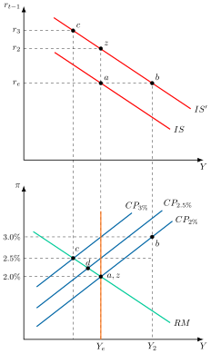
Análisis de las políticas económicas
Dinámica del modelo
Se analiza la dinámica del modelo con un aumento del gasto público115:
La curva IS se desplaza hacia la derecha, por lo que para la misma tasa de interés, la demanda agregada es mayor, elevando la renta de equilibrio a \(Y_{2}\).
La tensión que se provocará en el mercado de trabajo por la caída en el desempleo provocará una elevación en los salarios y en los precios. Los trabajadores solicitarán un 2 % de aumento salarial para compensar la inflación perdida, más un adicional debido a la disminución del desempleo, y se supone que este output gap representa un 1 % adicional.
En consecuencia, los salarios aumentarán un 3 % y las empresas, para proteger sus márgenes de beneficio, elevarán los precios un 3 %.
El aumento en la inflación implica moverse a lo largo de la curva \(CP_{2\%}\) original del punto \(a\) al \(b\). Este aumento quedará incorporado en las próximas predicciones de precios, por lo cual la curva \(CP_{2\%}\) se moverá a \(CP_{3\%}\), consistente con una inflación esperada del \(3\%\).
Si el banco central no hiciera nada, el producto se ubicaría por encima del nivel de equilibrio en \(Y_{2}\), lo cual haría que la tasa de inflación se ubique en el 3 % por encima del nivel objetivo del 2 %:
Si el objetivo del banco central es equilibrado, en el sentido de tratar de hacer retroceder la inflación sin provocar una recesión muy brusca, pretendería retroceder al punto \(c\).
De tal forma que elegiría la tasa de interés \(r_{3}\) correspondiente a ese punto. Esto haría disminuir la demanda agregada. Se ubicaría en la intersección de la función \(RM\) con la curva de Phillips para una inflación esperada del 3 %, \(CP_{3\%}\).
Esto daría como resultado una inflación del 2,5 %, y esto reduciría la predicción inflacionaria para el periodo siguiente, haciendo descender la curva \(PC\) a la nueva posición intermedia del 2,5 %, \(CP_{2{,}5\%}\).
En esa situación, el banco central elegirá la posición indicada por el punto \(d\), y en sucesivos periodos irá ajustando la meta hasta llegar nuevamente a la posición indicada por la curva \(CP_{2\%}\).
El proceso de ajuste proseguirá hasta llegar al punto \(z\), que es el mismo que el \(a\). El sistema se equilibrará con una tasa de interés más alta y la inversión se reducirá para compensar el aumento en el consumo, sea éste privado o público.
Implicaciones de política económica
Las implicaciones de política económica que pueden extraerse son:
La política monetaria afecta principalmente, o casi exclusivamente, a los precios en el medio plazo.
La política monetaria afecta al nivel de actividad solo en el corto plazo.
El futuro es incierto, como consecuencia del impacto de cambios de política en la economía.
Las expectativas importan, por lo que dar a la gente una cierta idea de lo que se hará, y actuar consistentemente con ello, es útil.
Un grado adecuado de independencia operativa del banco central respecto del gobierno y en orden a la política monetaria es importante.
2.A.10. Derivación del modelo neokeynesiano de tres ecuaciones y de su forma reducida
Se derivan las tres ecuaciones del cuerpo siguiendo a Galí (2015, cap. 3), desde las decisiones de los hogares y de las empresas. Las letras minúsculas denotan logaritmos de las variables en mayúscula, y el output gap se escribe \(x_{t}\), como en el cuerpo, en lugar de \(\tilde{y}_{t}\).
Los hogares y la IS dinámica
Un hogar representativo, de vida infinita, maximiza \(E_{0}\sum^{\infty}_{t=0}\beta^{t}\cdot U\left(C_{t},N_{t};Z_{t}\right)\), donde \(E_{0}\) es el operador de expectativas, \(\beta\) el factor de descuento, \(C_{t}\) el índice de consumo, \(N_{t}\) el empleo y \(Z_{t}\) una perturbación de preferencias. La utilidad es: \[U\left(C_{t},N_{t};Z_{t}\right)=\left(\dfrac{C^{1-\sigma}_{t}-1}{1-\sigma}-\dfrac{N^{1+\varphi}_{t}}{1+\varphi}\right)\cdot Z_{t}\] donde \(\sigma\) es la inversa de la elasticidad de sustitución intertemporal y \(\varphi\) la inversa de la elasticidad de Frisch de la oferta de trabajo. El logaritmo de la perturbación, \(z_{t}\equiv\log Z_{t}\), sigue un proceso autorregresivo de primer orden de persistencia \(\rho_{z}\in\left[0,1\right)\).
El hogar consume bienes diferenciados indexados por \(i\in\left[0,1\right]\), con precio \(P_{t}\left(i\right)\), y su restricción presupuestaria es: \[\int^{1}_{0}P_{t}\left(i\right)\cdot C_{t}\left(i\right)di+Q_{t}\cdot B_{t}\leq B_{t-1}+W_{t}\cdot N_{t}+D_{t}\] donde \(Q_{t}\) es el precio del bono a un periodo, \(B_{t}\) las compras de bonos, \(W_{t}\) el salario nominal y \(D_{t}\) los dividendos. La mejor distribución del gasto entre los bienes da la demanda de cada uno: \[C_{t}\left(i\right)=\left(\dfrac{P_{t}\left(i\right)}{P_{t}}\right)^{-\epsilon}\cdot C_{t}\] con \(\epsilon\) la elasticidad de sustitución entre bienes y \(P_{t}\) el índice de precios, de modo que el gasto total es \(P_{t}\cdot C_{t}\) y las decisiones de consumo y de oferta de trabajo son las de una economía con un solo bien.116
Las condiciones de optimalidad son: \[\begin{align*} -\dfrac{U_{n,t}}{U_{c,t}} & =\dfrac{W_{t}}{P_{t}}\\ Q_{t} & =\beta\cdot E_{t}\left\{ \dfrac{U_{c,t+1}}{U_{c,t}}\cdot\dfrac{P_{t}}{P_{t+1}}\right\} \end{align*}\] donde \(U_{c,t}\) y \(U_{n,t}\) son las utilidades marginales del consumo y del empleo. Log-linealizadas quedan: \[\begin{align*} w_{t}-p_{t} & =\sigma\cdot c_{t}+\varphi\cdot n_{t}\\ c_{t} & =E_{t}\left\{ c_{t+1}\right\} -\dfrac{1}{\sigma}\cdot\left(i_{t}-E_{t}\left\{ \pi_{t+1}\right\} -\rho\right)+\dfrac{1}{\sigma}\cdot\left(1-\rho_{z}\right)\cdot z_{t} \end{align*}\] donde \(i_{t}\equiv-\log Q_{t}\) es el tipo de interés nominal, \(\rho\equiv-\log\beta\) la tasa de descuento y \(\pi_{t}\) la inflación. La primera ecuación es la oferta de trabajo y la segunda la ecuación de Euler del consumo.117
Como el consumo es la única fuente de demanda, la producción cumple \(Y_{t}=C_{t}\). Sustituyendo en la ecuación de Euler, la producción depende de su valor esperado, del tipo de interés real y de la perturbación de preferencias: \[y_{t}=E_{t}\left\{ y_{t+1}\right\} -\dfrac{1}{\sigma}\cdot\left(i_{t}-E_{t}\left\{ \pi_{t+1}\right\} -\rho\right)+\dfrac{1}{\sigma}\cdot\left(1-\rho_{z}\right)\cdot z_{t}\] Es el punto de partida de la IS dinámica, que se expresa en términos del output gap más adelante.118
Las empresas y la curva de Phillips neokeynesiana
Cada empresa produce un bien diferenciado con la tecnología: \[Y_{t}\left(i\right)=A_{t}\cdot N_{t}\left(i\right)^{1-\alpha}\] donde \(A_{t}\) es el nivel de tecnología, común a todas las empresas, con \(a_{t}\equiv\log A_{t}\) autorregresivo de persistencia \(\rho_{a}\), y \(\alpha\) el parámetro de rendimientos decrecientes del trabajo. Como en Calvo (1983), cada empresa puede reajustar su precio solo con probabilidad \(1-\theta\) en cada periodo, con independencia del tiempo transcurrido desde el último ajuste, de modo que la duración media de un precio es \(1/\left(1-\theta\right)\).119 Log-linealizando el índice de precios, la inflación depende del precio fijado por las empresas que reajustan: \[\pi_{t}=\left(1-\theta\right)\cdot\left(p^{*}_{t}-p_{t-1}\right)\] donde \(p^{*}_{t}\) es el logaritmo de ese precio, común a todas ellas.120
Una empresa que reajusta en \(t\) elige el precio \(P^{*}_{t}\) que maximiza el valor actual de sus beneficios mientras ese precio siga vigente, sujeta a la demanda de su bien. La condición de primer orden es: \[\sum^{\infty}_{k=0}\theta^{k}\cdot E_{t}\left\{ \Lambda_{t,t+k}\cdot Y_{t+k|t}\cdot\dfrac{1}{P_{t+k}}\cdot\left(P^{*}_{t}-\mathcal{M}\cdot\Psi_{t+k|t}\right)\right\} =0\] donde \(\Lambda_{t,t+k}\equiv\beta^{k}\cdot U_{c,t+k}/U_{c,t}\) es el factor de descuento estocástico, \(Y_{t+k|t}\) la producción en \(t+k\) de la empresa que reajustó en \(t\), \(\Psi_{t+k|t}\) su coste marginal nominal y \(\mathcal{M}\equiv\epsilon/\left(\epsilon-1\right)\) el margen deseado. Sin rigidez, \(\theta=0\), se reduce a \(P^{*}_{t}=\mathcal{M}\cdot\Psi_{t|t}\). Log-linealizada alrededor del estado estacionario sin inflación, queda: \[p^{*}_{t}=\mu+\left(1-\beta\cdot\theta\right)\cdot\sum^{\infty}_{k=0}\left(\beta\cdot\theta\right)^{k}\cdot E_{t}\left\{ \psi_{t+k|t}\right\}\] con \(\mu\equiv\log\mathcal{M}\) y \(\psi_{t+k|t}\) el logaritmo del coste marginal. Las empresas fijan así, de forma prospectiva, un precio igual al margen deseado sobre una media ponderada de sus costes marginales presentes y esperados.121
El coste marginal depende de la producción de cada empresa. Agregando el empleo, y dado que la dispersión de precios es nula en primer orden, el empleo agregado es: \[n_{t}=\dfrac{1}{1-\alpha}\cdot\left(y_{t}-a_{t}\right)\] Con esta relación y la demanda de cada bien, el coste marginal de la empresa que reajustó en \(t\) se expresa en función del coste marginal medio, \(\psi_{t}\): \[\psi_{t+k|t}=\psi_{t+k}-\dfrac{\alpha\cdot\epsilon}{1-\alpha}\cdot\left(p^{*}_{t}-p_{t+k}\right)\] Sustituyendo en la condición anterior, y llamando margen medio a \(\mu_{t}\equiv p_{t}-\psi_{t}\), su desviación respecto al deseado es \(\hat{\mu}_{t}\equiv\mu_{t}-\mu\). Con \(\Theta\equiv\dfrac{1-\alpha}{1-\alpha+\alpha\cdot\epsilon}\), el precio óptimo cumple la ecuación recursiva: \[p^{*}_{t}=\beta\cdot\theta\cdot E_{t}\left\{ p^{*}_{t+1}\right\} +\left(1-\beta\cdot\theta\right)\cdot\left(p_{t}-\Theta\cdot\hat{\mu}_{t}\right)\] Combinándola con la dinámica de precios se obtiene la ecuación de la inflación: \[\pi_{t}=\beta\cdot E_{t}\left\{ \pi_{t+1}\right\} -\lambda\cdot\hat{\mu}_{t}\] con \(\lambda\equiv\dfrac{\left(1-\theta\right)\cdot\left(1-\beta\cdot\theta\right)}{\theta}\cdot\Theta\), decreciente en la rigidez \(\theta\). La inflación es positiva cuando las empresas esperan márgenes medios por debajo del deseado.122
Falta relacionar el margen con la producción. Con la condición de oferta de trabajo del hogar y la relación entre empleo y producción, el margen medio es: \[\mu_{t}=-\left(\sigma+\dfrac{\varphi+\alpha}{1-\alpha}\right)\cdot y_{t}+\dfrac{1+\varphi}{1-\alpha}\cdot a_{t}+\log\left(1-\alpha\right)\] Con precios flexibles el margen medio coincide con el deseado, \(\mu\), y la producción es la natural, \(y^{n}_{t}\), que depende de la tecnología: \[y^{n}_{t}=\psi_{ya}\cdot a_{t}+\psi_{y},\quad\psi_{ya}\equiv\dfrac{1+\varphi}{\sigma\cdot\left(1-\alpha\right)+\varphi+\alpha}\] donde \(\psi_{y}\) es una constante. Restando ambas expresiones, la desviación del margen es proporcional al output gap, \(x_{t}\equiv y_{t}-y^{n}_{t}\): \[\hat{\mu}_{t}=-\left(\sigma+\dfrac{\varphi+\alpha}{1-\alpha}\right)\cdot x_{t}\] Sustituyendo en la ecuación de la inflación se obtiene la curva de Phillips neokeynesiana: \[\pi_{t}=\beta\cdot E_{t}\left\{ \pi_{t+1}\right\} +\kappa\cdot x_{t},\quad\kappa\equiv\lambda\cdot\left(\sigma+\dfrac{\varphi+\alpha}{1-\alpha}\right)\] Clarida, Galí y Gertler (1999) añaden a esta ecuación la perturbación de costes, \(u_{t}\), y es la que se emplea en el cuerpo: \[\pi_{t}=\beta\cdot E_{t}\left\{ \pi_{t+1}\right\} +\kappa\cdot x_{t}+u_{t}\] Sin esa perturbación, es la curva de Phillips neokeynesiana básica.123
La IS en términos del output gap y el tipo de interés natural
Restando de la ecuación de la producción su versión con precios flexibles se obtiene la IS dinámica en términos del output gap: \[x_{t}=E_{t}\left\{ x_{t+1}\right\} -\dfrac{1}{\sigma}\cdot\left(i_{t}-E_{t}\left\{ \pi_{t+1}\right\} -r^{n}_{t}\right)\] donde \(r^{n}_{t}\) es el tipo de interés real natural, el que prevalecería con precios flexibles, que con los procesos supuestos vale: \[r^{n}_{t}=\rho-\sigma\cdot\left(1-\rho_{a}\right)\cdot\psi_{ya}\cdot a_{t}+\left(1-\rho_{z}\right)\cdot z_{t}\] Una perturbación tecnológica o de preferencias desplaza la IS al modificar el tipo natural. Si los efectos de las rigideces se desvanecen, \(\lim_{T\to\infty}E_{t}\left\{ x_{t+T}\right\} =0\), la IS resuelta hacia delante es: \[x_{t}=-\dfrac{1}{\sigma}\cdot\sum^{\infty}_{k=0}E_{t}\left\{ r_{t+k}-r^{n}_{t+k}\right\}\] con \(r_{t}\equiv i_{t}-E_{t}\left\{ \pi_{t+1}\right\}\) el tipo de interés real. El output gap es inversamente proporcional a la suma de las desviaciones presentes y esperadas entre el tipo real y el natural.124
Si se incluye el gasto público como perturbación de demanda, como en Clarida, Galí y Gertler (1999), la IS pasa a ser: \[x_{t}=E_{t}\left\{ x_{t+1}\right\} -\dfrac{1}{\sigma}\cdot\left(i_{t}-E_{t}\left\{ \pi_{t+1}\right\} -r^{n}_{t}\right)+g_{t}\] con \(g_{t}\) la perturbación de gasto público.
La regla de Taylor, el sistema y su forma reducida
Galí cierra el modelo con una regla de tipos de interés, \(i_{t}=\rho+\phi_{\pi}\cdot\pi_{t}+\phi_{y}\cdot\hat{y}_{t}+v_{t}\), donde \(\hat{y}_{t}\) es la desviación de la producción respecto a su estado estacionario y \(v_{t}\) una perturbación de política monetaria. Reescrita en términos del output gap, la desviación de la producción natural pasa a formar parte de la perturbación. El cuerpo emplea directamente la regla sobre el output gap: \[i_{t}=\rho+\phi_{\pi}\cdot\pi_{t}+\phi_{x}\cdot x_{t}+\varepsilon_{t}\] donde \(\phi_{\pi}\) y \(\phi_{x}\) son los coeficientes de reacción a la inflación y al output gap y \(\varepsilon_{t}\) la perturbación de política monetaria.125
Para obtener la forma reducida se eliminan las expectativas, suponiendo perturbaciones independientes en el tiempo, \(E_{t}\left\{ x_{t+1}\right\} =E_{t}\left\{ \pi_{t+1}\right\} =0\), y se define \(\hat{r}^{n}_{t}\equiv r^{n}_{t}-\rho\). La IS queda \(x_{t}=-\dfrac{1}{\sigma}\cdot\left(i_{t}-r^{n}_{t}\right)\). Sustituyendo en ella la regla de Taylor: \[\left(\sigma+\phi_{x}\right)\cdot x_{t}=\hat{r}^{n}_{t}-\phi_{\pi}\cdot\pi_{t}-\varepsilon_{t}\] Despejando la inflación, y sumando \(\sigma\cdot g_{t}\) al incluir el gasto público, esta relación es la ISD del cuerpo, \(\pi_{t}=\left[\hat{r}^{n}_{t}+\sigma\cdot g_{t}-\varepsilon_{t}-\left(\sigma+\phi_{x}\right)\cdot x_{t}\right]/\phi_{\pi}\). Sustituyendo ahora la curva de Phillips, \(\pi_{t}=\kappa\cdot x_{t}+u_{t}\): \[\left(\sigma+\phi_{x}+\kappa\cdot\phi_{\pi}\right)\cdot x_{t}=\hat{r}^{n}_{t}-\phi_{\pi}\cdot u_{t}-\varepsilon_{t}\] Con \(\Delta\equiv\sigma+\phi_{x}+\kappa\cdot\phi_{\pi}\), la solución es: \[\begin{align*} x_{t} & =\dfrac{\hat{r}^{n}_{t}-\phi_{\pi}\cdot u_{t}-\varepsilon_{t}}{\Delta}\\ \pi_{t} & =\kappa\cdot x_{t}+u_{t}=\dfrac{\kappa\cdot\left(\hat{r}^{n}_{t}-\varepsilon_{t}\right)+\left(\sigma+\phi_{x}\right)\cdot u_{t}}{\Delta} \end{align*}\] Los multiplicadores son las derivadas de estas expresiones. Para la política monetaria, \(\partial x_{t}/\partial\varepsilon_{t}=-1/\Delta\) y \(\partial\pi_{t}/\partial\varepsilon_{t}=-\kappa/\Delta\). Para la fiscal, con la IS que incluye \(g_{t}\), el numerador del output gap suma \(\sigma\cdot g_{t}\) y \(\partial x_{t}/\partial g_{t}=\sigma/\Delta\). Sin reacción del banco central, \(\phi_{\pi}=\phi_{x}=0\), resulta \(\Delta=\sigma\) y el multiplicador fiscal vale 1.126
En la versión dinámica, con expectativas racionales, el sistema del output gap y la inflación depende de las expectativas de ambas variables, que no están predeterminadas. Su solución es única si se cumple la condición del principio de Taylor que figura en el cuerpo.127
La evidencia empírica sobre la curva de Phillips
La evidencia empírica sobre la curva de Phillips neokeynesiana es controvertida. Galí, Gertler y López-Salido (2005) resumen la versión híbrida, en la que una fracción de las empresas fija el precio con una regla basada en la inflación pasada y que contiene la versión prospectiva pura como caso particular.128 Sus estimaciones rechazan la versión prospectiva pura, porque el coeficiente de la inflación pasada es significativamente distinto de cero, pero el comportamiento prospectivo es dominante, con un coeficiente de la inflación pasada de entre 0,2 y 0,4.129 Además, las medidas ad hoc del output gap, como el PIB desviado de su tendencia, funcionan mal, y el coste marginal real, que es la variable que sugiere la teoría, resulta clave para el ajuste empírico.130 A esto se suma que el output gap no es observable.131 El cuerpo usa la versión prospectiva pura, por claridad.
2.A.11. El modelo Mundell-Fleming completo
Condicionantes en economía abierta
El análisis anterior considera una economía cerrada, pero también es posible discutir la eficacia de la política monetaria en una economía abierta utilizando el modelo Mundell-Fleming,132 que es una ampliación del IS-LM. A los supuestos iniciales del IS-LM hay que añadirle otros 5:
País pequeño, por lo que sus niveles de actividad, precios y tipos de interés no afectan a los del resto del mundo133.
Tipo de cambio directo. El tipo de cambio nominal, \(E\), se define como el número de monedas de la economía estudiada que hay que entregar para obtener una unidad monetaria del resto del mundo: \(E=\text{€}/\text{\$}\)
Equilibrio en el sector exterior.
Sustituibilidad perfecta de los activos –bonos– nacionales y extranjeros.
Neutralidad al riesgo de los agentes, pues de lo contrario habría que contemplar una prima de riesgo.
Además, se establece la relación de la Balanza de Pagos, \(BP\), que representa las combinaciones de tipo de interés y renta que representan el equilibrio en el sector exterior134, donde el tipo de interés dependerá del grado de movilidad de capital, \(\beta\), de la propensión marginal a importar, \(m\), por la renta nacional, \(Y\), menos la propensión marginal a importar del resto del mundo, \(x\), por la renta extranjera, \(Y^{*}\), menos el tipo de cambio real, \(e\), por la sensibilidad de las exportaciones netas al mismo, \(\theta\), más el tipo de interés extranjero, \(r^{*}\). \[r=\dfrac{1}{\beta}\cdot\left(m\cdot Y-x\cdot Y^{*}-\theta\cdot e+\beta\cdot r^{*}\right) \tag{2.46}\] donde la pendiente de la curva de la BP se obtiene derivando \(r\) respecto a Y: \[\dfrac{\partial r}{\partial Y}=\dfrac{m}{\beta} \tag{2.47}\] por lo que valores altos de \(\beta\) harán que la curva tenga menos pendiente y valores altos de \(m\) harán que tenga más pendiente, y va a depender especialmente del grado de movilidad del capital.
Por lo tanto, en este modelo la eficacia de la política monetaria depende de:
La existencia de movilidad de capitales.
Estabilidad del sector privado.
Tipo de cambio.
A continuación se analizarán los efectos de una política monetaria con y sin perfecta movilidad de capitales.
Política monetaria con perfecta movilidad de capitales: \(\beta=\infty\)
Gráficamente, en un plano tipo de interés, \(r\), y renta, \(Y\), como el de la Figura 2.16, se parte de una situación de equilibrio \(E_{0}\) con una renta, \(Y_{0}\), y un tipo de interés, \(r_{0}\), asociados. Ante una perfecta movilidad de capitales, \(\beta=\infty\), la pendiente de la curva de balanza de pagos será nula, donde los puntos por encima, \(r>r^{*}\), habría una entrada masiva de capitales, y en los puntos por debajo, \(r<r^{*}\), habría una salida masiva de capitales.
En este contexto, una política monetaria expansiva desplazará la curva LM hacia la derecha, \(LM^{\prime}\), hasta un nuevo equilibrio, \(E_{1}\), donde existirá un déficit por balanza de pagos. Dicho déficit producirá presiones a la depreciación de la moneda por lo que:
Si los tipos de cambio son fijos, para evitar la depreciación de la moneda y mantener el tipo de cambio fijo la autoridad monetaria comprará moneda nacional y venderá divisas, disminuyendo la base monetaria y desplazando la LM hacia la izquierda hasta la posición inicial, \(E_{0}\). Por lo tanto, la política monetaria será ineficaz.
Si los tipos de cambio son flexibles, la moneda se deprecia, lo que aumentará las exportaciones, desplazando hacia la derecha la curva IS a \(IS^{\prime}\), por lo que el efecto será aún más expansivo y se alcanza un nuevo equilibrio en \(E_{2}\), es decir, la política monetaria con tipos flexibles será eficaz.
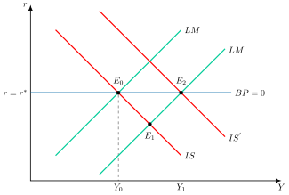
Política monetaria con no perfecta movilidad de capitales: \(\beta<\infty\)
Para analizar la situación de no perfecta movilidad de capitales, gráficamente, en un plano tipo de interés y renta como el de la Figura 2.17 se parte de una situación de equilibrio \(E_{0}\) que determina una renta, \(Y_{0}\), y un tipo de interés, \(r_{0}\), asociados como en el análisis anterior. Sin embargo, ante una no perfecta movilidad de capitales, \(\beta<\infty\), la pendiente de la curva de balanza de pagos será positiva135, donde en los puntos a su izquierda, con un tipo de interés más alto para cada renta, la balanza de pagos tiene superávit, y en los puntos a su derecha, déficit.
En este contexto, una política monetaria expansiva desplazará la curva LM hacia la derecha, \(LM^{\prime}\), hasta un nuevo equilibrio, \(E_{1}\), donde existirá un déficit por balanza de pagos. Dicho déficit producirá presiones a la depreciación de la moneda por lo que:
Si los tipos de cambio son fijos, se dará la misma situación que con perfecta movilidad de capitales: la política monetaria será ineficaz
Si los tipos de cambio son variables, el tipo de cambio se deprecia, lo que desplaza las curvas IS y BP a la derecha, lo que aumenta el efecto positivo inicial de la política monetaria expansiva, y se alcanza un nuevo equilibrio en \(E_{2}\). Por lo tanto, con un tipo de cambio flexible –y con independencia del grado de movilidad del capital–, la política monetaria es eficaz. Además, será más efectiva cuanto mayor sea la movilidad del capital136, ya que sería necesaria una mayor depreciación del tipo de cambio para devolver a la balanza de pagos al equilibrio.

| Mov. \(\infty\) \(K\) | Mov. alta \(K\) | Mov. baja \(K\) | Mov. nula \(K\) | |
|---|---|---|---|---|
| Fijo137 | Ineficaz | Ineficaz | Ineficaz | Ineficaz |
| Flexible | Eficaz +++ | Eficaz ++ | Eficaz + | Eficaz |
Eficacia de la política fiscal en economía abierta
Por otro lado, en la actualidad la política fiscal también depende del sector exterior ya que en un mundo con un elevado número de pequeñas economías abiertas y una creciente globalización económica y financiera, la política fiscal aplicada en un país va a tener efectos sobre otros países y no ser todo lo efectiva que se desearía.
Con el fin de realizar este análisis, se utilizará el modelo de Mundell-Fleming, con los supuestos y la balanza de pagos de “Condicionantes en economía abierta”.
Ahora, con el tipo de cambio y la oferta monetaria dados, es decir, antes de que la balanza de pagos obligue a ajustar uno de los dos, el multiplicador de política fiscal será el siguiente: \[\dfrac{\partial Y}{\partial G}=\dfrac{1}{1-c_{y}\cdot\left(1-\tau_{y}\right)+\dfrac{b\cdot k}{h}+m} \tag{2.48}\] de manera que ahora el multiplicador del gasto público será mayor, además de por los factores vistos antes, también cuanto menor sea la propensión marginal a importar, \(m\)138.
A continuación, se analizarán los casos de perfecta e imperfecta movilidad de capitales.
Política fiscal con perfecta movilidad de capitales: \(\beta=\infty\)
Gráficamente, en un plano tipo de interés y renta como el de la Figura 2.18, se representa la IS, la LM y la BP, cumpliéndose el equilibrio en el punto \(E_{0}\) para un tipo de interés \(r\) y una renta \(Y\). La BP tiene una pendiente nula ya que \(\beta=\infty\). Ante una política fiscal expansiva, la IS se desplaza hacia la derecha hasta un nuevo equilibrio en \(E_{1}\), donde los tipos de interés nacionales serán superiores a los extranjeros, \(r>r^{*}\), lo que incentiva la entrada de capitales extranjeros, provocando tensiones apreciativas sobre la moneda.
En función del tipo de cambio la política fiscal será más o menos efectiva:
Tipo de cambio fijo, la autoridad monetaria interviene comprando divisas y vendiendo moneda nacional, lo que hará que la LM se desplace hacia la derecha139, siendo la política fiscal muy eficaz y trasladando el equilibrio a \(E_{2}\).
Tipo de cambio flexible, la moneda se apreciará, disminuyendo las exportaciones y desplazando la IS hasta el punto inicial, \(E_{0}\). Por consiguiente, la política fiscal será inefectiva con tipo de cambio flexible y perfecta movilidad de capitales.

Política fiscal con no perfecta movilidad de capitales: \(\beta<\infty\)
En el caso de que la movilidad de capitales no sea perfecta, la curva BP tendrá pendiente positiva. Ante una expansión del gasto público:
Tipos de cambio fijos, la política fiscal seguirá siendo efectiva aunque menos que cuando la movilidad de capitales era perfecta. Cuanto menor sea la movilidad, menos efectiva será.
Tipos de cambio flexibles, el movimiento de la curva IS genera un nuevo equilibrio con superávit, la curva IS y de balanza de pagos se desplazarán hacia la izquierda siendo menos eficaz. Si genera un déficit, la curva IS y BP se desplazarán hacia la derecha siendo más eficaz.
| Mov. \(\infty\) \(K\) | Mov. alta \(K\) | Mov. baja \(K\) | Mov. nula \(K\) | |
|---|---|---|---|---|
| Fijo140 | Muy eficaz | Eficaz | Poco eficaz | Ineficaz |
| Flexible | Ineficaz | Poco eficaz | Eficaz | Muy eficaz |
Movilidad nula de capitales y lectura de los dieciséis casos
La última columna de las dos tablas anteriores corresponde a la movilidad nula, \(\beta=0\). Con ella la balanza de pagos depende solo de la balanza comercial, no depende del tipo de interés y su curva BP es vertical.141 Con tipo de cambio fijo, el equilibrio exterior fija la renta, \(Y=\left(x\cdot Y^{*}+\theta\cdot\bar{e}\right)/m\), que no depende del gasto público ni de la oferta monetaria. Ninguna de las dos políticas puede elevar de forma permanente la renta, y solo lo hace una devaluación, con \(\partial Y/\partial\bar{e}=\theta/m\). En el caso de la política monetaria, la expansión del crédito interno se pierde en reservas de divisas, y en el de la política fiscal la renta no cambia y solo sube el tipo de interés.142
Con tipo de cambio flexible, el tipo de cambio se ajusta hasta que el saldo comercial es nulo y los multiplicadores son los de la economía cerrada del Apéndice 2.A.2. La política fiscal alcanza entonces su máxima eficacia y la monetaria la mínima.
Los multiplicadores del Apéndice 2.A.12 explican la regularidad que recorren las dos tablas. Cuanto mayor es la movilidad de capitales, mayor es la eficacia de la política monetaria con tipo flexible y de la política fiscal con tipo fijo, y menor la de la política fiscal con tipo flexible. Los extremos son los casos de movilidad nula y de movilidad perfecta.143
Las 3 curvas completas en el modelo Mundell-Fleming
A continuación, se presentarán las 3 ecuaciones completas con sus respectivas pendientes.
La curva IS representa los pares de renta y tipo de interés que representan el equilibrio en el mercado de bienes: \[Y=\underbrace{C_{0}+c_{y}\cdot\left(1-\tau_{y}\right)\cdot Y}_{C}+\underbrace{I_{0}-b\cdot r}_{I}+\underbrace{G_{0}}_{G}+\underbrace{x\cdot Y^{*}-m\cdot Y+\theta\cdot e}_{XN}\] por lo que teniendo en cuenta que \(A_{0}\) es la suma de todos los componentes autónomos y que \(\theta\) es la sensibilidad de las exportaciones netas al tipo de cambio real \[Y=\dfrac{1}{1-c_{y}\cdot\left(1-\tau_{y}\right)+m}\cdot\left(A_{0}-b\cdot r+x\cdot Y^{*}+\theta\cdot e\right)\] por lo que su pendiente \[\dfrac{\partial r}{\partial Y}=-\dfrac{1-c_{y}\cdot\left(1-\tau_{y}\right)+m}{b}\] por lo que valores altos de \(c_{y}\) y de \(b\) harán que la curva sea más plana y valores altos de \(m\) harán que sea más inclinada, porque las importaciones reducen el multiplicador.
La curva LM representa los pares de renta y tipo de interés que representan el equilibrio en el mercado de dinero y en el mercado de bonos \[\dfrac{M}{P}=k\cdot Y-h\cdot r\] y quedará con la misma pendiente que en economía cerrada \[\dfrac{\partial r}{\partial Y}=\dfrac{k}{h}\] por lo que valores altos de \(h\) harán que la curva tenga menos pendiente y valores altos de \(k\) harán que tenga más pendiente.
La curva BP representa los pares de renta y tipo de interés que representan el equilibrio en el sector exterior, es decir, equilibrio de balanza de pagos144 \[\underbrace{x\cdot Y^{*}-m\cdot Y+\theta\cdot e}_{XN=CC}=\underbrace{-\beta\cdot\left(r-r^{*}\right)}_{-CF}\] manipulando la expresión se obtiene \[r=\dfrac{1}{\beta}\cdot\left(m\cdot Y-x\cdot Y^{*}-\theta\cdot e+\beta\cdot r^{*}\right)\] y su pendiente será \[\dfrac{\partial r}{\partial Y}=\dfrac{m}{\beta}\] por lo que valores altos de \(\beta\) harán que la curva tenga menos pendiente y valores altos de \(m\) harán que tenga más pendiente.
Finalmente, con el tipo de cambio y la oferta monetaria dados, la función de demanda agregada tras la nueva IS será la siguiente: \[Y=\dfrac{1}{1-c_{y}\cdot\left(1-\tau_{y}\right)+b\cdot\dfrac{k}{h}+m}\cdot\left(A_{0}+\dfrac{b}{h}\cdot\dfrac{M_{S}}{P}+x\cdot Y^{*}+\theta\cdot e\right)\] de manera que ahora el multiplicador del gasto público será mayor, además de por los factores vistos antes, también cuanto menor sea la propensión marginal a importar, \(m\)145.
Críticas al modelo Mundell-Fleming
Sin embargo, el modelo de Mundell-Fleming también tiene una serie de limitaciones:
Los precios son fijos.
Solo analiza la demanda agregada.
No tiene en cuenta las expectativas.
Asume un ajuste inmediato.
Estas limitaciones serán superadas posteriormente en la Nueva Macroeconomía Abierta (NOEM) de Obstfeld y Rogoff. A diferencia del modelo de Mundell-Fleming, se basa en la síntesis neokeynesiana (NEK), incorporando microfundamentos explícitos, competencia imperfecta y expectativas racionales146.
2.A.12. Multiplicadores fiscal y monetario en economía abierta
Se derivan los multiplicadores de la política fiscal y de la monetaria en el modelo Mundell-Fleming del Apéndice 2.A.11. El procedimiento consiste en resolver el sistema formado por la IS, la LM y la BP según qué variable sea exógena en cada régimen cambiario. Heijdra (2017, 46) sigue el mismo método: diferencia totalmente las tres curvas y especifica el régimen cambiario para cerrar el sistema. Las tres curvas son: \[\begin{align*} Y & =\dfrac{1}{1-c_{y}\cdot\left(1-\tau_{y}\right)+m}\cdot\left(A_{0}-b\cdot r+x\cdot Y^{*}+\theta\cdot e\right)\\ \dfrac{M}{P} & =k\cdot Y-h\cdot r\\ x\cdot Y^{*}-m\cdot Y+\theta\cdot e & =-\beta\cdot\left(r-r^{*}\right) \end{align*}\] donde \(A_{0}\) es el gasto autónomo, \(m\) y \(x\) son las propensiones marginales a importar y a exportar, \(Y^{*}\) la renta extranjera, \(e\) el tipo de cambio real, de modo que una subida de \(e\) es una depreciación, y \(\theta\) la sensibilidad de las exportaciones netas a ese tipo de cambio. La tercera ecuación es la balanza de pagos, con \(\beta\) la movilidad de capitales y \(r^{*}\) el tipo de interés extranjero.
El régimen cambiario decide cuál de las variables \(e\) y \(M/P\) es exógena. Con tipo de cambio flexible el banco central no interviene en el mercado de divisas, la oferta monetaria es exógena y el tipo de cambio se ajusta hasta equilibrar la balanza de pagos. Con tipo de cambio fijo, \(e=\bar{e}\) es exógeno y la oferta monetaria se ajusta, porque con precios constantes es la suma del crédito interno, \(D\), que controla el banco central, y de las reservas de divisas, \(R\), que varían con las intervenciones: \(M/P=D+R\).147
Tipo de cambio flexible
Con movilidad imperfecta de capitales, \(\beta<\infty\), se elimina primero el tipo de cambio sumando la IS, multiplicada por su denominador, y la BP: \[\left(1-c_{y}\cdot\left(1-\tau_{y}\right)\right)\cdot Y=A_{0}-\left(b+\beta\right)\cdot r+\beta\cdot r^{*}\] Despejando el tipo de interés de la LM y sustituyendo, la renta de equilibrio es: \[Y=\eta_{\beta}\cdot\left(A_{0}+\beta\cdot r^{*}+\dfrac{b+\beta}{h}\cdot\dfrac{M}{P}\right),\quad\eta_{\beta}\equiv\dfrac{1}{1-c_{y}\cdot\left(1-\tau_{y}\right)+\left(b+\beta\right)\cdot\dfrac{k}{h}}\] Los multiplicadores son \(\partial Y/\partial A_{0}=\eta_{\beta}\) para la política fiscal y \(\partial Y/\partial\left(M/P\right)=\eta_{\beta}\cdot\left(b+\beta\right)/h\) para la monetaria. Con \(\beta=0\) se obtienen los multiplicadores de la economía cerrada del Apéndice 2.A.2, porque con tipo flexible y sin movilidad el saldo comercial es siempre nulo y las importaciones no filtran el gasto.
Con movilidad perfecta, \(\beta\to\infty\), el tipo de interés queda anclado, \(r=r^{*}\), y la LM determina por sí sola la renta, sin que la IS intervenga: \[Y=\dfrac{1}{k}\cdot\left(\dfrac{M}{P}+h\cdot r^{*}\right)\] Por tanto el multiplicador fiscal es exactamente nulo, \(\partial Y/\partial A_{0}=0\), y el monetario es el máximo posible, \(\partial Y/\partial\left(M/P\right)=1/k\). El tipo de cambio absorbe la perturbación. Ante una expansión fiscal, \(dY=0\) y la IS exige \(\theta\cdot de=-dG\), es decir, una apreciación que compensa el gasto adicional. Ante una expansión monetaria, la renta sube \(dY=d\left(M/P\right)/k\) y la IS exige \(\theta\cdot de=\left(1-c_{y}\cdot\left(1-\tau_{y}\right)+m\right)\cdot dY>0\), una depreciación que sostiene la mayor demanda.148
Tipo de cambio fijo
Con tipo de cambio fijo, \(e=\bar{e}\), la IS y la BP determinan la renta y el tipo de interés, y la LM solo determina la oferta monetaria. De la BP, el tipo de interés es \(r=r^{*}+\left(m\cdot Y-x\cdot Y^{*}-\theta\cdot\bar{e}\right)/\beta\). Sustituyendo en la IS: \[Y=\dfrac{1}{\Gamma_{\beta}}\cdot\left(A_{0}-b\cdot r^{*}+\left(1+\dfrac{b}{\beta}\right)\cdot\left(x\cdot Y^{*}+\theta\cdot\bar{e}\right)\right),\quad\Gamma_{\beta}\equiv1-c_{y}\cdot\left(1-\tau_{y}\right)+m\cdot\left(1+\dfrac{b}{\beta}\right)\] El multiplicador fiscal es \(\partial Y/\partial A_{0}=1/\Gamma_{\beta}\), positivo y menor cuanto menor es la movilidad. La oferta monetaria no aparece en la renta de equilibrio, de modo que el multiplicador de una expansión autónoma del crédito interno es nulo, \(\partial Y/\partial D=0\). Lo único que hace la LM es determinar cuántas reservas, \(R\), tiene que perder el banco central para que \(M/P=D+R\) se mantenga, de modo que la expansión del crédito interno queda esterilizada. Una devaluación tiene el multiplicador \(\partial Y/\partial\bar{e}=\theta\cdot\left(1+b/\beta\right)/\Gamma_{\beta}\).
Con movilidad perfecta, \(\beta\to\infty\), el multiplicador fiscal alcanza su máximo y coincide con el multiplicador del gasto de la economía abierta a tipo de interés constante: \[\dfrac{\partial Y}{\partial A_{0}}=\dfrac{1}{1-c_{y}\cdot\left(1-\tau_{y}\right)+m}\] Con tipo de interés anclado en \(r^{*}\) y una política monetaria pasiva, no hay efecto expulsión que atenúe el multiplicador. El monetario sigue siendo nulo.149
Resumen y comprobación
Los resultados, con \(\Gamma_{\beta}\) y \(\eta_{\beta}\) definidos más arriba, son:
Tipo flexible y movilidad imperfecta: el multiplicador fiscal es \(\eta_{\beta}\) y el monetario \(\eta_{\beta}\cdot\left(b+\beta\right)/h\).
Tipo flexible y movilidad perfecta: el multiplicador fiscal es 0 y el monetario \(1/k\).
Tipo fijo y movilidad imperfecta: el multiplicador fiscal es \(1/\Gamma_{\beta}\) y el monetario 0.
Tipo fijo y movilidad perfecta: el multiplicador fiscal es \(1/\left(1-c_{y}\cdot\left(1-\tau_{y}\right)+m\right)\) y el monetario 0.
El régimen cambiario no determina por sí solo la eficacia de cada instrumento. Lo que importa es qué variable queda exógena y cuál se ajusta para sostener el equilibrio exterior: el tipo de cambio con tipo flexible y la oferta monetaria con tipo fijo. Estos multiplicadores coinciden con los que Heijdra (2017, 44) recoge en forma general.150
2.A.13. Trilema de la política monetaria en economía abierta
Del modelo Mundell-Fleming se puede derivar el trilema monetario, que se sigue de los resultados de Fleming y Mundell (1962; 1963), es decir, la imposibilidad de una economía de alcanzar simultáneamente
Libre movimiento de capitales.
Tipo de cambio estable.
Política monetaria autónoma, es decir, orientada a objetivos domésticos.
Por lo tanto, los responsables de política económica solo podrán obtener 2 objetivos deseables sacrificando 1 de ellos151. No obstante, el trilema no implica que no puedan existir opciones intermedias, solo que las autoridades deberán enfrentarse a un trade-off entre los diferentes objetivos152.
El cuarteto inconsistente
Si a los tres objetivos del trilema se añade la libre circulación de mercancías, se obtiene el cuarteto inconsistente de Padoa-Schioppa (1988).153
Del trilema al dilema de Rey
El trilema supone que, con libre movilidad de capitales, la política monetaria independiente es posible si y solo si el tipo de cambio flota. Rey (2015) sostiene que el ciclo financiero global transforma el trilema en un dilema, o dúo irreconciliable: la política monetaria independiente es posible si y solo si se gestiona la cuenta de capital, directa o indirectamente, con independencia del régimen cambiario.154 Para debilitar el ciclo financiero global plantea cuatro opciones:
Controles de capital selectivos, cíclicos o permanentes. Rey los considera más bien sustitutos parciales de las políticas macroprudenciales, que son más selectivas, aunque pueden convenir cuando hay mucho préstamo transfronterizo directo y se puede eludir el sistema bancario.155
Actuar sobre una de las fuentes del ciclo, la política monetaria de la Reserva Federal y de los demás grandes bancos centrales, internalizando sus efectos de contagio. Rey recoge la propuesta de Eichengreen y coautores de que un grupo reducido de bancos centrales sistémicos se reúna periódicamente bajo el Comité del Sistema Financiero Global del BIS. La dificultad es que esa cooperación puede chocar con los mandatos nacionales de los bancos centrales.156
Actuar cíclicamente sobre el canal de transmisión, limitando el crédito y el apalancamiento en la fase alcista con políticas macroprudenciales. Entre ellas, el colchón de capital anticíclico de Basilea III y los límites a las ratios de préstamo sobre valor y de deuda sobre renta. Estas políticas pueden debilitar el vínculo entre la política monetaria nacional y la entrada de capitales sin imponer controles.157
Actuar estructuralmente sobre el canal de transmisión, con límites más estrictos de apalancamiento para todos los intermediarios financieros.158
2.A.14. Modelo de Obstfeld y Rogoff
Aunque el modelo de Mundell-Fleming es muy intuitivo, carece de bases microeconómicas y no permite un análisis de bienestar riguroso con el que examinar las políticas económicas.
El modelo de Obstfeld y Rogoff (1995, 1996), en adelante O-R, la base de la literatura de la “Nueva Macroeconomía Abierta” (NOEM)159, revoluciona el análisis de la política monetaria160 en un mundo globalizado al incorporar microfundamentos explícitos en un marco de equilibrio general dinámico y estocástico.
Las bases de su modelo son:
Rigideces nominales (Sticky Prices): las empresas establecen precios con antelación, generando un poder real para la política monetaria sobre la producción a corto plazo.
Competencia monopolística: permite que las empresas fijen precios por encima del coste marginal, abriendo la puerta a distorsiones y markups que la política monetaria puede intentar mitigar.
Optimización intertemporal: Hogares y empresas toman decisiones maximizando su utilidad intertemporal, lo que introduce la consideración de expectativas racionales y restricciones presupuestarias intertemporales, algo ausente en M-F.
Implicaciones de Política Económica:
Canal del Tipo de Cambio: el O-R destaca el tipo de cambio como un canal de transmisión monetaria crucial. Una subida de la tasa de interés doméstica no solo afecta la demanda interna, sino que aprecia el tipo de cambio, lo que reduce las exportaciones (efecto “expenditure switching”) y disminuye la inflación importada (efecto “cost-push”). Esto genera un dilema de política: estabilizar el producto puede entrar en conflicto con la estabilidad de precios debido a los movimientos del tipo de cambio.
Welfare Analysis: A diferencia de M-F, el O-R permite evaluar normativamente la política monetaria en términos de la utilidad de los agentes. La política óptima, en muchos casos, implica replicar el equilibrio de precios flexibles, lo que sugiere que la política monetaria ideal busca neutralizar las distorsiones de las rigideces nominales.
Transmisión del Tipo de Cambio (Exchange Rate Pass-Through): el modelo O-R ha sido clave para entender la distinción entre “Producer Currency Pricing” (PCP) y “Local Currency Pricing” (LCP). Si las empresas utilizan LCP (precios fijados en la moneda del importador), los movimientos del tipo de cambio nominal tienen un menor impacto en los precios relativos inmediatos y, por ende, en el “expenditure switching”, lo que puede explicar el bajo “pass-through” observado empíricamente y complicar la efectividad de la política monetaria.
Coordinación Internacional: en un mundo globalizado, las políticas de un país generan “spillovers” en otros. El O-R permite analizar los beneficios de la coordinación de políticas monetarias, mostrando que pueden ser significativos, especialmente si los shocks son globales o los vínculos comerciales y financieros son fuertes. La flexibilidad del tipo de cambio, a menudo, se revela como un amortiguador importante frente a shocks asimétricos161.
En síntesis, el modelo O-R supera las limitaciones de modelos anteriores al proporcionar una base microeconómica sólida, lo que permitió un análisis más profundo de los canales de transmisión monetaria, los “trade-offs” y la evaluación del bienestar en un entorno de economías abiertas e interconectadas.
Traslación del tipo de cambio y política monetaria óptima
Corsetti y Pesenti (2001) analizan la política monetaria óptima entre economías interdependientes con empresas monopolísticas que fijan los precios con un periodo de antelación y con un grado intermedio de traslación del tipo de cambio a los precios, o pass-through. Los dos casos polares son:
Producer currency pricing (PCP). Las empresas fijan el precio en la moneda de su país, el precio interior de las importaciones se mueve uno a uno con el tipo de cambio, la traslación es del 100 % y los beneficios quedan aislados de sus movimientos.
Local currency pricing (LCP). Las empresas fijan el precio en la moneda del mercado en que venden, el precio interior de las importaciones no cambia con el tipo de cambio, la traslación es nula y los beneficios quedan muy expuestos a esos movimientos.162
Ambos extremos se alejan de la evidencia empírica, porque la traslación suele ser inferior a 1 y rara vez nula.163 Por eso su modelo admite grados intermedios. Obtienen cuatro resultados principales:
Una política monetaria que ignora las condiciones mundiales no puede ser óptima si los beneficios de las empresas están expuestos al tipo de cambio. Cerrar el output gap interior puede inducir una volatilidad excesiva del tipo de cambio, y lo óptimo es aceptar algo de output gap a cambio de precios de importación más bajos. Solo cuando los márgenes no dependen del tipo de cambio, la política óptima no reacciona a la coyuntura mundial.164
El compromiso es superior a la discreción aunque esta no tenga sesgo inflacionista.165
La política óptima reduce la volatilidad del tipo de cambio respecto a la política que solo mira hacia dentro, pero los tipos fijos solo son compatibles con ella si todas las perturbaciones están correlacionadas en el mundo o si los precios locales no reaccionan al tipo de cambio.166
Las ganancias de la cooperación internacional dependen de forma no lineal del grado de traslación. Son nulas con traslación completa o nula, porque entonces las políticas son estratégicamente independientes y no hay contagios, y positivas con grados intermedios.167
La conclusión tradicional sobre la política fiscal también se matiza. Corsetti, Kuester y Müller (2011) muestran, en un modelo neokeynesiano de pequeña economía abierta, que el gasto público no es necesariamente menos expansivo con tipo de cambio flexible.168
DSGE y economía abierta
Dentro del campo de los modelos de Equilibrio General Dinámico Estocástico (DSGE) de economía abierta, que son la evolución del modelo de Obstfeld y Rogoff y la “Nueva Macroeconomía Abierta”, existen varios modelos importantes y sus variantes, a menudo desarrollados por bancos centrales o instituciones académicas para análisis de política.
Estos serían algunos de los más conocidos:
SIGMA (Simulations for Global Analysis): Desarrollado por la Reserva Federal de Estados Unidos (Fed). Es un modelo a gran escala, multi-país, diseñado para analizar la interacción entre grandes bloques económicos y las implicaciones de política monetaria en un contexto global. Permite estudiar efectos de spillovers, coordinación y regímenes de tipo de cambio.
BEQM (Bank of England Quarterly Model): el modelo que utilizó el Banco de Inglaterra entre 2003 y 2011 para pronósticos y análisis de política monetaria. Combinaba un núcleo de equilibrio general con ecuaciones auxiliares y en 2011 lo sustituyó el COMPASS, un DSGE neokeynesiano de economía abierta.
GEM (Global Economy Model): es un marco de modelización multi-país ampliamente utilizado por el Fondo Monetario Internacional (FMI) y varios bancos centrales. Su flexibilidad permite adaptaciones para diferentes economías y propósitos analíticos, incluyendo el estudio de choques globales y sus transmisiones.
NAWM (New Area-Wide Model): Desarrollado y utilizado por el Banco Central Europeo (BCE) para el análisis y pronóstico de la economía de la zona euro. Es un modelo DSGE de varias economías interconectadas que representa la zona euro y sus principales socios comerciales.
Además de estos modelos “institucionales”, hay muchos marcos teóricos más genéricos que han sido la base para su construcción, o que son utilizados en la academia:
- Galí y Monacelli (2005): este es un modelo seminal en la literatura DSGE de pequeña economía abierta. Sirvió de base para que muchos bancos centrales desarrollaran sus propios modelos de pequeñas economías abiertas.
Estos modelos, a diferencia de los Mundell-Fleming o los modelos IS-LM extendidos, se distinguen por:
Fundamentos microeconómicos: Todas las decisiones derivan de la optimización de hogares y empresas.
Expectativas racionales: los agentes forman sus expectativas de manera consistente con el modelo.
Rigideces nominales y reales: Incorporan fricciones como precios y salarios rígidos, o costes de ajuste, que dan a la política monetaria su relevancia a corto plazo.
Shocks estocásticos: Permiten analizar cómo la economía reacciona a diversas fuentes de incertidumbre (shocks de productividad, gasto público, tasa de interés externa, etc.).
En suma, son herramientas cruciales para los bancos centrales en la formulación de política monetaria, el pronóstico y el análisis de escenarios en el complejo entorno de las economías abiertas actuales.
Un shock de oferta importado: el precio del petróleo
Un caso de aplicación del modelo neokeynesiano a una economía abierta es el shock del precio del petróleo. Blanchard y Galí (2010) lo analizan para una economía importadora de petróleo, un bien que las familias consumen y las empresas utilizan como insumo, con un precio real exógeno y con rigidez de los salarios reales. Su pregunta es por qué las subidas del petróleo de los años 2000 tuvieron efectos mucho menores sobre la inflación y la actividad que las de los años setenta.169 Parten de un hecho: los cuatro grandes episodios, que arrancan en 1973, 1979, 1999 y 2002, implican subidas del precio de alrededor del 100 % en términos nominales.170 De su análisis con vectores autorregresivos estructurales extraen dos conclusiones:
En los años setenta actuaron otros shocks adversos, y el petróleo explica solo una parte de la estanflación.171
Los efectos de una misma variación del precio del petróleo han cambiado mucho con el tiempo, y fueron muy superiores en la parte de la muestra que incluye los años setenta.172
Para explicar ese cambio plantean tres hipótesis que no se excluyen entre sí:
Una menor rigidez de los salarios reales. Esa rigidez genera una disyuntiva entre estabilizar la inflación y estabilizar el output gap, de modo que ante un shock de oferta adverso la inflación sube más y la producción baja más cuanto más lentamente se ajustan los salarios reales.173
Una política monetaria más creíble, con un compromiso más firme de los bancos centrales con una inflación baja y estable que mejora la disyuntiva ante el shock.174
Un menor peso del petróleo en la economía. En la calibración, su participación en la producción y en el consumo de Estados Unidos es del 1,7 % y del 1,2 % respectivamente, valores de 1997.175
Concluyen que las tres han podido desempeñar un papel importante.176 Los propios autores advierten de que el modelo es muy simple y de que parte de la evidencia, la de Japón, no encaja con su explicación.177
2.A.15. Evidencia empírica sobre las perturbaciones de demanda y de oferta: los modelos VAR estructurales
Las perturbaciones de demanda y de oferta no son observables y suelen coincidir en el tiempo. Los modelos de vectores autorregresivos (VAR) estructurales las separan mediante restricciones de identificación, una metodología que Galí (1992, 713) describe como “structural VAR methodology”. Se exponen los trabajos que sustentan la distinción empírica entre ambos tipos de perturbación.
La identificación de Blanchard y Quah
Blanchard y Quah (1989) interpretan las fluctuaciones del PIB y del desempleo como el resultado de dos perturbaciones no correlacionadas, una con efecto permanente sobre la producción y otra sin él, que identifican como de oferta y de demanda. Sea \(X_{t}=\left(\Delta Y_{t},U_{t}\right)^{\prime}\) el vector formado por la variación del logaritmo del PIB, \(\Delta Y_{t}\), y la tasa de desempleo, \(U_{t}\), y sea \(e_{t}=\left(e^{d}_{t},e^{s}_{t}\right)^{\prime}\) el vector de perturbaciones de demanda y de oferta. Su representación es: \[X_{t}=\sum^{\infty}_{j=0}A\left(j\right)\cdot e_{t-j}\] donde \(A\left(j\right)\) recoge el efecto de las perturbaciones tras \(j\) periodos. La restricción de identificación es que los efectos de la demanda sobre la variación del producto, \(a_{11}\left(j\right)\), suman cero: \[\sum^{\infty}_{j=0}a_{11}\left(j\right)=0\] de modo que la demanda no tiene efecto a largo plazo sobre el nivel del producto. Es un supuesto de identificación y no un resultado.178
Con esta identificación concluyen que las perturbaciones de demanda tienen un efecto con forma de campana sobre la producción y el desempleo, que desaparece al cabo de dos o tres años, y que las de oferta acumulan su efecto sobre la producción hasta alcanzar una meseta tras cinco años. Los datos respaldan una contribución sustancial de la demanda a las fluctuaciones de la producción a corto y medio plazo, pero no permiten cuantificarla con precisión.179 Atribuyen las recesiones de 1974-1975 y de 1979-1980 en proporciones similares a perturbaciones adversas de oferta y de demanda.180
La extensión de Galí a cuatro perturbaciones
Galí (1992) amplía el análisis a cuatro variables, dinero, tipo de interés, precios y PIB, y a cuatro perturbaciones: de oferta, de oferta monetaria, de demanda de dinero y de gasto (IS). Mantiene la restricción de Blanchard y Quah para separar la oferta y añade restricciones de corto plazo para distinguir las tres perturbaciones de demanda.181 Su objetivo es contrastar las predicciones del IS-LM con curva de Phillips, entre ellas que la producción y los precios se mueven en la misma dirección ante una perturbación de demanda y en direcciones opuestas ante una de oferta.182
Las respuestas estimadas coinciden en lo esencial con esas predicciones.183 Así:
Ante una perturbación favorable de oferta, el PIB sube 0,7 puntos porcentuales en el periodo de la perturbación y alcanza un máximo de 1,1 puntos tras cuatro trimestres. Los precios caen en torno a un 1 %, aunque la caída pronto se desvanece, y el tipo de interés nominal apenas se mueve.184
Ante una perturbación positiva de gasto, el PIB sube casi un 0,5 % en el trimestre de la perturbación y alcanza su máximo a los dos trimestres. El tipo nominal sube, pero la inflación sube más, de modo que el tipo real baja y recupera su nivel inicial unos dos años después.185
Galí obtiene además un resultado que contrasta con la visión keynesiana tradicional. Las perturbaciones de oferta explican en torno al 70 % de la variabilidad del producto a las frecuencias del ciclo económico, de uno a diez trimestres, y las de gasto un 19 % a cinco trimestres.186
Tecnología y empleo
Galí (1999) descompone la productividad y las horas trabajadas en un componente tecnológico y otro no tecnológico. La correlación condicional entre ambas es negativa para las perturbaciones tecnológicas y positiva para las no tecnológicas, y las horas caen de forma persistente tras una perturbación tecnológica positiva. El resultado es difícil de conciliar con la interpretación de los ciclos reales y coherente con un modelo de competencia monopolística y precios rígidos.187
Lectura de la evidencia
La evidencia respalda el tratamiento diferenciado de ambos tipos de perturbación del cuerpo: una perturbación de demanda mueve la producción y los precios en el mismo sentido, y una de oferta en sentidos opuestos. El carácter permanente del efecto de la oferta sobre la producción forma parte, en los dos trabajos, de la restricción de identificación y no es un resultado. La evidencia tampoco es unánime sobre el peso relativo de cada tipo de perturbación. Blanchard y Quah encuentran una contribución sustancial de la demanda a corto y medio plazo, aunque imprecisa, y Galí atribuye a la oferta la mayor parte de la variabilidad de la producción en las frecuencias del ciclo.
2.A.16. El Covid-19 y los shocks de oferta keynesianos
La pandemia de Covid-19 se interpretó al principio como un shock de oferta, con confinamientos, despidos y cierres de empresas, y la pregunta es si exigía además políticas de demanda. Guerrieri, Lorenzoni, Straub y Werning (2020) responden con una teoría de los shocks de oferta keynesianos, que son los que provocan cambios de la demanda agregada mayores que los propios shocks.188 Su punto de partida es que la oferta y la demanda están entrelazadas, porque la demanda es endógena y depende del shock de oferta.189
De un sector a varios sectores
Con un solo sector, un shock de oferta nunca es keynesiano, ni siquiera con mercados incompletos y consumidores con restricciones de liquidez. La propensión marginal a consumir de quien pierde su renta no puede superar la unidad, y su caída del consumo es siempre una versión amortiguada de la caída de su renta.190 Con varios sectores sí puede serlo, porque una perturbación del 50 % que afecta a todos los sectores no equivale a una del 100 % que afecta a la mitad de la economía.191
El modelo con dos sectores supone que el primero, que exige contacto personal, queda paralizado y el segundo no. Con mercados completos el shock reduce el tipo de interés natural si y solo si \(1/\rho<1/\sigma\), es decir, si la elasticidad de sustitución entre los dos bienes en un mismo periodo (aquí \(\rho\) no es la tasa de descuento), \(1/\rho\), es inferior a la elasticidad de sustitución intertemporal, \(1/\sigma\).192 En ese caso los dos bienes son complementarios, y la caída de la producción del primero reduce la utilidad marginal del segundo, lo que actúa como un shock de demanda negativo sobre él.193 Con mercados incompletos la condición se relaja, porque los trabajadores del primer sector, con restricciones de crédito, recortan su gasto en el segundo y este entra en recesión aunque ambas elasticidades coincidan.194
Política fiscal y monetaria
La política fiscal pierde potencia por unidad de gasto. Con el primer sector cerrado, el dinero gastado por el Estado o por los hogares llega a los trabajadores del segundo sector y no a los del primero, que son quienes tienen mayor propensión a consumir. No hay rondas sucesivas de gasto, de modo que el multiplicador del gasto público es 1 y el de las transferencias es la propensión marginal a consumir media, ambos inferiores a los de la cruz keynesiana.195
Las empresas añaden otro canal de amplificación. Si los cierres de negocios dejan a sus empleados sin trabajo, estos recortan su gasto y provocan nuevos cierres, lo que genera un multiplicador de salida de empresas.196 Los subsidios a los beneficios o las rebajas de las cotizaciones empresariales evitan los cierres, pero solo si se condicionan a seguir abiertos. La política monetaria también ayuda, porque al reducir los pagos por deuda puede evitar que cierren las empresas.197
La política óptima, en su modelo, consiste en cerrar los sectores de contacto y dar a los trabajadores afectados un seguro pleno, lo que alcanza la asignación de primer rango pese a la menor potencia de la política fiscal.198 En sus conclusiones añaden una política monetaria laxa y “abundant social insurance”.199
2.A.17. Los modelos macroeconómicos que se usan hoy
El IS-LM tiene un límite en la propia LM. Romer (2000), que recuerda que el modelo ha sido “a central tool of macroeconomic teaching and practice for over half a century”, observa que la mayoría de los bancos centrales, incluida la Reserva Federal, presta hoy poca atención a los agregados monetarios al conducir la política, mientras que una de las hipótesis básicas del IS-LM es que el banco central fija la oferta de dinero.200 Su alternativa sustituye la LM por una regla de tipo de interés real del banco central, lo que simplifica el tratamiento de la política monetaria y reduce la simultaneidad del modelo.201
En la docencia aparece la misma idea. Blanchard (2017) sustituye en su manual el modelo de oferta y demanda agregadas por un IS-LM-PC, en el que PC es la curva de Phillips, y trata la LM como una curva horizontal, porque los bancos centrales fijan el tipo de interés y dejan que la oferta monetaria se ajuste.202 Carlin y Soskice (2005) proponen con el mismo fin un modelo gráfico IS-PC-MR, que es el modelo de tres ecuaciones y que describen como “a simple version of the one commonly used in central banks”.203
El IS-LM tampoco es hoy el modelo con el que los bancos centrales simulan políticas. Blanchard (2016) distingue modelos para fines distintos: “different model types are needed for different tasks”. Los DSGE ocupan el extremo de máxima pureza teórica, y los modelos ad hoc, del IS-LM al Mundell-Fleming, sirven antes del DSGE como primera aproximación y después para presentar sus ideas de forma pedagógica.204 En la práctica, las instituciones usan varios modelos a la vez. El BCE emplea “the suite-of-models approach”, con un modelo estructural, el NAWM II, y dos semiestructurales, el ECB-BASE y el ECB-MC, que forman el instrumental básico de las proyecciones del Eurosistema.205 El informe de Bernanke sobre el Banco de Inglaterra señala que su modelo central, el COMPASS, “has significant shortcomings”, que su papel en la previsión “has diminished considerably” y que muchos bancos centrales usan modelos semiestructurales como el FRB/US de la Reserva Federal.206 Blanchard añade que el apalancamiento, la complejidad y la liquidez, factores de la crisis de 2008, estaban casi ausentes de los modelos de los bancos centrales.207
En síntesis, los modelos se reparten las funciones. Los DSGE son los modelos estructurales de referencia, los semiestructurales sostienen las proyecciones, y los modelos pequeños, como el IS-LM-PC o el de tres ecuaciones, sirven para entender y comunicar los mecanismos.208
2.A.18. La política monetaria óptima ante un shock de costes
Ante un shock de costes, la pregunta es qué debe hacer el banco central. Para responderla conviene distinguir la producción natural, \(y^{n}_{t}\), que es la que habría con precios flexibles, de la producción eficiente, \(y^{e}_{t}\), que es la que habría sin rigideces ni imperfecciones reales. Si la diferencia entre ambas varía en el tiempo, aparece una perturbación de costes, \(u_{t}=\kappa\cdot\left(y^{e}_{t}-y^{n}_{t}\right)\), y no es posible lograr a la vez inflación nula y producción eficiente.209 En adelante, \(x_{t}\) es el output gap respecto a la producción eficiente, que es la relevante para el bienestar, y la curva de Phillips conserva la misma forma, \(\pi_{t}=\beta\cdot E_{t}\left\{ \pi_{t+1}\right\} +\kappa\cdot x_{t}+u_{t}\). Es la misma ecuación del cuerpo, donde el output gap se mide frente a la natural y \(u_{t}\) se trata como exógena.
La pérdida de bienestar de los hogares es, con una aproximación de segundo orden, proporcional a \[E_{0}\sum^{\infty}_{t=0}\beta^{t}\cdot\left(\pi^{2}_{t}+\vartheta\cdot x^{2}_{t}\right)\] donde \(\vartheta\) es el peso del output gap frente a la inflación, que es el cociente entre \(\kappa\) y la elasticidad de sustitución entre bienes. El banco central minimiza esa pérdida sujeto a la curva de Phillips.210
Si el banco central decide en cada periodo sin considerarse atado por promesas anteriores, aplica la política discrecional óptima. Su condición de optimalidad es una regla de objetivo, \[x_{t}=-\dfrac{\kappa}{\vartheta}\cdot\pi_{t}\] según la cual, ante las presiones inflacionistas de un shock de costes, debe llevar la producción por debajo de la eficiente para amortiguar la subida de la inflación.211 Con esa regla, la inflación y el output gap responden en proporción al shock presente, \[\pi_{t}=\dfrac{\vartheta}{\kappa^{2}+\vartheta\cdot\left(1-\beta\cdot\rho_{u}\right)}\cdot u_{t},\qquad x_{t}=-\dfrac{\kappa}{\kappa^{2}+\vartheta\cdot\left(1-\beta\cdot\rho_{u}\right)}\cdot u_{t}\] donde \(\rho_{u}\) es la persistencia del shock. El banco central acomoda así en parte las presiones inflacionistas: la inflación sube, aunque menos que si el output gap no cambiara.212 Es lo que la literatura denomina objetivo de inflación flexible.213
Si el banco central puede comprometerse con un plan creíble, la regla de objetivo cambia. El output gap deja de ser proporcional a la inflación y pasa a serlo a la desviación del nivel de precios, \(p_{t}\) en logaritmos, respecto a un objetivo implícito, el nivel de precios del periodo anterior al plan: \[x_{t}=-\dfrac{\kappa}{\vartheta}\cdot\left(p_{t}-p_{-1}\right)\] Con compromiso, el output gap y la inflación se mantienen negativos más allá de la vida del shock, de modo que el nivel de precios vuelve hacia su valor inicial, y esa promesa mejora el dilema en el periodo en que ocurre el shock, porque la inflación es prospectiva: la misma inflación actual se logra con una caída menor del output gap.214 La discreción, en cambio, intenta estabilizar el output gap a medio plazo más de lo que conviene, sin internalizar los beneficios de dejarlo desviarse en el futuro, y ese rasgo se denomina sesgo de estabilización.215
Estas reglas de objetivo no son directamente aplicables, porque exigen observar en tiempo real la producción eficiente. Una regla de tipos que implemente la política discrecional óptima debe además tener un coeficiente sobre la inflación superior a 1, para cumplir el principio de Taylor.216
Términos del glosario de este tema
46 términos · ver el glosario completo
Bibliografía
Los principales puntos de esta crítica son:
Rechazo de la ley de Say, dado que puede existir un equilibrio con desempleo involuntario.
Énfasis en la importancia de la demanda agregada.
Existencia de rigideces de precios y salarios nominales.
Teoría de la preferencia por la liquidez: para explicar la demanda de dinero y la determinación del tipo de interés.
Teoría a corto plazo.
Investment-Saving (IS) and Liquidity preference-Money supply (LM), es decir, en el mercado de bienes el equilibrio se alcanza cuando I=S (inversión planeada y ahorro planeado se igualan) y en el de dinero cuando L=M (demanda de dinero se iguala con oferta de dinero).↩︎
Galí (2015, ix): el marco neokeynesiano es “the backbone of the new generation of medium-scale models used at the Federal Reserve Board, the European Central Bank (ECB), and many other central banks”.↩︎
Blanchard (2016, 3): los modelos ad hoc, “from various versions of the IS-LM to the Mundell-Fleming model, have an important role to play in relation to DSGE models”. Y en la p. 4: “The DSGE and the ad hoc models were complements, not substitutes”.↩︎
El modelo IS-LM completo, con sus derivaciones, y sus críticas figuran en el Apéndice 2.A.1.↩︎
La derivación de los multiplicadores figura en el Apéndice 2.A.2, y la lógica del multiplicador del gasto, en el 2.A.3, y los puntos de desequilibrio fuera de las curvas, en el 2.A.4.↩︎
Se obtiene derivando los multiplicadores del equilibrio simultáneo: el fiscal, \(\eta\), crece con \(h\) y decrece con \(b\), y el monetario, \(\eta\cdot b/h\), al revés. Los casos extremos, con la Gran Depresión, la Gran Recesión y el Covid, figuran en el Apéndice 2.A.6.↩︎
La obtención de la DA figura en el Apéndice 2.A.1, y la OA de las distintas escuelas, con el modelo DA-OA de la síntesis, en el 2.A.8.↩︎
Lucas (1976, 40): “econometric Phillips curves roughly forecast the initial phase of the current inflation, but not the ‘adverse’ shift in the curve to which that inflation led”. En la p. 19 recuerda que los modelos de predicción implicaban “long-run unemployment-inflation trade-offs”.↩︎
Lucas (1976, 41): “any change in policy will systematically alter the structure of econometric models”, de modo que “comparisons of the effects of alternative policy rules using current macroeconometric models are invalid regardless of the performance of these models over the sample period or in ex ante short-term forecasting”.↩︎
Romer (2000, 149-50): “most central banks, including the U.S. Federal Reserve, now pay little attention to monetary aggregates in conducting policy”, y su alternativa “replaces the LM curve, along with its assumption that the central bank targets the money supply, with an assumption that the central bank follows a real interest rate rule”. El uso actual del IS-LM y de los demás modelos figura en el Apéndice 2.A.17.↩︎
Galí (2015, cap. 1, apartado 1.1): en los ciclos reales “the fluctuations generated by the standard RBC model were fully optimal”, con el corolario de que “stabilization policies may not be necessary or desirable, and they could even be counterproductive”, frente a la interpretación que se remonta a Keynes de las recesiones “as periods with an inefficiently low utilization of resources”. Prescott (1986, 21) lo resumió así: “Economic fluctuations are optimal responses to uncertainty in the rate of technological change”.↩︎
Sims (1980, 1): “the identification claimed for existing large-scale models is incredible”. En la p. 15 propone estimar “an otherwise unconstrained (144 parameter) vector autoregression as the basic model”, y en la p. 21 describe como mejor instrumento “analysis of the system’s response to typical random shocks”.↩︎
Stock y Watson (2001, 101): “A VAR is an n-equation, n-variable linear model in which each variable is in turn explained by its own lagged values, plus current and past values of the remaining n - 1 variables”.↩︎
La intuición es que cada dato de hoy es la huella acumulada de todos los golpes que ha recibido la economía, cada uno con un peso que se va apagando.↩︎
La intuición es que es como lanzar una sola piedra a un estanque y medir la altura del agua en cada punto a medida que pasa el tiempo: la función impulso-respuesta aísla el efecto de ese único golpe y muestra cuándo llega al máximo y cuánto tarda en apagarse.↩︎
Stock y Watson (2001, 106): “Impulse responses trace out the response of current and future values of each of the variables to a one-unit increase in the current value of one of the VAR errors”. En la p. 103: “Structural VARs require ‘identifying assumptions’ that allow correlations to be interpreted causally”.↩︎
Blanchard y Quah (1989, 668): “demand disturbances have a hump-shaped effect on output and unemployment which disappears after approximately two to three years, and that supply disturbances have an effect on output which cumulates over time to reach a plateau after five years”.↩︎
Galí (1992, 712) contrasta que “GNP and prices move in the same direction in response to an aggregate demand shock, but in opposite directions in response to an aggregate supply shock”. En la p. 724: “a favorable supply shock has a negative effect on prices”.↩︎
Galí (1992, 725) atribuye a la oferta “about 70 percent of output variability at business cycle frequencies”, un resultado “clearly at odds with a traditional Keynesian view of business cycles” (p. 726). Blanchard y Quah (1989, 668) encuentran en cambio una contribución sustancial de la demanda a corto y medio plazo. El desarrollo de estos trabajos figura en el Apéndice 2.A.15.↩︎
Una regla mnemotécnica para sus rasgos es TCRFIOMAT: teoría de ciclos reales (equilibrio general dinámico, expectativas racionales y vaciado de mercados), competencia monopolística, rigideces nominales à la Calvo, agentes prospectivos (forward-looking), inflación dinámica, output gap, mecanismo de transmisión monetaria a través del tipo de interés, análisis del bienestar basado en la utilidad y regla de Taylor. La derivación completa de las tres ecuaciones figura en el Apéndice 2.A.10.↩︎
Galí (2015, cap. 1, apartado 1.2): el modelo neokeynesiano “has at its core some version of the RBC model”, y el equilibrio es un proceso estocástico “consistent with optimal intertemporal decisions by households and firms, given their objectives and constraints, and with the clearing of all markets”.↩︎
Galí (2015, cap. 1, apartado 1.2): “Prices and/or wages are set by private economic agents in order to maximize their objectives, as opposed to being determined by an anonymous Walrasian auctioneer seeking to clear all markets”.↩︎
Galí (2015, cap. 1, apartado 1.2): “Firms are subject to some constraints on the frequency with which they can adjust the prices of the goods they sell”.↩︎
Galí (2015, cap. 1, apartado 1.2): los cambios del tipo nominal “are not matched by one-for-one changes in expected inflation, thus leading to variations in real interest rates”. Y: “In the long run, however, all prices and wages adjust, and the economy reverts back to its natural equilibrium”.↩︎
Galí (2015, cap. 1, apartado 1.2): “First, the economy’s response to shocks is generally inefficient. Second, the non-neutrality of monetary policy resulting from the presence of nominal rigidities makes room for welfare-enhancing interventions by the monetary authority”.↩︎
Galí (2015, cap. 1, apartado 1.2): el modelo es “arguably suited for the analysis and comparison of alternative monetary regimes without being subject to the Lucas critique”.↩︎
Galí (2015, cap. 3, apartado 3.3) define el tipo natural como el que “would prevail in the flexible price equilibrium”. Galí escribe \(\tilde{y}_{t}\) para el output gap, mientras que aquí se usa \(x_{t}\), como en Clarida, Galí y Gertler (1999, 1665).↩︎
Galí (2015, cap. 3, apartado 3.3), ecuación (24). Clarida, Galí y Gertler (1999, 1666) añaden el gasto público: “Since \(g_{t}\) shifts the IS curve, it is interpretable as a demand shock”.↩︎
Galí (2015, cap. 3, apartado 3.3): resolviendo hacia delante, “inflation is expressed as the discounted sum of current and expected future deviations of average markups from their desired levels”. Como esa desviación es proporcional al output gap, la expresión en términos del output gap es una derivación propia. En Galí, \(\kappa\equiv\lambda\cdot\left(\sigma+\dfrac{\varphi+\alpha}{1-\alpha}\right)\) y \(\lambda\equiv\dfrac{\left(1-\theta\right)\cdot\left(1-\beta\cdot\theta\right)}{\theta}\cdot\Theta\), con \(\varphi\) la inversa de la elasticidad de Frisch, \(\alpha\) el parámetro de rendimientos decrecientes del trabajo y \(\Theta\equiv\dfrac{1-\alpha}{1-\alpha+\alpha\cdot\epsilon}\), siendo \(\epsilon\) la elasticidad de la demanda.↩︎
Taylor (1993, 202): \(r=p+0{,}5\cdot y+0{,}5\cdot\left(p-2\right)+2\), donde \(r\) es el tipo de los fondos federales, \(p\) la inflación de los cuatro trimestres anteriores e \(y\) la desviación porcentual del PIB real respecto a su tendencia.↩︎
Galí (2015, cap. 3, apartado 3.4.1), ecuación (28), condición necesaria y suficiente de unicidad con coeficientes no negativos.↩︎
La intuición es que, si el banco central sube el tipo nominal menos que la inflación, endeudarse sale cada vez más barato en términos reales. Quien espera precios más altos adelanta sus compras, esas compras empujan los precios y la expectativa se cumple. Subir el tipo más que uno a uno corta el círculo, porque encarece el gasto justo cuando la gente espera más inflación. Clarida, Galí y Gertler (2000, 149) señalan que una regla que no cumple el principio permite “self-fulfilling changes in expectations”.↩︎
Galí (2015, cap. 3, apartado 3.3), ecuación (25): “the output gap is inversely related to the sum of current and anticipated deviations between the real interest rate and its natural counterpart”.↩︎
Clarida, Galí y Gertler (1999, 1670) recuerdan, con Kydland y Prescott (1977), que cuando las variables objetivo dependen de las expectativas sobre la política futura la credibilidad del banco central se vuelve un asunto crítico.↩︎
La sustitución figura en el Apéndice 2.A.10.↩︎
La intuición es que, con perturbaciones independientes en el tiempo, lo que ocurre hoy no da ninguna información sobre el shock de mañana: \(E_{t}\left\{ z_{t+1}\right\} =E_{t}\left\{ g_{t+1}\right\} =E_{t}\left\{ u_{t+1}\right\} =E_{t}\left\{ \varepsilon_{t+1}\right\} =0\). Además, el output gap y la inflación no son variables predeterminadas, porque el modelo básico no tiene capital ni deuda que arrastren el pasado, como recuerda Galí (2015, cap. 3, apartado 3.4.1). Por eso, cuando el equilibrio es único, ambas son funciones lineales de las perturbaciones del periodo, y su valor esperado para el periodo siguiente es nulo. Galí (2015, cap. 5, apartado 5.2.1) lo muestra para la política discrecional: la inflación y el output gap son proporcionales al shock de costes del periodo, con un denominador en el que entra su persistencia, \(\rho_{u}\). Si todas las perturbaciones tienen una persistencia común, \(\omega\), las expectativas pasan a ser \(E_{t}\left\{ x_{t+1}\right\} =\omega\cdot x_{t}\) y \(E_{t}\left\{ \pi_{t+1}\right\} =\omega\cdot\pi_{t}\), y las dos curvas se pueden seguir dibujando. La CPNK pasa a ser \(\pi_{t}=\dfrac{\kappa}{1-\beta\cdot\omega}\cdot x_{t}+\dfrac{u_{t}}{1-\beta\cdot\omega}\): es más empinada, y el shock de costes pesa más porque las empresas saben que el aumento del coste durará. La ISD pasa a ser \(\pi_{t}=\dfrac{\hat{r}^{n}_{t}+\sigma\cdot g_{t}-\varepsilon_{t}-\left(\sigma\cdot\left(1-\omega\right)+\phi_{x}\right)\cdot x_{t}}{\phi_{\pi}-\omega}\), y sigue siendo decreciente mientras \(\phi_{\pi}>\omega\), lo que se cumple siempre que el banco central reaccione a la inflación más que uno a uno. Además, el principio de Taylor garantiza que el denominador de la solución, \(\kappa\cdot\left(\phi_{\pi}-\omega\right)+\left(1-\beta\cdot\omega\right)\cdot\left(\sigma\cdot\left(1-\omega\right)+\phi_{x}\right)\), sea positivo, de modo que el output gap y la inflación responden a cada perturbación con el mismo signo que sin persistencia. Cambian las pendientes, pero no el sentido en que cada perturbación mueve el output gap y la inflación, de modo que se mantienen la divina coincidencia ante perturbaciones de demanda y la disyuntiva ante las de costes. Lo que el gráfico no recoge es el papel de las expectativas: que la política actúe por toda la senda esperada de tipos, la ventaja del compromiso frente a la discreción y la persistencia de la inflación, que se tratan en las implicaciones del modelo y en el Apéndice 2.A.18. Las expresiones con persistencia son una derivación propia.↩︎
La intuición es que la ISD es la demanda vista a través del banco central. Cuando los precios suben, el banco central encarece el crédito más que la inflación, y las familias y las empresas aplazan compras e inversiones, igual que quien retrasa la compra del coche cuando sube la cuota del préstamo. Por eso a más inflación le corresponde menos producción.↩︎
La intuición es que, si cada mes solo uno de cada diez restaurantes puede cambiar su carta, un aumento de la demanda apenas mueve el precio medio del menú: la mayoría sigue cobrando lo mismo y lo que se ajusta es cuántos menús sirven. Cuantas más empresas pueden reajustar, más se traslada el exceso de demanda a los precios.↩︎
Galí, Gertler y López-Salido (2005, 3): “the pure forward-looking model is rejected by the data”, pero “forward looking behavior is dominant”, con un coeficiente de la inflación pasada “in the interval 0.2 to 0.4”. Galí (2015, cap. 3, apartado 3.5) alude a “the unobservability of the output gap”. La evidencia completa figura en el Apéndice 2.A.10.↩︎
La paradoja del ahorro, que analiza un aumento generalizado del deseo de ahorrar, figura en el Apéndice 2.A.7.↩︎
La intuición es que, sin perturbaciones de costes, la inflación solo aparece cuando la economía se recalienta, como la fiebre que solo aparece cuando hay infección. Igual que bajar la fiebre de forma duradera exige curar la infección, estabilizar la inflación exige cerrar el output gap, y el banco central consigue las dos cosas con un solo instrumento.↩︎
Galí (2015, cap. 4, apartado 4.3): “price stability implies an efficient level of output, and vice versa. The previous finding, often referred to as the divine coincidence in the literature, implies that a central bank doesn’t need to know or worry about what the efficient level of output is at each point in time”. El término es de Blanchard y Galí (2007, 36): “This property, which we shall call the divine coincidence”.↩︎
Stock y Watson (2002, 160-61) fechan la ruptura en el primer trimestre de 1984, con desviaciones típicas “60% to 70% of their values during the 1970s and early 1980s”. Bernanke (2004): la variabilidad del crecimiento de la producción “has declined by half since the mid-1980s, while the variability of quarterly inflation has declined by about two thirds”.↩︎
Clarida, Galí y Gertler (2000, 148 y 157): antes de Volcker la Reserva Federal “let real short-term interest rates decline as anticipated inflation rose”, con un coeficiente de la inflación de 0,83, frente a 2,15 en el periodo de Volcker y Greenspan. En la p. 147 concluyen que “the Volcker-Greenspan rule is stabilizing”.↩︎
Blanchard y Galí (2007, 35): con rigideces reales de los salarios “the divine coincidence disappears”. Stock y Watson (2002, 162) atribuyen a la mejor política entre el 10 % y el 25 % de la moderación, y Bernanke (2004), que da más peso a la política monetaria, reconoce que “the debate remains very much open”.↩︎
La intuición es que el banco central actúa como un termostato: si el gasto público calienta la economía, sube los tipos y enfría el consumo y la inversión privados. En la cota cero el termostato está bloqueado, y además la mayor inflación esperada abarata el crédito en términos reales, de modo que cada euro de gasto público rinde más.↩︎
Woodford (2010, 2, 9 y 18): “if monetary policy maintains a constant real interest rate, the multiplier is instead equal to 1”, y “The multiplier is necessarily smaller under this kind of Taylor rule”. En la versión estática del modelo, el efecto sobre el output gap es \(\sigma/\left(\sigma+\phi_{x}+\kappa\cdot\phi_{\pi}\right)\), derivación propia que figura en el Apéndice 2.A.10.↩︎
Galí, López-Salido y Vallés (2005, 1): los hogares ricardianos reducen el consumo por el efecto riqueza negativo, y los que siguen una regla de comportamiento (rule-of-thumb) consumen según su renta disponible corriente. Se cita el documento de trabajo del NBER 11578.↩︎
Clarida, Galí y Gertler (1999, 1667): la perturbación de costes “captures anything else that might affect expected marginal costs”.↩︎
La intuición es que, con precios rígidos, la demanda no crece al ritmo de la productividad. Si una panadería compra un horno que hace el doble de pan pero no baja el precio, sus clientes siguen comprando lo mismo, y para atenderlos necesita menos horas de trabajo. Galí (2015, cap. 3, apartado 3.4.1): “the output gap and inflation are shown to decline persistently in response to the positive technology shock”. Basu, Fernald y Kimball (2006, 1418) encuentran que las mejoras tecnológicas “reduce total hours worked within the year”.↩︎
Clarida, Galí y Gertler (1999, 1672), resultado 1: “To the extent cost push inflation is present, there exists a short run trade-off between inflation and output variability”.↩︎
La intuición es que un shock de costes se parece a la subida del gasóleo para un transportista: puede mantener sus tarifas y perder margen o subirlas y perder clientes, pero no puede evitar las dos cosas. El banco central tampoco puede anular el shock, solo decidir cómo reparte el daño entre más inflación y menos actividad.↩︎
La derivación de la forma reducida figura en el Apéndice 2.A.10.↩︎
En este apartado el output gap se mide, como en Clarida, Galí y Gertler, frente a la producción natural, y \(u_{t}\) es una perturbación exógena. Galí la mide frente a la producción eficiente, y entonces \(u_{t}\) recoge la distancia variable entre la eficiente y la natural. La curva de Phillips tiene la misma forma en los dos casos, como se explica en el Apéndice 2.A.18.↩︎
Galí (2015, cap. 5, apartado 5.2.1), ecuaciones (5) y (6).↩︎
La intuición es que las empresas fijan hoy sus precios pensando en el futuro, de modo que la promesa creíble de mantener la economía algo fría más adelante las convence de subir menos ahora. Es como el profesor con fama de cumplir lo que anuncia, que consigue que sus alumnos estudien sin necesidad de suspender a nadie. Galí (2015, cap. 5, apartados 5.1 y 5.2): ante un shock de costes, el banco central “must respond by driving output below its efficient level”, y con compromiso “manages to improve the output gap/inflation tradeoff in the period when the shock occurs”. La función de pérdida, las soluciones y el sesgo de estabilización figuran en el Apéndice 2.A.18.↩︎
BCE (2022), declaración de política monetaria de 15 de diciembre de 2022: “Fiscal support measures to shield the economy from the impact of high energy prices should be temporary, targeted and tailored to preserving incentives to consume less energy. Fiscal measures falling short of these principles are likely to exacerbate inflationary pressures, which would necessitate a stronger monetary policy response”. Es una recomendación institucional, no un resultado del modelo.↩︎
Woodford (2010, 41) ve “a good case for leaving output-gap stabilization largely to monetary policy”.↩︎
Christiano, Eichenbaum y Rebelo (2011, 78 y 93): el multiplicador es “much larger than one when the zero lower bound on the nominal interest rate binds”, con un valor de 3,7 en su modelo básico. Nakamura y Steinsson (2014, 753) estiman en los estados de Estados Unidos un “open economy relative multiplier” de aproximadamente 1,5, porque en una unión monetaria la autoridad monetaria no puede endurecer la política solo en la región afectada (p. 780). Es un multiplicador relativo entre regiones, no agregado.↩︎
Mundell (1963, 484): “Monetary policy has no impact on employment under fixed exchange rates while fiscal policy has no effect on employment under flexible exchange rates”.↩︎
La intuición es que, con capital perfectamente móvil, el tipo de interés nacional queda soldado al mundial, como el agua de dos vasos comunicantes. Con tipo flexible, el gasto público que intenta subirlo atrae capital, encarece la moneda y expulsa exportaciones hasta anular su efecto. Con tipo fijo, el dinero que inyecta el banco central se va al exterior y tiene que recomprarlo para defender la paridad.↩︎
Mundell (1963, 478): “the negative effect on income of exchange rate appreciation has to offset exactly the positive multiplier effect on income of the original increase in government spending”. Y en la p. 479: “monetary policy under fixed exchange rates has no sustainable effect on the level of income”. La derivación de las tres curvas y los casos con movilidad imperfecta y nula figuran en los Apéndices 2.A.11 y 2.A.12.↩︎
El trilema y el cuarteto inconsistente figuran en el Apéndice 2.A.13.↩︎
Galí y Monacelli (2005, 718-19): “the form of the Phillips equation for the open economy corresponds to that of the closed economy”, en lo que se refiere a la inflación de los bienes nacionales, y “openness generally makes the natural interest rate depend on expected world output growth”. El modelo continúa la línea de Obstfeld y Rogoff, desarrollada en el Apéndice 2.A.14.↩︎
Galí (2015, cap. 8, apartado 8.2), ecuaciones (29) y (37): la curva de Phillips de la pequeña economía abierta es una versión “of identical form as its closed economy counterpart”, con \(\kappa_{\upsilon}\equiv\lambda\cdot\left(\sigma_{\upsilon}+\dfrac{\varphi+\alpha}{1-\alpha}\right)\) y \(\sigma_{\upsilon}\equiv\sigma\cdot\Phi\), siendo \(\Phi\equiv1/\left(1+\upsilon\cdot\left(\varpi-1\right)\right)\) y \(\varpi\) un parámetro que crece con la elasticidad de sustitución entre bienes nacionales y extranjeros. Para \(\upsilon=0\), la pendiente coincide con la \(\kappa\) de la economía cerrada.↩︎
Galí (2015, cap. 8, apartado 8.2), ecuación (38). El signo de ese efecto depende de los parámetros del modelo.↩︎
Galí (2015, cap. 8, apartados 8.2 y 8.3), ecuaciones (29), (37) y (39). La perturbación de costes, \(u_{t}\), no figura en la ecuación (37) de Galí y se añade aquí como en la economía cerrada, y la regla se escribe con el output gap, como en la economía cerrada.↩︎
Galí (2015, cap. 8, apartado 8.3) indica que un cambio en el producto mundial se analiza con “an identical approach” que en la economía cerrada: primero se ve cómo afecta al tipo natural y después se resuelve el output gap y la inflación nacional. El gráfico con expectativas nulas es una construcción propia, análoga a la de la Figura 2.4 (a).↩︎
Galí y Monacelli (2005, 708-9): la política estricta de objetivo de inflación nacional “can achieve a simultaneous stabilization of the output gap and domestic inflation”, y “a domestic inflation-based Taylor rule is shown to dominate a CPI-based Taylor rule”, que a su vez “dominates an exchange rate peg”. Los matices de la traslación del tipo de cambio y de la política fiscal con tipo flexible figuran en el Apéndice 2.A.14.↩︎
Blanchard y Galí (2010, 374 y 380): “the four episodes involve oil shocks of a similar magnitude”, y “the effects of a given change in the price of oil have changed substantially over time”. El análisis completo figura en el Apéndice 2.A.14.↩︎
Blanchard y Galí (2010, 375): “The presence of real wage rigidities generates a trade-off between stabilization of inflation and stabilization of the output gap”.↩︎
Blanchard y Galí (2010, 375): la mayor firmeza de los bancos centrales frente a la inflación “may have led to an improvement in the policy trade-off”.↩︎
Blanchard y Galí (2010, 376): las tres hipótesis “are likely to have played an important role”.↩︎
La intuición es que, cuando los grandes inversores se vuelven a la vez optimistas o temerosos al compás de la Reserva Federal, el crédito y los precios de los activos de una economía pequeña suben y bajan con esa marea aunque su moneda flote. El tipo de cambio flexible amortigua las olas, pero no cambia la marea.↩︎
Rey (2015): “Whenever capital is freely mobile, the global financial cycle constrains national monetary policies regardless of the exchange rate regime”, y “independent monetary policies are possible if and only if the capital account is managed”. Sobre el VIX y el país central: “This cycle co-moves with the VIX” y “one of the determinants of the global financial cycle is monetary policy in the centre country”.↩︎
La intuición es que no todos los sectores pesan igual en la red: una avería en un proveedor del que dependen muchos, como la energía o el transporte, se transmite a todos sus clientes, mientras que el tropiezo de un sector final aislado se diluye. Por eso los golpes en unos pocos nudos centrales pueden mover toda la economía.↩︎
Acemoglu y coautores (2012, 1977): “in the presence of intersectoral input–output linkages, microeconomic idiosyncratic shocks may lead to aggregate fluctuations”, lo que ocurre “only if there exists significant asymmetry in the roles that sectors play as suppliers to others”. En la p. 1979 señalan que en Estados Unidos “a small number of sectors play a disproportionately important role as input suppliers to others”.↩︎
Bonadio y coautores (2021 resumen): “One quarter of the total model-implied real GDP decline is due to transmission through global supply chains”. Es un resultado de modelo, no un dato observado.↩︎
Baqaee y Farhi (2022, 1397-98): “negative sectoral supply shocks are stagflationary”, y las políticas que estimulan la demanda “exacerbate problems of inadequate supply, leading to shortages and inflation”. En la p. 1400: “the power of untargeted aggregate demand stimuli, like monetary policy, is greatly diminished”.↩︎
Guerrieri y coautores (2020 resumen y p. 20): “supply shocks that trigger changes in aggregate demand larger than the shocks themselves”, con un multiplicador del gasto público igual a 1. El desarrollo figura en el Apéndice 2.A.16.↩︎
Banco de Pagos Internacionales (2026, 13): “The breadth of the supply shock extended well beyond oil and gas, also affecting fertilisers, petrochemicals, plastics and other critical inputs”. En la p. 18: “Higher costs and shortages of key inputs could propagate through supply chains, raising the costs of other intermediate goods and amplifying price pressures on final goods”.↩︎
FMI (2026, 17): “Reacting strongly to flexible commodity prices, when supply constraints are present only in the related sectors, brings down inflation fast but risks a recession later”. En la p. 18 recomienda que el apoyo inevitable sea “timely, explicitly temporary, and channeled through tightly targeted transfers to the most vulnerable”.↩︎
Banco de España (2026, 19): “El colapso del acuerdo alcanzado en junio para poner fin al conflicto ha prolongado el bloqueo del estrecho de Ormuz y ha dado paso a una situación de estancamiento”. Datos cerrados el 2 de octubre de 2026.↩︎
Eurostat (2026): “Euro area annual inflation is expected to be 3.8% in September 2026, up from 3.2% in August”, y “energy is expected to have the highest annual rate in September (18.8%, compared with 14.3% in August)”. Es una estimación preliminar publicada el 2 de octubre de 2026, y los datos definitivos se publican el 16 de octubre.↩︎
Cipollone (2026): “This constitutes a negative supply shock for the euro area economy”, y “there are inevitable trade-offs associated with the response to negative energy supply shocks”. Según el Informe Mensual de mayo de 2026 del Bundesbank (2026), “The Strait of Hormuz has remained largely closed owing to the Iranian and US blockades”.↩︎
Guerrieri y coautores (2020 resumen y p. 20): un shock de oferta keynesiano provoca “changes in aggregate demand larger than the shocks themselves”, y el multiplicador del gasto público es 1.↩︎
Rey (2015 resumen): “independent monetary policies are possible if and only if the capital account is managed”.↩︎
Blanchard (2016, 3): “different model types are needed for different tasks”, y entre las críticas a los DSGE figura que “are bad communication devices”.↩︎
La ecuación o identidad de Fisher establece la relación entre el tipo de interés nominal, el tipo de interés real y la inflación esperada \[\left(1+i\right)=\left(1+r\right)\cdot\left(1+\pi\right)\] y para valores pequeños se puede hacer una aproximación lineal vía logaritmos \[i=r+\pi\] si se despeja en función de \(r\), esta identidad es clave para entender el verdadero rendimiento de una inversión, la toma de decisiones económicas y la política del banco central \[r=i-\pi\]
La curva de Phillips superará los supuestos 3 y 4.↩︎
¿Por qué se suele utilizar de manera indistinta producción y renta en Macroeconomía? Esto se debe a la triple identidad de la renta nacional. Así, la equivalencia se basa en el flujo circular de la renta en una economía:
Producción (Valor de Bienes y Servicios): Todo lo que se produce en una economía (el Producto Interno Bruto o PIB) tiene un valor monetario.
Renta (Ingreso Generado): el valor de esa producción se distribuye como renta entre los factores de producción que la generaron (salarios a los trabajadores, beneficios a los propietarios de capital, etc.).
Gasto (Valor de las Compras): los hogares, las empresas y el gobierno utilizan esa renta para comprar la producción de bienes y servicios.
Por lo tanto, en una economía cerrada y sin sector público, se cumple que Producción = Renta = Gasto.
En resumen, la producción de una economía genera un ingreso equivalente, y ese ingreso se utiliza para comprar esa misma producción. Por eso, en Macroeconomía, los términos “renta” y “producción” son sinónimos.
Este resultado sería aplicable en una economía abierta, pero habría que incluir las exportaciones y las importaciones: \[Y=C+I+G+X-M\]↩︎
Concretamente, la IS será inclinada para los keynesianos y plana para los monetaristas.↩︎
Ver el Apéndice 2.A.5, sobre por qué ambos mercados están en equilibrio.↩︎
Cuando se hace referencia a la demanda de dinero se está haciendo referencia a la demanda de saldos reales, por lo que esta depende de la renta real y no de la nominal↩︎
Concretamente, la LM será plana para los keynesianos e inclinada para los monetaristas.↩︎
Ver el desarrollo matemático completo en el Apéndice 2.A.2.↩︎
Nótese que en el caso de una política fiscal expansiva no tiene lugar el efecto liquidez o efecto Keynes inicial (que sí tenía lugar con una política monetaria expansiva). Ello se debe a que el aumento del gasto público desencadena directamente el efecto renta, mientras que un aumento de la oferta monetaria desencadena una disminución del tipo de interés a través del efecto liquidez o Keynes previo, y esto es lo que genera el efecto renta.↩︎
Nótese que, aunque en el efecto expulsión aumenta la demanda de dinero, la curva LM no se desplaza hacia la izquierda, pues lo que ha cambiado es la variable de uno de los ejes, la renta, por lo que es un desplazamiento EN la curva LM, no DE la curva.↩︎
Cuanto menor sea la sensibilidad de la demanda de dinero a la renta, \(k\), más plana será la demanda agregada, ya que el multiplicador monetario es más elevado y ante variaciones de los saldos reales la LM se desplaza más en horizontal↩︎
Ver el Apéndice 2.A.6, con las diferentes pendientes de la DA en función de las de la IS y la LM.↩︎
La intuición es que el ahorro de unos es gasto que dejan de cobrar otros: si todo el mundo recorta a la vez, la renta de todos baja y nadie consigue ahorrar más.↩︎
La denominación “modelo clásico” se debe a John Maynard Keynes y hace referencia, no a la obra de los economistas clásicos –como Adam Smith, David Ricardo o John Stuart Mill–, sino al modelo macroeconómico implícito en los trabajos de los economistas anteriores a Keynes, principalmente Irving Fisher y A. C. Pigou. De hecho, la obra de estos autores constituiría en buena medida la extensión a la Macroeconomía de los principios de la Microeconomía neoclásica o marginalista, desarrollada en el último tercio del siglo XIX. (Bajo Rubio y Monés 2000)↩︎
Se supondrá que predomina el “efecto sustitución” sobre el “efecto renta”, de modo que un aumento del salario real llevará a una mayor oferta de trabajo. La curva de oferta de trabajo tendrá por ende pendiente positiva (a nivel individual y agregado).↩︎
Es decir, el ahorro parece ser un impedimento para el crecimiento económico en la economía keynesiana –debido al no cumplimiento de la ley de Say–, mientras que para los clásicos el ahorro es fundamental para el crecimiento económico –un aumento del ahorro reduce el tipo de interés estimulando la inversión, aumentando con ella la producción y la demanda \(S=I\)– al suponer que se invierte íntegramente.↩︎
Al existir imperfecciones en la información los trabajadores tienen una inflación esperada distinta de la efectiva, por lo que los salarios reales esperados son superiores a los efectivos, lo que se traduce en una oferta agregada a corto plazo con pendiente positiva.↩︎
En este sentido es un modelo resistente a la crítica de Lucas, que critica los modelos de la SNC por tener parámetros fijos y variables exógenas determinadas de forma arbitraria en relación con hechos estilizados de la economía. En este sentido, no contemplaban la posibilidad de que un shock o una política económica, alterara las decisiones de los agentes que, racionalmente, ajustan y modifican la estructura (parámetros) sobre la cual se busca, a priori, analizar dicha política. Por lo cual, dichos esquemas de la SNC daban lugar a predicciones que son inconsistentes a largo plazo.↩︎
En el corto plazo, la tasa de inflación está dada (ya que el BC tiene los medios econométricos, estadísticos, etc., para hacer una previsión perfecta de la inflación esperada). Por ello, la autoridad monetaria puede determinar de forma directa el tipo de interés real a corto plazo por la ecuación de Fisher (\(i\approx r+\pi^{e}\)) a través de la modificación de los tipos de interés nominales.↩︎
Los desplazamientos de la curva IS se pueden dar por:
Cambios en las expectativas sobre el futuro. Un ejemplo de esto es que los consumidores varían su consumo actual dependiendo de su visión respecto de la situación económica en el futuro.
Cambios en la oferta de créditos, como los que surgen por problemas de información que conducen a un aumento de las garantías solicitadas por los bancos.
Cambios en cualquier factor autónomo en el modelo. Por ejemplo, un aumento del gasto público.
Así, la curva de la regla monetaria, \(RM\), será balanceada, \(\beta=1\), aversa a la inflación y más plana, \(\beta>1\),y aversa al desempleo y más inclinada, \(\beta<1\).↩︎
Por tanto, la autoridad monetaria opera sobre la tasa de interés en \(t-1\), variable que impacta sobre el nivel de producto en \(t\) (la variable de control del modelo).↩︎
El output gap se define como la diferencia entre el nivel de output y el nivel de output consistente con un nivel de inflación constante.↩︎
En este sentido, cuando el tipo de interés se ubique por encima (debajo) del nivel de tipo de interés de estabilización, la economía se estaría enfriando (recalentando). La pendiente negativa refleja ese proceso de asignación.↩︎
Se encarga de fijar el nivel de inflación y el nivel de tipos de interés que permite este equilibrio (hace las veces de pseudo-demanda agregada. A diferencia con la curva de demanda agregada tradicional, la MR va a determinar junto con la curva de Phillips) el nivel de renta e inflación de equilibrio. Sin embargo, al ser un concepto de equilibrio, puede ocurrir que en un determinado periodo o durante varios, el nivel alcanzado sea distinto del que se determinaría a través de la MR. Es por eso que no es una verdadera Curva de demanda agregada.↩︎
A su vez, es importante, destacar la diferencia entre un shock permanente y temporal, en este caso será permanente. Así, el carácter permanente o temporal de un shock hace referencia a la expectativa del Banco Central de que la curva IS se vaya a mantener estable durante el siguiente periodo:
En caso de que sea permanente, aumentará el tipo de interés sobre la curva \(IS^{\prime}\).
En caso de considerar que el shock es temporal, dado que en el siguiente periodo la curva IS retornará a su punto de partida, el incremento del tipo de interés será inferior.
El hecho de que dependiendo de esta consideración el efecto sobre los tipos de interés sea diferente va a ser uno de los grandes problemas a los que se enfrentan la autoridad monetaria y una de las fuentes de los principales problemas a la hora de estabilizar la economía y la inflación. En este sentido, si se considera permanente lo que es temporal se producirá un exceso de desinflación a costa de una mayor caída del output y si se considera temporal lo que es un shock permanente no se llegará a conseguir un ajuste lo suficientemente elevado para estabilizar la economía.↩︎
Galí (2015, cap. 3, apartado 3.1), sobre el capítulo 2: “the optimal consumption/savings and labor supply decisions are identical to the ones derived therein”.↩︎
Galí (2015, cap. 3, apartado 3.1), ecuaciones (2) y (3).↩︎
Galí (2015, cap. 3, apartado 3.3), ecuación (13).↩︎
Galí (2015, cap. 3, apartado 3.2): “\(\theta\) becomes a natural index of price stickiness”.↩︎
Galí (2015, cap. 3, apartado 3.2.1), ecuación (8).↩︎
Galí (2015, cap. 3, apartados 3.2.2 y 3.3), ecuaciones (10) y (11): “firms set prices in a forward-looking way”.↩︎
Galí (2015, cap. 3, apartado 3.3), ecuaciones (14) a (17): \(\lambda\) “is strictly decreasing in the index of price stickiness \(\theta\)”.↩︎
Galí (2015, cap. 3, apartado 3.3), ecuaciones (18) a (22): la NKPC “constitutes one of the key building blocks of the basic New Keynesian model”.↩︎
Galí (2015, cap. 3, apartado 3.3), ecuaciones (23) a (25): \(r^{n}_{t}\) es “the real interest rate that would prevail in the flexible price equilibrium”.↩︎
Galí (2015, cap. 3, apartado 3.3), ecuación (26), que la reescribe “in terms of the output gap” con el término adicional \(\phi_{y}\cdot\hat{y}^{n}_{t}\), siendo \(\hat{y}^{n}_{t}\equiv y^{n}_{t}-y\) la desviación de la producción natural respecto al estado estacionario.↩︎
Derivación propia por sustitución, en la versión estática. En Galí (2015, cap. 3, apartado 3.4.1), ecuación (27), el mismo coeficiente aparece como \(\Omega^{-1}=\sigma+\phi_{y}+\kappa\cdot\phi_{\pi}\).↩︎
Galí (2015, cap. 3, apartado 3.4.1): “Given that both the output gap and inflation are non-predetermined variables, the solution to (27) is locally unique, if and only if, \(A_{T}\) has both eigenvalues within the unit circle”. Con coeficientes no negativos, la condición necesaria y suficiente es la ecuación (28).↩︎
Galí, Gertler y López-Salido (2005, 2): “a hybrid Phillips curve that nests the pure forward looking Calvo model as a special case”. Se cita el documento de trabajo del NBER 11788 de noviembre de 2005.↩︎
Galí, Gertler y López-Salido (2005, 3): “the coefficient b is statistically greater than zero, implying that the pure forward-looking model is rejected by the data”, y “forward looking behavior is dominant”, con el coeficiente de la inflación pasada “in the interval 0.2 to 0.4”.↩︎
Galí, Gertler y López-Salido (2005, 3): “Specifications based instead on ad-hoc ‘output gap’ measures”, como el PIB sin tendencia, “do not perform well”.↩︎
Galí (2015, cap. 3, apartado 3.5): “The empirical performance of the New Keynesian Phillips curve has always been controversial”, y los trabajos favorables al ajuste de la ecuación “discuss the difficulties in estimating or testing the NKPC given the unobservability of the output gap”.↩︎
El modelo de Mundell-Fleming integra el comercio y las finanzas internacionales en la teoría macroeconómica. Este enfoque fue desarrollado a principios de los 60 por el economista canadiense Robert Mundell –Premio Nobel en 1999– y el británico J. Marcus Fleming. En este periodo, ambos autores fueron miembros del departamento de investigación del FMI, donde de manera independiente incluyeron el sector exterior en el modelo keynesiano tradicional, integrando mercados de bienes y de capitales. La investigación resultante constituye la versión original del modelo (Fleming 1962; Mundell 1963).↩︎
En el caso de país grande, cambios en su renta o en su tipo de interés tendrían efectos sobre otros países que habría que tener en cuenta en el modelo.
Esto significa que las variables correspondientes al resto del mundo (renta, precios y tipos de interés extranjeros) que se utilizan en lo sucesivo serán exógenas y no se determinarán, por tanto, dentro del modelo.↩︎
Para que el sector exterior (representado por la balanza de pagos) esté en equilibrio, es necesario que el saldo de la balanza de pagos sea cero, es decir, que la balanza por cuenta corriente, \(CC\), esté financiada por la cuenta financiera, \(CF\). Ver el subapartado “Las 3 curvas completas en el modelo Mundell-Fleming” de este mismo apartado.↩︎
Que la curva de la balanza de pagos sea creciente se debe a que, partiendo de un punto de equilibrio en la balanza de pagos, un aumento del nivel de renta hará crecer las importaciones y, por lo tanto, empeorará el saldo de la balanza comercial, por lo que, para recuperar el equilibrio de la balanza de pagos, se necesitaría un aumento del tipo de interés que llevará una mejora de la balanza de capitales.↩︎
En el caso de nula movilidad de capital la curva de \(BP\) será totalmente vertical a diferencia de con perfecta movilidad que es totalmente horizontal.↩︎
Hasta ahora se ha considerado que el país analizado no es capaz de afectar a los tipos de interés internacionales. Sin embargo, conviene analizar, aunque sea someramente, la situación en la que el país es capaz de afectar a los precios internacionales. Dado que el principal precio internacional que se está considerando es el precio de los bonos (o su inversa a través de la rentabilidad) se considerará que es un país grande aquel capaz de modificar el nivel de equilibrio internacional del tipo de interés.
Se consideran dos economías con tipos de cambio flexibles (dado que las dos principales economías internacionales, EE.UU y la UE mantienen sistemas de tipos de cambio flexibles).
Política monetaria: Una política monetaria expansiva realizada por un país grande llevará a una caída de los tipos de interés internacionales (en la medida en que la economía internacional no será capaz de absorber todos los flujos monetarios producidos por la caída de los tipos de interés internacional). La depreciación de la moneda nacional llevará a un incremento de las exportaciones y correspondientemente de la renta nacional a costa de una reducción de la renta internacional. El efecto del incremento de la renta nacional producirá finalmente un efecto positivo sobre la curva IS de la economía internacional que no llegará a compensar la caída inicial, dejando como resultado de la PM expansiva unos tipos de interés internacionales inferiores a los del equilibrio inicial, un nivel de renta nacional superior en la economía doméstica y un nivel de renta internacional inferior al inicial en el resto del mundo (política de empobrecer al vecino o beggar-thy-neighbour).↩︎
Y es que un aumento de la renta nacional va a parar a otras economías vía aumento de las exportaciones de éstas. Por eso a los países que llevan a cabo políticas fiscales expansivas, a menudo se les conoce como “locomotoras fiscales”↩︎
De manera que, si las autoridades no llevan a cabo operaciones de esterilización, aumentará la base monetaria.↩︎
Hasta ahora se ha considerado que el país analizado no es capaz de afectar a los tipos de interés internacionales. Sin embargo, conviene analizar, aunque sea someramente, la situación en la que el país es capaz de afectar a los precios internacionales. Dado que el principal precio internacional que se está considerando es el precio de los bonos (o su inversa a través de la rentabilidad) se considerará que es un país grande aquel capaz de modificar el nivel de equilibrio internacional del tipo de interés.
Se consideran dos economías con tipos de cambio flexibles (dado que las dos principales economías internacionales, EE.UU y la UE mantienen sistemas de tipos de cambio flexibles).
Política fiscal: En el caso de un país grande la elevación del tipo de interés va a llevar consigo una elevación de los tipos de interés internacionales, lo que va a producir que la moneda se aprecie menos que en el caso de una economía pequeña. El resultado por tanto será un efecto expansivo, aunque no muy elevado sobre el nivel de renta de la economía internacional. Esto es lo que se conoce como efecto locomotora fiscal. Si bien es cierto que el efecto es positivo para la renta de la economía grande que realiza la política fiscal expansiva, el elevado nivel de gasto público se difumina beneficiando a otros países. Esto es lo que se conoce como efecto desbordamiento.↩︎
Heijdra (2017, 37): en el caso de capital inmóvil, “the BP curve does not depend on the interest rate” y es por tanto vertical.↩︎
Heijdra (2017, 39): “neither monetary nor fiscal policy can (permanently) raise the level of income in the absence of capital mobility”, porque “The balance of payments is only in equilibrium if the current account is, but the latter does not itself depend on the rate of interest”.↩︎
Heijdra (2017, 47): los casos polares de capital inmóvil y perfectamente móvil “can be obtained as special cases from the table by setting \(KI_{R}=0\) and \(KI_{R}\to\infty\), respectively”. Los multiplicadores de cada régimen y su dependencia de \(\beta\) figuran en el Apéndice 2.A.12.↩︎
Nótese que aquí se considera que la Cuenta Corriente solo está formada por la Cuenta Comercial. Además:
Saldo de la balanza comercial, \(XN\), depende positivamente de la propensión marginal a importar del resto del mundo, de la renta extranjera y del tipo de cambio real, y negativamente de la propensión marginal a importar y de la renta nacional.
Saldo de la cuenta financiera, \(CF\), depende positivamente del tipo de interés nacional, \(r\) (es decir, si el tipo de interés nacional aumenta, los activos nacionales son más atractivos) y negativamente del tipo de interés internacional, \(r^{*}\) (es decir, si el tipo de interés internacional aumenta, los activos nacionales se vuelven menos atractivos).
Y es que un aumento de la renta nacional va a parar a otras economías vía aumento de las exportaciones de éstas. Por eso a los países que llevan a cabo políticas fiscales expansivas, a menudo se les conoce como “locomotoras fiscales”.↩︎
Mientras que el modelo de Mundell-Fleming ofrece conclusiones claras y opuestas sobre la eficacia de la política fiscal en función del régimen cambiario, el modelo de la Nueva Macroeconomía Abierta proporciona un análisis más matizado y riguroso. Este último permite evaluar los efectos de la política fiscal sobre el bienestar de los hogares y las empresas, algo imposible en el modelo anterior, y considera otros factores como las expectativas de los agentes, lo que lo convierte en una herramienta más avanzada para la evaluación de políticas económicas.↩︎
Heijdra (2017, 35-36) escribe la oferta monetaria como un múltiplo de la suma de los activos exteriores netos del banco central y del crédito interno, y explica que la autoridad puede esterilizar el efecto de las intervenciones cambiarias manipulando el crédito interno.↩︎
Mundell (1963, 478): “the negative effect on income of exchange rate appreciation has to offset exactly the positive multiplier effect on income of the original increase in government spending”. Heijdra (2017, 41): “Fiscal policy is completely ineffective under flexible exchange rates”, y la política monetaria es “highly effective”.↩︎
Heijdra (2017, 39-40): “Monetary policy is totally ineffective even in the short run” y “fiscal policy is highly effective in a small open economy operating under fixed exchange rates and experiencing perfect capital mobility”.↩︎
Heijdra (2017, 44), tabla 2.1, con \(\left|\Delta\right|\equiv X_{Q}\cdot\left[l_{Y}\cdot\left(1-A_{R}/KI_{R}\right)-l_{R}\cdot\left(1-A_{Y}\right)/KI_{R}\right]\) para el tipo flexible y \(\left|\Gamma\right|\equiv1-A_{Y}-X_{Y}+A_{R}\cdot X_{Y}/KI_{R}\) para el fijo. Las notaciones se corresponden así: \(l_{R}=-h\), \(l_{Y}=k\), \(A_{R}=-b\), \(A_{Y}=c_{y}\cdot\left(1-\tau_{y}\right)\), \(X_{Y}=-m\), \(X_{Q}=\theta\) y \(KI_{R}=\beta\). Con ellas, \(\left|\Gamma\right|=\Gamma_{\beta}\) y los cocientes de la tabla para el efecto de \(dG\) y de \(dM\) con tipo flexible y de \(dG\) y de \(dE\) con tipo fijo reproducen los resultados de este apéndice. La derivación de este apéndice es propia sobre las curvas del Apéndice 2.A.11.↩︎
Así, por ejemplo, si un banco central decide aumentar el tipo de interés para frenar presiones inflacionistas (es decir, política monetaria independiente), la entrada de capitales presionará la moneda para que se aprecie. Ante esto, el banco central tiene 3 posibilidades:
Mantener la libre movilidad de capitales, en cuyo caso la moneda se apreciaría (es decir, renuncia al tipo de cambio fijo).
Mantener el tipo de cambio fijo, en cuyo caso tendría que limitar la movilidad de capitales (es decir, renuncia a la libre movilidad de capitales).
Dar marcha atrás con la subida del tipo de interés (es decir, renuncia a una política monetaria independiente).
Como ejemplos:
Tipo de cambio fijo y libre movimiento de capitales: países de la zona del euro (a la que se incorporó Bulgaria el 1 de enero de 2026), Hong Kong, Ecuador (dolarización).
Política monetaria autónoma y libre movimiento de capitales: Estados Unidos, Reino Unido, Japón, Brasil, Canadá, Chile, Australia.
Tipo de cambio fijo y política monetaria autónoma: Bretton Woods, China (aunque con cierta liberalización por lo que no estaría en el extremo), países en desarrollo o emergentes.
Gandolfo (2016, 542): “if we also include perfect commodity mobility, namely free trade, this becomes an inconsistent quartet: Padoa Schioppa 1988, p. 373”. Padoa-Schioppa se cita a través de Gandolfo, que da como referencia “The European monetary system: A long-term view”, en Giavazzi, Micossi y Miller (eds.), The European Monetary System, Cambridge University Press.↩︎
Rey (2015 resumen): “with free capital mobility, independent monetary policies are feasible if and only if exchange rates are floating” es el trilema, y el dilema es que “independent monetary policies are possible if and only if the capital account is managed”. En la p. 21 añade “directly or indirectly, regardless of the exchange-rate regime”.↩︎
Rey (2015, 22): “capital controls should be viewed more as partial substitutes with macroprudential tools” y “capital controls may be appropriate if there is a lot of direct cross-border lending and the banking system can be circumvented”.↩︎
Rey (2015, 23): “international cooperation on monetary spillovers may conflict with the domestic mandates of central banks”.↩︎
Rey (2015, 22-23): “macro-prudential policies can weaken the link between domestic monetary policy and capital inflows, without the imposition of capital controls”.↩︎
Rey (2015, 21): “act on the transmission channel structurally by imposing stricter limits on leverage for all financial intermediaries”.↩︎
Concretamente el paper de (1995) fomentó la investigación de modelos de equilibrio general dinámico en economías abiertas que incorporaban competencia imperfecta y rigideces nominales. Para más información consultar el trabajo de Lane (2001).↩︎
De ahí que diversas instituciones internacionales estudien las economías abiertas mediante el uso de este tipo de modelos como el SIGMA de la Fed, el GEM del FMI, el COMPASS del BoE (antes, el BEQM), o el NAWM del BCE. Ver más en el subapartado “DSGE y economía abierta” de este mismo apartado.↩︎
La coordinación internacional en el modelo O-R es crucial porque las políticas monetarias generan externalidades transfronterizas. Si un banco central actúa solo, puede adoptar políticas de “empobrecer al vecino”, por ejemplo, depreciando su moneda para impulsar exportaciones, perjudicando a otros. La coordinación permite internalizar estas externalidades, logrando un mayor bienestar global al evitar resultados subóptimos y responder de forma más efectiva a los choques comunes. Ejemplos:
Durante la Crisis Financiera Global de 2008, bancos centrales como la Reserva Federal, el BCE, el Banco de Inglaterra y otros, coordinaron inyecciones de liquidez masivas y recortes de tasas de interés. Esto fue vital para estabilizar los mercados financieros interconectados y mitigar la recesión global, demostrando la necesidad de una respuesta unificada frente a choques sistémicos.
Durante la crisis de la Covid-19 los principales bancos centrales (Fed, BCE, BoJ, BoE, etc.) actuaron conjuntamente, por ejemplo, reabriendo y expandiendo líneas de swap de divisas para asegurar la liquidez global en dólares, algo crucial para el funcionamiento del sistema financiero internacional y para evitar crisis de liquidez.
Corsetti y Pesenti (2001, 3): en el primer caso, “pass-through is 100% and profits are completely insulated from exchange rate movements”, y en el segundo, “pass-through is zero, corresponding to a high degree of profits’ exposure to exchange rate movements”.↩︎
Corsetti y Pesenti (2001, 3): “Pass-through to export and import prices is generally below 1 but seldom 0”.↩︎
Corsetti y Pesenti (2001, 1-2): “inward-looking monetary policies that do not react to world cyclical conditions cannot be optimal for an open economy in which firms’ profits are exposed to exchange rate fluctuations”. El responsable de la política puede mejorar el bienestar “by trading off, at the margin, a larger domestic output gap against lower import prices”.↩︎
Corsetti y Pesenti (2001, 2): “commitment is superior to discretion even when discretionary policies do not suffer from any inflationary (or deflationary) bias”.↩︎
Corsetti y Pesenti (2001, 2): los tipos fijos “can be supported by optimal monetary policies only when all shocks are correlated worldwide or when local prices are fully inelastic to exchange rate fluctuations”.↩︎
Corsetti y Pesenti (2001, 2-3): “gains from cooperation materialize in economies with intermediate levels of pass-through”. Se cita el documento de trabajo del NBER de 2001. La versión publicada en 2005 en el Journal of Monetary Economics no se ha consultado.↩︎
Corsetti, Kuester y Müller (2011): “According to conventional wisdom, fiscal policy is more effective under a fixed than under a flexible exchange rate regime … the conventional wisdom needs to be qualified. Under plausible medium-term fiscal policies, government spending is not necessarily less expansionary under floating exchange rates”. Es el documento de trabajo 11-9 de la Reserva Federal de Filadelfia.↩︎
Blanchard y Galí (2010, 373-74): desde finales de los noventa la economía mundial ha vivido dos shocks petroleros “of sign and magnitude comparable to those of the 1970s” sin que el crecimiento ni la inflación se hayan descontrolado. Sobre el modelo, p. 396: “We assume the country is an oil importer”. Se cita el capítulo publicado en 2010, que actualiza el documento de trabajo del NBER 13368 de 2007.↩︎
Blanchard y Galí (2010, 380): “the four episodes involve oil shocks of a similar magnitude”. Definen como gran shock un aumento acumulado del precio de más del 50 % en logaritmos, sostenido durante más de cuatro trimestres (p. 379).↩︎
Blanchard y Galí (2010, 374): “the price of oil explains only part of the stagflation episodes of the 1970s”.↩︎
Blanchard y Galí (2010, 374): “the effects of a given change in the price of oil have changed substantially over time”.↩︎
Blanchard y Galí (2010, 375): “inflation will generally rise more and output will decline more, the slower real wages adjust”.↩︎
Blanchard y Galí (2010, 375): “the stronger commitment by central banks to maintaining a low and stable rate of inflation”.↩︎
Blanchard y Galí (2010, 375): “the share of oil in the economy may have declined sufficiently since the 1970s to account for the decrease in the effects of its price changes”. Las participaciones del 1,7 % y el 1,2 % figuran en la p. 403.↩︎
Blanchard y Galí (2010, 376): “all three are likely to have played an important role in explaining the different effects of oil prices during the 1970s and during the last decade”.↩︎
Blanchard y Galí (2010, 414-15): “The model we have developed is too primitive in many dimensions, and its quantitative implications must be taken with caution”. Sobre Japón, p. 414: la evidencia de las funciones de respuesta “does not fit our story”.↩︎
Blanchard y Quah (1989, 657) señalan que la restricción implica que la perturbación de demanda “also has no effect on the level of Y itself”.↩︎
Blanchard y Quah (1989, 668): “demand disturbances have a hump-shaped effect on output and unemployment which disappears after approximately two to three years, and that supply disturbances have an effect on output which cumulates over time to reach a plateau after five years”. Sobre la contribución de la demanda: “demand disturbances make a substantial contribution to output fluctuations at short- and medium-term horizons”, aunque “the data do not allow us to quantify this contribution with great precision”.↩︎
Blanchard y Quah (1989, 664): su descomposición las atribuye “in about equal proportions to adverse supply and demand disturbances”.↩︎
Galí (1992, 713): “The simultaneous use of both long-run and short-run identifying constraints can thus be regarded as a methodological innovation of the present paper”. En la p. 714 reconoce que la restricción de largo plazo, “originally used as an identifying restriction in Blanchard and Quah [1989], is controversial”.↩︎
Galí (1992, 712): “GNP and prices move in the same direction in response to an aggregate demand shock, but in opposite directions in response to an aggregate supply shock”.↩︎
Galí (1992, 722): “With few exceptions, that response matches the predictions of standard versions of the IS-LM model with slow price adjustment and strong and persistent real effects of each AD shock”.↩︎
Galí (1992, 724): “a favorable supply shock has a negative effect on prices” y “The nominal rate hardly moves”.↩︎
Galí (1992, 729-30): el aumento del tipo nominal “is, however, more than offset by the upward adjustment in inflation, thus driving the real rate down”.↩︎
Galí (1992, 725): “Supply shocks account for about 70 percent of output variability at business cycle frequencies (one to ten quarters, say)”, y lo califica como “one of the most striking results of the paper”. En la p. 726 señala que es “clearly at odds with a traditional Keynesian view of business cycles”. Para las perturbaciones de gasto, p. 731: “accounting for 19 percent of the five quarters ahead forecast error variance”.↩︎
Galí (1999, 249), resumen del artículo. El documento de trabajo previo, NBER Working Paper 5721, de 1996, lo formula así: “the impulse responses show a persistent decline of employment in response to a positive technology shock”.↩︎
Guerrieri y coautores (2020 resumen): “supply shocks that trigger changes in aggregate demand larger than the shocks themselves”. Se cita el documento de trabajo del NBER 26918 de abril de 2020. La versión publicada en 2022 en la American Economic Review (112(5), pp. 1437-1474) no se ha consultado.↩︎
Guerrieri y coautores (2020, 2): “supply and demand forces are intertwined”, y “demand is endogenous and affected by the supply shock”. Los autores resumen su idea como “supply creates its own excess demand”.↩︎
Guerrieri y coautores (2020 resumen): “In one-sector economies supply shocks are never Keynesian”. Y en la p. 3: “the drop in consumption is always a dampened version of their income losses”.↩︎
Guerrieri y coautores (2020 resumen): “A 50% shock that hits all sectors is not the same as a 100% shock that hits half the economy”.↩︎
Guerrieri y coautores (2020, 14-15), proposición 3 y ecuación (12). Con esa condición, si el banco central mantiene el tipo de interés real en su valor de estado estacionario, “there is an inefficient recession in sector 2”.↩︎
Guerrieri y coautores (2020, 14): “a drop in the production of good 1 increases the marginal utility of good 2, acting like a negative demand shock for good 2”. La frase del documento de trabajo dice “increases”, pero su ecuación (11) implica que la utilidad marginal del bien 2 disminuye, que es lo que hace caer el tipo natural. La intuición es que, si cierran los restaurantes, apetece menos ir al cine de al lado: el segundo bien pierde atractivo y su demanda cae.↩︎
Guerrieri y coautores (2020, 4): “with incomplete markets, even this case causes sector 2 to go into a recession, as sector 1 workers cut back their spending on sector 2”. La condición general figura en la proposición 4 (p. 17).↩︎
Guerrieri y coautores (2020, 20): “there is a unit government spending multiplier and a transfer multiplier equal to the average MPC”, y “Both multipliers are therefore missing the amplification through the Keynesian cross”.↩︎
Guerrieri y coautores (2020, 5): “we identify a firm exit multiplier”.↩︎
Guerrieri y coautores (2020, 5): “these policies only work because they are conditional on remaining open”, y “By lowering debt payments, it can help prevent businesses from closing”.↩︎
Guerrieri y coautores (2020 resumen): “closing down contact-intensive sectors and providing full insurance payments to affected workers can achieve the first-best allocation, despite the lower per-dollar potency of fiscal policy”.↩︎
Guerrieri y coautores (2020, 34): sección de conclusiones.↩︎
Romer (2000, 149): “most central banks, including the U.S. Federal Reserve, now pay little attention to monetary aggregates in conducting policy”, y “one of its basic assumptions is that the central bank targets the money supply”.↩︎
Romer (2000, 150): “The alternative replaces the LM curve, along with its assumption that the central bank targets the money supply, with an assumption that the central bank follows a real interest rate rule”. Y: “it simplifies the analysis by making the treatment of monetary policy easier, by reducing the amount of simultaneity”.↩︎
Blanchard (2017, 13): “The model has been replaced by an IS-LM-PC model (where PC stands for Phillips curve)”, y “the LM curve, instead of being upward sloping, should be treated as flat”. En la p. 109 mantiene que el IS-LM “is still taught and used today”.↩︎
Carlin y Soskice (2005 resumen): el modelo IS-PC-MR se propone “to replace the traditional IS-LM-AS model”. El PDF consultado es el documento de trabajo, sin paginación impresa. El modelo se desarrolla en el Apéndice 2.A.9.↩︎
Blanchard (2016, 3): “At one end, maximum theoretical purity is indeed the niche of DSGEs”. Los modelos ad hoc “can be useful upstream, before DSGE modeling, as a first cut to think about the effects of a particular distortion or a particular policy”, y “downstream, after DSGE modeling, to present the major insight of the model in a lighter and pedagogical fashion”.↩︎
Ciccarelli, Darracq Pariès y Priftis (2024, 4, 11 y 12): “the main structural (NAWM II) and semi-structural (ECB-BASE and ECB-MC) models”, que juntos forman “a core toolkit which support the Eurosystem economic projections and monetary policy preparation”. Los DSGE son “the workhorse structural models within the central banking community”.↩︎
Bernanke (2024, 6, 22 y 52): “Many central banks use semi-structural models like the Federal Reserve’s FRBUS, as the Bank did prior to the adoption of COMPASS”.↩︎
Blanchard (2017, 528): “nearly fully absent from the macroeconomic models used by central banks”. Y: “These models, which are now standard work horses in most central banks, are known as ‘dynamic stochastic general equilibrium,’ (DSGE) models”.↩︎
Galí (2015, cap. 1): el marco que presenta “contains the key elements (though not all the bells and whistles) found in the models being developed and used at central banks and other policy institutions”, aunque “should be viewed more as a pedagogical tool than a quantitative model that can be readily taken to the data”.↩︎
Galí (2015, cap. 5, apartado 5.2): “time variations in the gap between the efficient and natural levels of output—reflected in fluctuations in \(u_{t}\)—generate a tradeoff for the monetary authority, because they make it impossible to attain simultaneously zero inflation and an efficient level of activity”. Entre las fuentes de esa diferencia, el apéndice 5.2 cita las variaciones exógenas de los márgenes de precios deseados y de los márgenes salariales. El PDF consultado no imprime los números de página, por lo que se cita por capítulo y apartado.↩︎
Galí (2015, cap. 5, apartado 5.2), ecuación (1): \(\vartheta=\kappa/\epsilon\), con \(\epsilon\) la elasticidad de sustitución entre bienes. Y: “one can interpret \(\vartheta\) as the weight attached by the central bank to deviations of output from its efficient level (relative to price stability) in its own loss function”.↩︎
Galí (2015, cap. 5, apartado 5.2.1), ecuación (4): “in the face of inflationary pressures resulting from a cost-push shock the central bank must respond by driving output below its efficient level, thus creating a negative output gap, with the objective of dampening the rise in inflation”.↩︎
Galí (2015, cap. 5, apartado 5.2.1), ecuaciones (5) y (6): “the central bank finds it optimal to accommodate partly the inflationary pressures resulting from the cost-push shock”.↩︎
Galí (2015, cap. 5, apartado 5.1): “the presence of short-run tradeoffs have led inflation targeting central banks to pursue a policy that allows for a partial accommodation of inflationary pressures in the short run”.↩︎
Galí (2015, cap. 5, apartado 5.2.2), ecuaciones (11) a (13): “By committing to such a response, the central bank manages to improve the output gap/inflation tradeoff in the period when the shock occurs”.↩︎
Galí (2015, cap. 5, apartado 5.2.2): “the stabilization bias associated with the discretionary policy”. El apartado 5.5 indica que el capítulo sigue de cerca a Clarida, Galí y Gertler (1999).↩︎
Galí (2015, cap. 5, apartado 5.2.1): seguir una regla de objetivo “requires that the efficient level of output be observed in real time in order to determine the output gap, thus limiting its practical appeal”.↩︎